| 逃亡花嫁は海軍士官の王子様につかまえられました (蜜猫文庫) | |
| 御堂志生 & ウエハラ蜂 | |
| 竹書房 (2017) | |
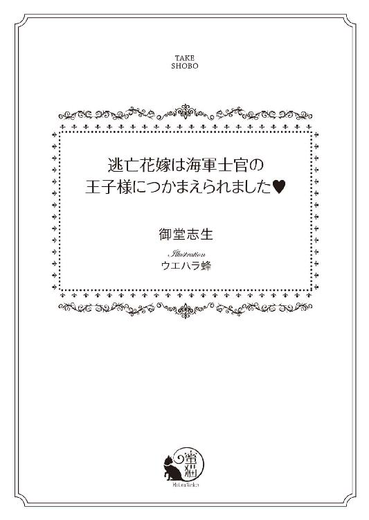
この作品は縦書きでレイアウトされています。
また、ご覧になる機種により、表示の差異が認められることがあります。
一部の漢字が簡略字で表示されていることがあります。
イラスト／ウエハラ蜂
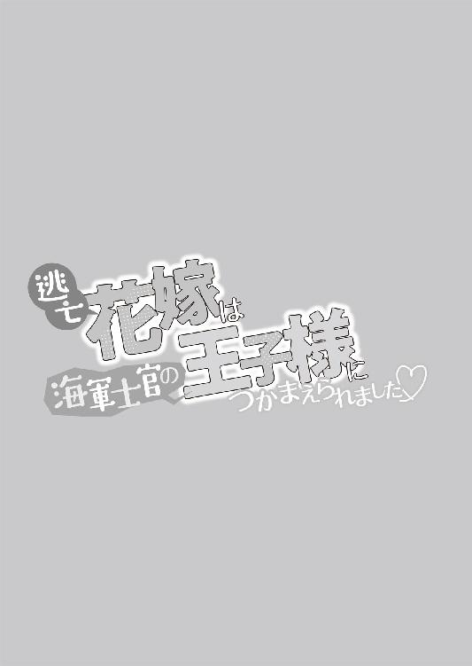
第一章 愛のない結婚なんて......と言っていられない事情
車輪が外れそうなくらいの大きな音がして、二頭立ての馬車の車体が激しく揺れた。
「きゃあっ」
悲鳴を上げたのはこの馬車の主人であり、カドガン王国の伯爵令嬢、サラ・コンスタンス・ホワイトリー。
......ではなく、サラの小間使い、モニカ・クラックソンだった。
車体が揺れるたび、泣くような声を上げてサラに抱きついてくる。
同年代の女性の中では高身長のサラに比べると、モニカは頭ひとつ分低い。美しい金髪をしており、体形も華奢で実に貴族的だ。
しかも、二十一歳のモニカは十九歳のサラより年下に見られることのほうが多い。並んで立っていると、モニカのほうを伯爵令嬢と思う人もいて......笑い話にもならない。
だが、サラが伯爵令嬢に見られない理由は、容姿だけではなかった。
「いい加減にしなさい、モニカ。この馬車に揺られて、もう三日目ではないの」
同じことを何度言っただろう。
サラはため息をつきながらモニカを叱りつける。
「そ、そんなこと、おっしゃっても......車輪が、いっ、一回外れそうになった馬車に、もう三日も揺られてるんですよ」
モニカは涙目で答える。
たしかに、カドガン王国の首都コルボーン市を出た翌日、車輪が外れそうになっていることに気づき、慌てて御者のピーター・ウィルクスが修理した。
その同じ馬車に乗っているのだから、モニカが怖がっても無理はない。
「い、いくら目立たないため、とおっしゃっても......こ、ここまでみすぼらしい馬車じゃなくてもよ、かったんじゃ？」
「何を言っているの。伯爵家の紋章付きの馬車で逃げ出すわけにいかないでしょう？ 長旅に耐えられそうな馬車はこれしかなかったのだから、文句は言わないの！」
年上のモニカに向かってピシャリと言いきる。
この逃亡劇を計画したのはサラだ。この辺りが、彼女が伯爵令嬢に思われない理由でもあった──。
カドガン王国では、貴族階級に生まれ育ったレディには、いろいろと厳しいルールがあった。
幼いころはろくに外出もできず、自宅内であっても来客の前に出ることを制限される。そしてほとんどの時間を両親ではなく、乳母や子守女中とともに過ごすのだ。男の子のように学校に行かせてもらうこともなく、家庭教師から礼儀作法や音楽、裁縫などを教わった。
十代半ばになると、彼女たちは母親の監視下に移る。
その大きな目的は社交界デビューだった。
そして、今度はどこへ行くにも付き添い人が一緒。万にひとつも間違いが起こらないよう、付き添い人は母親以上に厳しいと聞く。
その生活は全く自由がないように見えるが......。
そもそも彼女たちは、小間使いがいなくては着替えや洗顔もできず、食事を始めることもできない。子供のころからたくさんの使用人に傅かれて育つのだから、それは仕方のないことだった。
そんな彼女たちが窮地に陥った場合、誰よりも先に失神するか、現実から逃避するように泣き喚くのがせいぜいだろう。
そういった未婚のレディの中にサラが交ざると......。
ホワイトリー伯爵家は、そこそこの領地と歴史を持つ、カドガン王国内では上位に属する貴族だ。
領地からの収入も多く、資産は代を重ねるごとに増やしてきた。そうなった大きな理由は、一族の中から、賭博や娼館遊びに興じるような放蕩者を出さなかったことも大きい。
サラの父、第六代ホワイトリー伯爵、チャーリー・パーシヴァル・ホワイトリーも、社交界では変わり者扱いだが、能力的にはとくに目立つことなく、凡庸だが領民から愛された〝善き領主様〟だった。
チャーリーが変わり者と呼ばれる理由は、彼が都会より自然を愛し、厩舎でたくさんの馬を育てながら、一年のほとんどを領地のカントリーハウスで過ごしたせいだ。馬好きが高じて自ら世話をすることも多々あり......そのせいで、伯爵家の息子より、厩番の息子に生まれたほうがよかったのではないか、と言われていた。
しかしそのことが原因で、大変な事件が起きてしまう。
チャーリーが伯爵位を継いで一年も経たないころ、彼は領主としてやらなければならないことをすべて、当時の家令に任せていた。
問題はその家令だ。金に困った挙げ句、窃盗団を手引きしてしまい......危うく、先祖代々の美術品や宝飾品をすべて奪われるところだった。
それを見抜いて阻止したのがサラの母、スーザン・クリスティン。
スーザンは貧しい男爵家の出身だった。二十歳になっても社交界デビューできず、そのせいで噂ばかり先行して、清楚さと妖艶さを併せ持つ蠱惑的な美貌の持ち主などと言われた。
だが今のご時世、持参金の見込めない男爵令嬢にまともな求婚者はいない。
そんなとき、彼女の容姿だけではない様々な器量をチャーリーの父、第五代ホワイトリー伯爵が目に留め、花嫁に、と求められたのだった。
家格の差を乗り越え、嫁いでわずか一年──チャーリーの父は亡くなり、スーザンは若くして伯爵夫人となった。
直後、家令の悪事を突き止めたのだから、スーザンの地位は一族や使用人の間で急上昇する。その結果、人は善いがいささかぼんやりしたチャーリーを支え、彼女は伯爵夫人としてたくさんの役目をこなすことになったのだった。
領民からの陳情を聞き、問題が起これば仲裁し、伯爵家の資産運用まで彼女の判断で行う。
だが、それは本来なら、伯爵自身が行うべきことだろう。
『ねえ、お母様、今年もコルボーン市のタウンハウスには行かないの？ 伯爵家なのに、夜会のひとつもしないなんておかしいって言われたわ』
サラが十二歳のときだったと思う。
ホワイトリー伯爵家の領地内にカントリーハウスを所有するフィーロビッシャー子爵家の令嬢、ミラベルに言われたことを、そのまま母に話した。
ミラベルはサラより五歳年上で社交界にデビューしたばかり。コルボーン市であちこちの夜会に招かれたことや、新調してもらったドレスの話を自慢げにして聞かせ、サラを羨ましがらせた。
『お母様だって、新しいドレスなんて全然作ってないし......。早い子は十五歳で社交界デビューするのですって。わたしだって、あと三年で十五歳なのに』
焦るサラに、母は笑いながら話してくれた。
『十五歳は少し早いわね。でも、あなたが社交界にデビューするときは、カドガン王国で一番のドレスを仕立ててあげます。その素晴らしいストロベリーブロンドが映えるような素敵なドレスを、ね』
母は『約束よ』と笑ったが......。
その約束が守られることは永遠にない。
なぜなら、領地内で疫病が流行し、母も同じ病を発症して亡くなったせいだ。サラとの約束からわずか一年、母は三十四歳になったばかりだった。
母の最期の言葉は、
『サラ......お父様のこと、お願いね』──だった。
それから六年の歳月が過ぎた。
サラは十三歳で母がこなしていた役割を引き受け、父の手助けをしつつ、ホワイトリー伯爵家を守ってきた。
普通の伯爵令嬢のように、屋敷の奥に籠っていてはその役目は果たせない。
恐ろしいことがあっても失神している場合ではないのだ。そんなことでは父を助けられないし、領地や領民も守れなくなる。
それに、父に万一のことがあったとき、伯爵位はサラが継ぐことになっていた。
結婚までは後見人がつくが第七代ホワイトリー伯爵──通称、女伯爵となる。結婚後は夫が伯爵と呼ばれ、サラは伯爵夫人と呼ばれる。
だからこそ、夫は慎重に選ばなければならない。
間違っても放蕩者を夫にすれば、サラは使用人たちの尊敬を一気に失ってしまうだろう。
だが、叶うなら......伯爵家にふさわしい身分の男性と恋に落ちたい。
その男性は人々の尊敬を集めるような人格者で、魅力的な容姿をしており、サラのことを熱烈に愛してくれる男性であれば......。
（そんな幸運に巡り合わせてくださるなら、この先何があっても一生神様に感謝するわ）
今からひと月前、サラが十九歳の誕生日に、彼女がかなり贅沢な......いや、ちょっとだけ欲張りな願いごとを神に祈った直後──。
父のチャーリーは大好きな馬の事故で帰らぬ人となった。
ショックを受けながらも、サラが女伯爵となる覚悟を決めたとき、とんでもないことを聞かされたのだった。
「大丈夫よ、モニカ。アイアランド王国との国境まで、あと少し......一時間もかからないと思うから」
コルボーン市の伯爵家のタウンハウスを抜け出して、今日で三日目の夜。
最初の夜は追っ手を恐れ、ひと晩中駆けどうしだった。モニカが口にした、車輪が外れそうになったのが二日目。さすがに休憩を取ろうということになり、街道沿いの宿屋に泊まった。
そして三日目──。
冬に向かうこの時期、街道に雪が積もっていたらどうしようかと思っていた。
なんといってもサラが目指しているのはカドガン王国の最北、さらには国境を越えてアイアランド王国に入った最初の町、レッドグレーヴ。そこはカドガン王国で必要とされる結婚に関する面倒な手続きをすべて省略して、即座に結婚できる場所だった。
アイアランド王国は教会に権力を与えていない。そのため、結婚に関する規定も厳しくなかった。近接する二国は同盟を結んでおり、どちらで結婚式を挙げても違法にはならない。そこが狙い目で、カドガン王国で身分の差や親の反対により引き裂かれた恋人同士が、レッドグレーヴに駆け込んで永遠の愛を誓う。
ただ、正式な結婚は成立するが......それはいわゆる駆け落ち結婚。
カドガン王国の貴族社会には受け入れてもらえるわけがなく、顰蹙を買って、夜会には二度と呼んでもらえないといった制裁を受けることになるという。
だが、たとえそうであっても、何がなんでもレッドグレーヴに駆け込み、サラは今夜中に結婚しなくてはならない。
彼らに追いつかれる前に。
しかし、それには大きな問題が残っていて......。
「サラお嬢様、本当に上手くいくんでしょうか？」
「どんなことをしても、上手くいかせないと。わたしたちはもう、あと戻りはできないのだから」
「でも......でも、レッドグレーヴに入ってから結婚相手を見つけるなんて......無茶が過ぎませんか？」
──レッドグレーヴの町に入って、最初に出会った独身男性に結婚を申し込む。
無茶苦茶なのは、コルボーン市を出たときから承知の上だ。それは彼女にとって最後の決断だった。
サラはクッと息を止めたあと、モニカに尋ねた。
「では、モニカ。他に何か策があると言うの？」
「そ、それは......それは......」
モニカは答えられず、うつむいて涙を啜り始める。
「でも......サラお嬢様がお気の毒で......どうして、こんなことになってしまったのか......あんまりでございます」
同じことをサラも言いたい。
だが、すでに『こんなことになってしまった』以上、何を言っても無駄だった。ならば対抗する手段を講じなくてはならない。サラが泣いていても、みんな慰めてくれるだけ......誰も助けてはくれないのだから。
（そうよ。お母様に誓ったじゃない。お父様のことを助けて、ホワイトリー伯爵家はわたしが守りますって。......あんな人たちの好きにはさせない。絶対に守りきって見せる！）
サラは大きく息を吸い、モニカの手を握った。
「わたしは大丈夫よ。伯爵家を守るためなら、どんな相手とでも結婚する覚悟はできているから。あのトミー・マクニールに比べたら、レッドグレーヴの農夫を夫に選ぶほう、が......えっ!?」
「サラお嬢さ......きゃあっ！」
ふたりが手を取り合った瞬間、馬車が急停止した。
車輪が外れたのなら、車体が傾くだろう。だがそんな感じではなく、御者が無理やり馬の手綱を絞ったようだ。
進行方向に向かって、ふたりとも振り飛ばされるようになり......。
「きゃっ！」
今度ばかりはサラも悲鳴を上げた。
（な、何？ どうなっているの？）
御者のピーターに声をかけようと思ったとき、いきなり扉が開いた。
夜の冷たい風が吹き込んできて、サラの身体はぶるっと震える。
「お嬢様、すぐに逃げてください！ トミー・マクニールです。待ち伏せされました！」
ピーターは領地のカントリーハウスの厩舎に勤めている厩番だ。正確には御者ではなく、馬丁のひとりだった。
人懐こい容姿でいつも明るく笑っているせいか、屋敷の女性使用人には可愛がられていると聞く。その分、サラに対しても軽口をきくことがあり、厩番として働く先輩たちには注意されているようだ。
急な出立に年老いた御者が尻込みする中、このピーターが『自分に任せてください』と名乗り出た。
だが、そのピーターのこれほどまでに真剣な声を聞いたのは始めてだ。
サラは深呼吸をひとつして、床に転がったまま震えているモニカの手を掴む。
「さあ、早く逃げましょう！」
モニカの手を引っ張って外に出ると、そこは鬱蒼とした林の中だった。
だが、枝葉の間を縫うように射し込んでくる月明かりのおかげで、馬車の中より明るく、モニカの顔もはっきりとわかる。周りの様子も、背の高い木に囲まれていることを知り、押し潰されそうな不安に拍車をかけた。
国境はもう越えてしまったのか、それともまだカドガン王国内なのか、それを示すものは何も見当たらない。
（ピーターはどこ？）
大きな声で名前を呼ぶべきかどうか、サラは迷った。
ただ、サラたちが乗っていた馬車の進行方向──レッドグレーヴの方向に視線を向けると、そこに馬が見えた。
四頭もいるが、人が乗っている様子ではない。それに、ピーターらしき姿も見えなかった。
とにかく、馬とは逆の方向に逃げよう。
サラがそう決めて駆け出そうとしたとき、背後から男性の呻き声が聞こえた。
「ピーター!? ピーターなの？」
「俺は......大丈夫、です......モニカを......」
とても大丈夫ではなさそうな声だ。
サラがそう思った直後、モニカがサラの手を振り払った。
「いやっ、ピーター、ピーター、どこにいるの？ 私、あなたを置いて逃げるなんて......そんなことできない！」
ピーターの名前を叫びつつ、声が聞こえたほうに走り出そうとする。
「ダメよ、モニカ！」
「お嬢様はお逃げくださいませ！ 私は......ピーターを助けます！」
普段のモニカからは考えられない行動力にサラはびっくりする。
（ああ、そういうことなの......ふたりは恋人同士なのね。馬丁のピーターが御者に名乗り出た理由がわかったわ）
得心はいったが、いくらなんでも無謀だろう。
「落ちつきなさい！ わたしより小柄なあなたに何ができると言うの!?」
モニカを必死で引き止めようとして──そのときだった。
馬車の陰から大柄な男が姿を現した。男はピーターの首に剣を押しつけ、下卑た笑みを浮かべている。
そして大柄な男の後ろから出て来たのが......。
「やあ、サラ。婚約者の僕を置いて、どこに行く気だい？」
トミー・マクニールだった。
およそ剣など持てそうにない、細身というより貧弱な男が姿を見せる。その、ひ弱そうなトミーを取り囲むように、悪漢を絵に描いたような三人の男も暗がりから出てきた。
四頭の馬は、見るからに狂暴そうな男たちのものだったとわかった。
（やっぱり、トミーは馬に乗れないはずだもの。きっと、近くに馬車が停めてあるのね）
モニカはそんな男たちの姿に怯えたのだろう。震える声で「ピーター」と呟き、サラにしがみついたまま固まってしまう。
サラはモニカを背後に庇い、逃げるのを諦めて、トミーに真正面から向き合った。
「あら、従兄のトミーではないの。ごきげんよう。でも、コルボーン市以外であなたに会うとは思いませんでした」
「生意気な口をきくんじゃない！ 僕らはすでに、結婚予告を出してるんだぞ。もう一回告知すれば、結婚式だ。おまえはもう、逃げられないんだよ！」
化けの皮が剥がれるように、トミーの口調はどんどん荒んだものに変わってくる。
サラの母、スーザンには、三歳年上の姉、ナンシーがいる。トミーはナンシーのひとり息子だ。だが、彼は貴族ではなかった。
スーザンの実家、センツベリー男爵家には美しいと評判のふたりの娘がいた。
長女のナンシーは年齢不相応に豊満な肉体をした美少女だった。彼女は十六歳で社交界にデビューするなり、積極的に爵位ある男性たちを誘惑し始めた。本人はその肉体を武器に、裕福で身分の高い男性を射止めるつもりだったらしい。
しかし、その思惑はすべて外れてしまい......。
センツベリー男爵令嬢は独身の貴族全員と寝ている──そんな噂を立てられ、結婚対象から外されてしまったのだ。その結果、ナンシーは貴族の妻になることを諦め、二十歳のとき、三十二歳年上の裕福な貿易商に嫁いだのだった。
しかし、結婚後十年足らずで貿易商は亡くなったはずだ。その後ずっと未亡人を続けている。
トミーの父親はその貿易商、ということになっているが......。本当はどこかの貴族のご落胤という噂をサラは耳にしたことがある。
その噂が原因かどうかはわからない。
だが、貿易商には先妻との間にできた息子や娘が何人もおり、その財産は、トミーにはほとんど遺されなかったという。
ナンシーは人に自分の身の上を──貧しい男爵家を守るため、歳の離れた貿易商に嫁がざるを得なかった、と話すが、それは事実ではない。
なぜなら、彼女は裕福な貿易商の後妻になりながら、実家に一切の援助をしなかった。
次女のスーザンが社交界デビューできなかったのも、センツベリー男爵夫妻が長女の良縁に願いをかけて、借金までして身支度を調えさせ、ナンシーを社交界に送り出したからだ。
そんな両親や妹を顧みることなく、ナンシーは男爵家の評判を落とすだけだった。
センツベリー男爵位は現在、姉妹の父親が亡くなったとき、遠縁の男性に引き継がれた。
だが、そこまで男爵家の面目を保ち続け、晩年の両親が幸福に暮らせたのも、すべては伯爵家に嫁いだスーザンのおかげだ。
ところが、ナンシーはそれが面白くなかったらしい。
母のスーザンが生きていたころ、ナンシーが伯爵家を訪れることはなかった。サラは母が亡くなるまで、トミーという従兄に会ったこともなかったのだ。
そんなナンシーだが、母が亡くなってからはたびたび伯爵家のタウンハウスを訪れるようになり......。
最初はサラも嬉しかった。
父に兄弟姉妹はなく、すでにセンツベリー男爵夫妻も亡くなっていた。身内の少ないサラにとって、血の繋がった伯母や従兄の存在は頼もしく思えたものだ。
だが、十三歳の少女は子供ではない。
すぐに、ナンシーの目的......言い方は悪いが母の後釜に座り、伯爵夫人の称号を欲しがっている、ということに気づいてしまう。
彼女は年頃のサラの目につくところでも、平気で父のチャーリーを誘惑していた。
父が平均的な貴族であったなら、ナンシーの誘惑にあっさり落ちていただろう。だが父は、多くの貴族が嗜みのひとつと公言して憚らない『恋の駆け引き』には、一切の興味を持たない男性だった。
そのとき、ナンシーは諦めたのだと思っていたが、彼女には別のたくらみがあったのだ。
ひとり息子のトミーとサラを結婚させる、という、思いもよらないたくらみが──。
「その結婚予告には、わたしが異議を唱えました。わたしには婚約者がいます。彼と結婚するため、レッドグレーヴまでやって来たのよ」
毅然として言い返すが、次に言われることはわかっている。
「またそれか。だったら会わせろと言ってるだろう？ 名前はなんだ？ どこの国の人間だ？ 貴族なのか？ 職業は？」
矢継ぎ早に問われ、サラはギュッと口を閉じる。
するとトミーは馬鹿にしたように笑い、サラに近づいてきた。
「ハッ！ 嘘だって丸わかりだよ。ほら、そんな男はいないって正直に言え」
「い、いいえ、います！」
サラが出奔したとき、小間使いと馬丁しか連れて出ていないとわかったはずだ。
男手は、およそ屈強とは言い難い馬丁のピーターのみ。それにもかかわらず、こんな乱暴者を四人も雇うとは、サラは呆れてものも言えない。
（臆病にもほどがあるわ！）
雇った男にピーターの自由を奪わせ、目の前に立つのがか弱い女ふたりとなったとたん、トミーは威圧的な態度を取り始めたのだ。
彼はいきなりサラの腕を掴み、乱暴に引っ張った。
「あっ......くっ」
それは思いがけず強い力で、不覚にも声を上げてしまう。
「言わないならそれでもいいや。すぐそこがレッドグレーヴだし、僕たちもここで結婚しようぜ。鍛冶屋で誓いを交わしてさ、その辺の茂みで一発ぶちこんだら結婚成立だ」
本性を現したようなトミーの卑猥さに、勝ち気なサラも言葉を失った。
「お、お嬢様を、返してくだ、さ......きゃあっ！」
背後でモニカが声を上げる。
驚いてサラが振り返ると、モニカが男たちのひとりに拘束されていた。
彼女なりに、主人のサラをトミーから取り戻そうとしてくれたらしい。だが逆に、捕まってしまったことは明らかだ。
「待ちなさい!!」
サラは震える手を握りしめ、お腹から声を出す。
「わたしはカドガン王国、ホワイトリー伯爵家の次期当主、サラ・コンスタンス・ホワイトリーです。よく聞いてちょうだい。この男は伯爵家の血縁ではないから、相続権はないし、借金だらけの貧乏人にすぎないのよ！」
「なっ!? おまえ、何を」
叫び始めたサラに、トミーは慌て始め、男たちは動きを止めた。
「あなた方は、この男にお金で雇われたのでしょう？ 今すぐ、雇い主をこの男からわたしに替えてくださるなら、わたしはその倍を払います！」
腕力では敵わない。
だが、あっさりと降参してしまうわけにはいかなかった。
「う、嘘だ！ 借金なんて......倍だって？ そんな金、おまえだって」
現時点でサラに動かせるお金はたかがしれている。
だが、相続が確定すれば、サラはホワイトリー伯爵家のすべての資産を自由にできるのだ。結婚すれば、祖父母が遺してくれた信託財産も受け取ることができる。
サラは深呼吸すると、震える手で首からネックレスを外した。
「約束に、これを差し上げましょう。先代伯爵であるお父様から、社交界デビューのときに贈っていただいた金の鎖です。先端にはダイヤモンドがついているわ。これだけで、馬一頭分はするはず......どうかしら？」
男のひとりがニヤッと笑い、モニカを離すなりネックレスをひったくった。
「お、お嬢様ぁ」
サラはホッとしながらモニカと抱き合うが......。
男が顎をしゃくったとき──ピーターの「うっ！」という声が聞こえ、彼は地面に転がされたのだった。
「何をするのです!?」
「あんたらのような金持ちからは、もらえるもんはもらう主義なんだよ。それに、あんたには何をしてもいいって言われてるからな」
男は舌先で下唇をペロリと舐めた。赤い舌がヘビのように見え......サラは背筋に、たとえようのない不快感が走る。
そのとき、意外そうな声を上げたのはトミーだった。
「おっ、おい。この女は僕が妻にするんだぞ。そっちの......こ、小間使いは、好きにしたらいいけど、サ、サラは......ぼ、僕の、ものだからなっ」
「僕、僕ってうるせーんだよ。俺たちが楽しんだあとに、おまえがヤレばいいだろう？ 僕ちんには手を出すなって命令だから、見逃してやるけどさ」
「俺たちの邪魔すんなら、僕ちんも殺しちゃうぞ」
男たちはトミーを馬鹿にしつつ、ゲラゲラと笑い始めた。
するとてきめん、「は、はい、すみません」とトミーは引き下がってしまう。
両者のやり取りを聞き、サラは彼らの雇い主の正体を悟った。
トミーなら、サラを連れ戻し、結婚を強要するのが精いっぱいだと思っていた。どれほどサラが邪魔だとしても結婚するまでは殺すわけにはいかないはずだ、と。
だが、もし予想どおりなら......。
ナンシーがこの男たちを雇ったのだとしたら、トミーとは比べものにならないくらい悪辣なことをたくらんでいてもおかしくない。
そこまで考えたとき、サラはひとつの可能性を思いつく。
（まさか......わたしがトミーとの結婚を避けるため、レッドグレーヴを目指してコルボーン市から離れるのを待っていた、とか？）
首都近郊であったなら、伯爵令嬢相手に強引な手段は取れない。警備も厳しく、人の目もある。だが隣国との国境付近であれば......サラが襲われて殺されても、身元不明の女性にされてしまうかもしれない。
レッドグレーヴでトミーと結婚するのはサラの身代わりで充分だろう。誰もサラの顔を知らないのだから。
そしてコルボーン市には遺体を連れて帰ればいい。結婚する前に殺されていたことなど、誰も調べないだろうし、調べたところでそう簡単に証拠など出てこないだろう。
（あのナンシーなら、それくらいのことをするわ）
ナンシーの罠に嵌まってしまったのかもしれない。そう思うとサラはゾッとして身体が冷たくなった。
四人の男に囲まれ、サラの呼吸はしだいに速くなっていく。
刹那──頭上で枝がざっと揺れた。
強い風が吹いた感じでもないのに、サラの上にパラパラと枝葉が落ちてくる。しかも、それはしだいに数が増え......。
男たちからも「なんだこりゃ」そんな声が上がった瞬間──。
ザッと音がして、サラの鼻先を掠めるように、上空から黒い塊が落ちて来た。
「きゃあっ！」
サラより早くモニカが悲鳴を上げ、そのまま頭を抱えるようにしてしゃがみ込んでしまう。
そんなモニカと入れ替わるように、目の前の黒い塊はサラの前にすっくと立ち上がった。
すぐにそれがただの塊ではなく、人であることに気づく。しかも、かなり大柄の男性だ。真っ黒なのは、頭から膝まで黒い外套ですっぽりと覆っているせいだった。
サラは唖然としたまま、頭上にチラッと視線を向ける。
林道の左右に見えるのは楡の木だろう。彼はこの木に登っていたのだろうか？ だが、こんな夜にいったいどうして？
「なんだ、おまえ!? どこから来やがったんだ？」
「殺されたくないなら、さっさと消えろ！」
男たちは口々にどすの利いた声で脅しつつ、黒い外套の男性を追い払おうとした。
ところが、その男性は彼らの脅迫など軽く無視して、サラのほうを振り返り......頭を覆った外套をサッと取る。
そして、顔を見せるなり、にっこりと笑ったのだ。
「待たせたね、レディ・サラ」
一瞬、春がやって来たのかと思った。
それくらい、胸が温かくなるような笑顔と声色で......サラは絶体絶命の窮地にありながら、どうしようもなくドキドキしてしまう。
さすがに月明かりだけではっきりとは見えないが、髪の色も瞳の色も黒っぽい。北上するほど、髪も目も淡い色合いの人が多いと聞くのに、外套も合わせて、彼は全身真っ黒だ。
だが、人懐こい笑顔のせいだろうか、禍々しさは一切感じない。
（この近くの人じゃないのかしら？ ああ、違うわ。そんなことより、彼はどうしてわたしの名前を知っているの？）
サラは心の中でと首を傾げるが......。
「はあ？ なんだよ、おまえ、ナニモンだ？」
サラの心を代弁するように、男たちのひとりが尋ねた。
すると、黒い外套の男性はしれっとした顔をして答えたのだ。
「俺か？ 聞くまでもないだろう？ レディ・サラの婚約者、ヒュー・ザックだ。レッドグレーヴで結婚する約束をしたんだが......遅くなってすまない」
最後の言葉はサラに向けてのものだった。
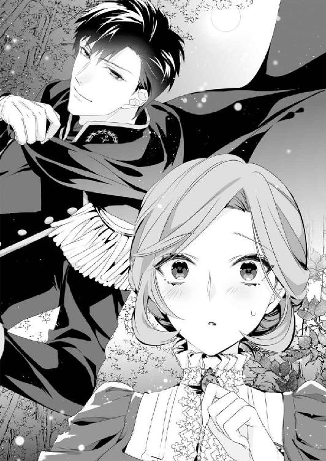
俄に、男たちの間に動揺が走る。
しゃがみ込んだままのモニカも、目を丸くしてサラの顔を見上げていた。
ここで馬鹿正直に『あなたのことなど知りません』と言ってしまってはダメだろう。サラは深呼吸すると、一応笑顔らしきものを作って彼に合わせた。
「え、ええ、ミスター・ザック......でも、そ、空を、飛んで来てくださったの？」
「ああ、君をびっくりさせようと思って。驚いただろう？」
「そ、それはもう」
サラが真剣にうなずくと、黒い外套の男性──ヒューは目を細め、今度は蕩けるような笑顔で声を立てて笑った。
これほどまでに屈託なく笑う男性を、サラは見たことがなかった。少なくとも、カドガン王国の貴族階級の男性は、人前で声を立てて笑ってはいけない、と教育されるはずだ。
感情をあからさまにすることは身分の低い者のすること、と女性のサラでさえ、きつく教え込まれた。
だが父のチャーリーはそれが納得できず、
『悲しいときには泣きたいし、楽しいときは大きな声で笑いたい。そんな私は貴族らしくないのだろうね。領地のカントリーハウスで馬に触れているときが一番幸せだ』
こんなふうに言って亡き祖父母を困らせていた、と父自身が困った顔で話してくれたことを思い出す。
（ああ、見た目は全然違うけれど、この方はお父様に似ているんだわ。心のままに笑えるところとか......）
サラはヒューに父の笑顔を重ねる。
そのまま亡き父との思い出に浸りかけ、胸が熱くなり......。
「そ、そんなわけない！ サ、サラは、僕と結婚するって、ママが言ったんだ」
懐かしい思いを打ち砕くように、トミーが不満を叫んだ。
とっくに逃げ出したと思っていたのに、どうやら馬車の後ろに隠れていたらしい。
「それは悪かったな。じゃあ、家に帰ってママに確かめてみるといい」
突然現れたヒューにまで子供扱いされ、トミーは地団駄でも踏み出しそうな顔をして......なぜか、サラのほうを睨んでいる。
自分より体格がよく、得体の知れない男性に挑む勇気はないらしい。
ヒューの登場をサラのせいにしながら、内心でナンシーの雇った男たちがヒューを倒してくれることを願っているに違いなかった。
そして男たちは......。
とくにトミーの願いを叶えてやろうとしたわけではないだろう。
ただ、雇い主から命令されたことを果たすためには、ヒューを倒さなくてはならない、と判断したようだ。
彼らはいつの間にか腰に下げた短剣を抜き、ジリジリと近づいてきている。
今度の狙いはサラではなく、まずはヒューを片づける気らしい。
「ミスター・ザック......もし、命に危険があると思われるなら、逃げてください。我が家の揉めごとに、あなたを巻き込むわけにはいきません」
サラは小声で告げる。
すると、ヒューから思いがけない言葉が返ってきた。
「レディ・サラは美人で賢いが、男にはもてないだろう？」
「なっ！ そ、そんなこと......おっしゃっている場合ですか!?」
サラは真っ赤になって言い返す。
「レディはこういうとき──お願い、助けて......と言って震えてるだけでいい。可愛げがないと、結婚相手はみつからないぞ」
「お、大きなお世話です！」
サラがつい大きな声を上げると、男たちは呼応するように唸り声を上げてこちらに突っ込んできた。
次の瞬間、ヒューはバッと外套を後ろに払いのけた。
外套の下に着ているのは、サラが初めて目にする軍服──それはおそらく、アイアランド王国が誇る海軍の士官服ではなかっただろうか。
上着の立ち襟に付けられた紋章、カドガン王国の軍服ならそこに星が付いている。だがアイアランド王国の軍服は陸軍が剣、騎兵隊は蹄鉄、そして、ヒューの襟には海軍を示す碇が付いていた。
白っぽい房飾りが付いた肩章も銀色に違いない。黒く見える上着は、おそらく濃いグレーをしているはずだ。足元には同色のゲートルを巻き、穿いているのはカドガン王国の軍服と同じ白のブリーチズだった。
利発なサラは様々な本を読みたがり、学びたがった。女の子には許されないことが多かったが、父は後継ぎ娘だからと周囲に言い訳して、男の子と同等に勉強をすることを許してくれたのだ。
軍服に関する記述は、そのときに読ませてもらった本に書いてあったことを覚えている。
そこまで考えたとき、最初のひとりがヒューに斬りかかった。
だが、男の剣は空を切り──ヒューが鞘ごと腰から抜いたカットラスが、ひとり目の男の顔を殴打していた。
男は一瞬で意識を失ったのか、剣を掴んだまま地面に倒れ込む。
「俺の職業を教えてやろう、アイアランド王国海軍中佐だ。エルベル海賊討伐の任務に当たっていたが、王命により帰国したところだ」
ヒューの言葉に他の三人の足が止まった。
「おまえたちのような雑魚相手にこいつを抜く気はない。怪我をしたくなければ、仲間を連れてとっとと失せろ！」
サラは驚きのあまり息を呑んだ。
だが、男たちの驚きはサラ以上だった。目に見えて動揺が広がり、彼らの表情が変わったように見えた。
そのまま引き下がるように思えたが......恐怖は彼らを窮鼠と化した。
咆哮を上げながら突撃してくる男たちの様を間近に見て、さすがのサラも気を失ってしまいそうになる。
ところが、ヒューの口から零れたのは「チッ！」という短い舌打ちだった。
彼は突っ込んできた男を軽くかわし、カットラスの柄で男の眉間を打つ。ひとり目と同じく、男は垂直に膝をつき地面に突っ伏した。
三人目の男は鳩尾をブーツの踵で蹴られ、胃液を吐きながら悶絶してしまう。
ほんの一分足らずの間に立っている味方がゼロになってしまい、最後に残った男は足が動かなくなったらしい。
その男に今度はヒューのほうから近づき、
「俺は逃げろと言ったんだぞ。金に目が眩んで、アイアランドまで悪さに来るからだ。これからは、せいぜい相手を見てケンカを売るんだな。......まあ、生きていれば、の話だが」
ふいに背中を向けた男の首筋に、ヒューは肘打ちを入れる。
すると、最後に残った男も地面とキスする勢いで倒れ込んだのだった。
「おい！ そこの坊や。お帰りはあちらだ」
トミーはすでに、地面にだらしなく座り込んでいる。もはや、ヒューになんと呼ばれても逆らう気力もないようだ。
「は、はい、でも......僕の馬車は、レッドグレーヴの......宿屋に、置いてるんで」
カドガン王国のほうを指差されたせいか、トミーは小声で反論する。
だが、ヒューの返答は容赦がない。
「二本の足があるだろう？ この場で叩きのめされて、我が国の国境警備兵に捕まりたくなければ──走って帰れ！」
「はいぃっ！」
トミーは泣くように返事をすると、脱兎のごとく林の中の街道を駆け戻って行った。
林の中に静寂が戻った。
遠くからフクロウの鳴き声が聞こえてきて、サラの緊張もようやく解けてくる。
「ピーター！」
モニカの声に、ハッとして馬車のほうに目をやった。すると、ヒューがピーターを抱え上げ、馬車に乗せてくれるところだった。
サラは足元の男たちを避けながら、慌てて駆け寄る。
「ミスター・ザック、ピーターの怪我は酷いのでしょうか？」
「いや、殴られて意識を失ってるけど、たいした怪我じゃない。気つけの酒でも飲ませてやれば、すぐに目を覚ますさ」
その返事にサラは胸を撫で下ろした。
だが、馬車の中は狭く、ピーターを横にして寝かせたら、モニカが乗り込むだけでいっぱいだ。
それ以前に、御者がいなくては馬がいても馬車は動かない。
（馬なら乗れるのだけど......馬車は、一頭立ての軽馬車しか動かしたことがないわ）
領地内をひとりで移動するときは、馬を使うことが多い。荷物がある場合は軽馬車の手綱を自ら握る。
ただ、この大きさの二頭立て馬車なら、走らせる自信はあった。しかし、さすがに領地の外で、伯爵令嬢が御者台に立つわけにはいかないだろう。
そのとき、サラの横をすり抜け、ヒューが御者台に立った。
「さあ、お手をどうぞ、レディ・サラ」
御者台にはふたり分の座席がある。
手を差し伸べられ、ごく自然に彼の手を掴もうとしたとき......サラは我に返った。
「ちょっと待ってください！ あの......あなたはどうして、わたしの名前や身分を知っているのです？」
「それは今から説明しますよ。まずは乗ってから」
「いいえ！ 先に説明していただかなくては、隣に乗るわけに、あ......きゃっ」
引っ込めようとした腕を掴まれ、前のめりになった瞬間、もう片方の手がサラの背中に回された。
そのまま一気に引き上げられ、逆らうこともできずに御者台に乗せられていた。
「ぶ、無礼では、ありませんか!? アイアランド王国の海軍中佐ともあろう方が......こ、こんな、いきなり」
「言っときますが──あの連中、叩きのめしただけなんでね。のんびりしてると目を覚まして、また襲いかかってくるかもしれない。そうなると、厄介だろう？」
言われてみれば、たしかにそうだ。
それに、通りすがりで助けてくれたヒューに対して、『無礼』呼ばわりなど、こちらのほうが失礼極まりない言い草だった。
ヒューが手綱を握り、馬を追い始める。
レッドグレーヴまであとひとっ走りの距離だと、ヒューが教えてくれた直後、サラは深呼吸して彼を見上げた。
「ミスター......いえ、ザック中佐、このたびはわたしどもの窮地を救っていただき、ありがとうございました」
できる限り居住まいを正して会釈する。
「でも、どうして楡の木に登っていらしたのです？ それに、わたしの名前は......木の上で聞かれたからご存じだったのですか？」
「いや、さっきの坊やが言ってただろう、レッドグレーヴの宿屋に馬車を置いてる、と。俺もその宿屋に泊まるつもりで、一階の酒場で飲んでたんだ──」
帰国したばかりのヒューはレッドグレーヴの宿屋に入った。宿屋はたいがい一階に食事もできる酒場があり、客室は二階にある。彼がその一階で飲んでいると、国境沿いの田舎町には珍しい、貴族風の言葉遣いが聞こえてきたと言う。
しかもその内容が、
『サラは僕の花嫁なんだから、傷ひとつつけないようにしてくれよ。伯爵令嬢なんだ、おまえたちなんか近づくこともできないくらい、高貴な女性なんだからな』
『はいはい。だから、わざわざ国境を越えたところで狙うんでしょうが。何かあったとき、アイアランドの山賊に襲われたことにするって。俺はそう聞きましたぜ』
『御者は殺してもいいが、サラはダメだぞ。女が欲しいなら、小間使いを襲え』
『はいはい。わかってますよ、ミスター』
『サーと呼べ。僕はもうすぐ、伯爵閣下と呼ばれるんだからな』
そんなふうに宣言して、トミーは高笑いしていたという。
「たしかに、森の多いアイアランドには山賊も多い。だからと言って、カドガンの悪党の罪まで、押しつけられる謂れはないだろう？」
ヒューの言葉は正しい。
トミーがそんな恥知らずなことまで考えていたとは思わなかった。だがそれ以上に、彼らが先回りして待ち構えていたことに、サラは衝撃を受けていた。
ヒューは彼らの話を聞いたあと、国境を越えたところを狙うならあの林しかないと思い、その足で宿屋から林に向かったと言う。
だが、帰国したばかりで馬を調達していなかった彼は、徒歩で駆けつけるしかなく......。
あとから馬で宿屋を出たトミーたちとかち合ってしまいそうになり、慌てて楡の木に登ってしまったらしい。
「下りるに下りられないし、事態はどんどん悪くなるし......まあ、一気に近づくには最高の位置ではあったけどな」
愉快そうに笑うヒューの横顔を見ていると、ごく自然にサラも笑顔になっていた。
（わたしったら、呑気に笑っている場合ではないのに。今夜中にも結婚相手を見つけなくてはいけないの、に......）
そこまで考え、サラはひとつのことに思い当たった。
「ザック中佐！」
「ど、どうした？ 急に大きな声を出して」
サラは大きく息を吸うと、
「奥様は、いらっしゃいますか？」
真剣な声で尋ねる。
ヒューは面食らったような顔をしたが、すぐに真面目な顔で答えてくれた。
「いや、独身だ」
「で、では、将来を約束した女性は......いかがでしょう？」
「それもいないが」
その返事を聞いた瞬間、サラは叫んでいた。
「ザック中佐！ あなたにお願いがあります。どうか、わたしと結婚してください!!」
☆ ☆ ☆
傾いた看板に書かれた文字は──ようこそレッドグレーヴへ。
そこを通り抜けると最初に見えてくるのが、結婚式を執り行ってくれるという鍛冶屋の小屋だった。
深夜に近い時間だったが、火床には赤々と炎が見える。
「レディ・サラ、本当に俺と結婚しても後悔しないか？」
サラの手を引いているのは、ほんの数時間前に出会ったばかりの男性ヒュー・ザック。
「ええ、もちろんです。わたしの心はもう決まっています」
きっぱりと答えて、サラは自分の手を握るヒューの手の上に、もう片方の手を重ねた。
直後、鍛冶屋が金床を鎚で思いきり叩く。カーンという音が小屋の中に響き渡り──ふたりの結婚は成立した、と宣言したのだった。
馬車の御者台でサラのほうから求婚したとき、さすがに即答はしてもらえなかった。
特別な事情があることくらい、木の上で聞いていたからわかるが......その事情を聞かないことには返事ができない、と言われたのだ。
『カドガンの伯爵位は、ほとんどが女性でも継承できるんじゃなかったか？ それともホワイトリー伯爵の特許状には、婚姻の義務でも書かれているのか？』
さすが海軍士官なだけあり、隣国の爵位継承についての知識もあるらしい。
国によって違うが、カドガン王国の場合、伯爵位の継承は女性にも認められている。そのことは叙爵の際に特許状にしたためられ、代を経ても変わることはない。ホワイトリー伯爵も同様だった、いや、そのはずだった。
父のチャーリーが亡くなり、爵位の第一継承者として認められていたサラが継承を申し出たとき、どうしたことか却下されてしまう。
それまで記されていなかったはずの特記事項──女性の継承者は既婚であること、という一文が書き加えられていたためだ。
そんな一文は見たことがないと訴えたが、聞き入れてもらえなかった。
サラは仕方なく結婚相手を探すことにした。ところが、社交界では誰もサラに近づいて来ようとはせず......。
そんなとき、自分の息子と結婚すればいい、と言ってきたのがナンシーだった。
疑問は感じたが......。結婚前は男爵令嬢、今の地位は商家の未亡人、そんなナンシーに、爵位継承に口出しできるほどの権力などあるはずがない。
だがその直後、サラはナンシーを甘く見ていたことを知る。
ナンシーは社交界にデビューしてから結婚するまで、多くの浮名を流した。その相手のひとりが......カドガン王国の女王の第一王子、現在のロバート皇太子だったと言うから驚きだ。
皇太子とナンシーの愛人関係は彼女の結婚後も続いていたという。
そして、トミーの実父は皇太子ではないか、というまことしやかな噂まで流れていたらしいが、父親同様、社交界に疎いサラにそこまでの情報は届いておらず......。
あらためて調べてみたが、皇太子がそのことを認めたという話は出てこなかった。
だが逆に、認めていないことに負い目を感じ、皇太子はナンシーのお願いにノーと言えないのではないか、という話なら、大勢から聞かされたのだ。
ナンシーのたくらみの裏には、皇太子がいるに違いない。
その場合、どれほどサラが請求しても、爵位継承の条件が見直されることはないだろう。加えて、カドガン王国の貴族がサラに求婚する可能性もなくなった。
皇太子の不興を買ってまで、手に入れる価値が自分にあるとは思えない。
『海軍士官ということは、ご長男ではないのでしょう？ お金は相続が完了しだい、可能な限りお支払いします。離婚はできませんが、離れて暮らすことでかまいません。それに......じょ、女性、関係ですが......わたしが妻の務めを果たせない分、どのような女性を傍に置かれても、一切の文句は言いません！』
サラが息せき切ってそこまで話し終えたとき、御者台からレッドグレーヴの町の灯りが見えたのだった。
だが町に入る直前、ヒューは手綱を引いて馬車を停めた。
見上げた彼の難しい横顔に、サラはもっと有利な条件を付け足すかどうか迷う。なぜなら、どうしても彼に断ってほしくなかったからだ。
ホワイトリー伯爵家のためなら、どんな男性とでも結婚式を挙げて一夜を過ごす、と決めたはずだったのに......。
今のサラは、隣に座る軍服姿の男性以外、結婚相手に考えられなくなっている。
（皇太子殿下のことは言わないほうがよかったかしら？ 有力貴族と言ってごまかしたほうがよかった？ この人が仕えるのはアイアランドの国王様でしょうけど、でも......）
馬鹿正直にも皇太子の名前を出してしまったことに、サラは後悔が浮かぶ。
そのとき、
『結婚──してもいい』
ヒューの呟きに、サラの心は一瞬で光に満たされた。
『本当ですか!?』
『だが、金はいらない。それから、一夜のみではダメだ。父に会ってもらうし、俺の......子供も産んでほしい。君が無事に伯爵位を継いだとしても、領地の管理は人に任せて一緒に暮らしてもらうことになる』
その言葉は、サラの胸に重くのしかかった。
ヒューの両親に挨拶するだけでなく、彼の子供も産まなくてはならない。そうなると、サラはこのアイアランドで暮らすことになるだろう。
サラ自身がホワイトリー伯爵領の管理はできないし、思い出の詰まったカントリーハウスに一生戻れないかもしれない。
レッドグレーヴの町でお金に困った独身の男性を見つけるつもりでいた。
年齢も容姿も問わず、承諾してもらえたら、すぐにも結婚式を挙げる。そして一夜を過ごして本物の結婚にしたあと、充分なお金を渡すことで、それぞれの国で別居結婚を続けることを提案するつもりでいたのに......。
彼と結婚すれば、その前提がすべて崩れてしまう。
『迷うなら、やめたほうがいい』
ヒューは彼女を諭すように言った。
彼の本心は、サラのほうから、『やっぱりやめます』と言い出すのを期待していたのかもしれない。
だが、ホワイトリー伯爵家には、サラ以外に伯爵位を継ぐ人間はいなかった。
サラが諦めたら、領民たちは新しい領主を迎えることになるだろう。
（お母様が大切にした領地や領民も、お父様が愛した馬たちも、すべて、わたしの手から離れてしまう。もし、先祖伝来の品も、何もかも売り払って、お金に換えてしまうような人の手に委ねられてしまったら？）
心は揺れるが、迷ったまま結婚してはヒューに迷惑をかけてしまう。
やはり、大きな権力に逆らうことは諦めて、トミーとの結婚を承諾すべきだろうか？
仮にトミーと結婚した場合、彼は『伯爵』と呼ばれるが、共有財産は爵位を継いだサラの許可なしでは動かせない。祖父母や両親が遺してくれた信託財産は彼女自身のものだし、爵位と領地を守るためには、トミーとの結婚も仕方がないのでは......。
その考えに囚われそうになったとき、サラはトミーとナンシーの会話を思い出した。
『結婚してしまえばこちらのものよ。共有財産なんて冗談ではないわ。妻のものは夫のもの。そして夫のものは夫のもの......いいえ、ママのもの。それでいいわよね？』
『美人のサラを妻にできて、伯爵様って呼ばれて、たっぷりの小遣いで遊んで暮らせるんだろう？ だったら、あとはママの好きにしたらいいよ』
ナンシーの言葉には毒が含まれていた。
トミーだけなら、お金さえ与えたらサラの味方に引き込めるかもしれない。
だがナンシーは別だ。あの四人の男たちに命じた内容から考えれば、彼女は確実にサラの命を狙ってくる。
ヒューの手を取れば、サラは祖国に戻れない。
だが、爵位は手放さずに済むのだ。いずれは、サラの産んだ子供に委ねられる日が来るかもしれない。
サラは心を鎮めるべく、深呼吸した。
『いいえ、もう迷ってなどいません！』
『軍人というだけで、素性もわからない男を信用するのか？ 俺は伯爵令嬢を騙そうとしている悪党かもしれないぞ』
『そんなことはありません。ザック中佐はわたしたちを助けてくださいました。もちろん、海軍中佐としての矜持に基づいての行いでしょう。ご迷惑を承知でお願いいたします。どうか、わたしをお助けください！』
あれほどまでに思い悩んだ結婚は、あっという間に成立してしまった。
（こんなに、簡単なことなのね。手順を飛ばしたい者たちが、こぞってレッドグレーヴを目指すはずだわ）
しかも、夜中にもかかわらず、鍛冶屋は快く結婚式を挙げてくれた。
この地までやって来て結婚しようとする人たちは、みんななんらかの事情を抱えている。誰もが一刻も早く結婚したいと思っており、その願いを叶えてやりたいのだ、と鍛冶屋は話していた。
サラがそんなことを思い出しながら結婚式の余韻に浸っていたとき、ヒューは自分の首からペンダントを外し、彼女の首にかけてくれたのだった。
「急なことで指輪も用意できなかっただろう？ その代わりと言うか......母の形見だ」
ペンダントトップには聖母子像が刻まれていた。穏やかな横顔のマリアと無邪気な幼子──キリストの姿だ。
「まあ、そんな大切なものを......わたしがいただくわけには」
「大事なものだから、妻以外の女に渡すつもりはない」
「中佐......」
外套を外した軍服姿の彼は、月光の下で見た姿より数十倍凛々しく感じる。
ブルーブラックに艶めく髪は、水に濡れているようにセクシーでなまめかしい。黒に見えた瞳は、ダークグレーだとわかった。
意外だったのが肌の色。ヒューは逞しく日焼けしたブロンズ色の肌をしていた。
本国よりだいぶ南下したところにある『エルベル海賊討伐の任務に当たっていた』と言ったのは本当のことだろう。
カドガン王国の社交界にも最前線で活躍し、若くして英雄と呼ばれる軍人たちがいた。
サラには両者を比べられるほどの親しい軍人はおらず、遠目で見た限りだが、それでもヒューのような精悍さはなかったと思う。
（中佐は軍人の家系かしら？ 貴族かどうかわからないけど......でも、見た目はあまり貴族らしくないみたい）
サラがジッと彼を見上げていると、太くて長い指がサラの髪に触れた。そのまま何度もすくい上げ、珍しそうにみつめている。
「木の上からは金髪に見えたんだが......」
「変わった色でしょう？ これでも、生まれたときは母譲りの蜂蜜色の髪だったんですよ。でも十歳を過ぎたころから、赤みが出てきて......ストロベリーブロンドと呼ぶそうです」
父が癖のある赤毛だった。
両親の色が交ざったようで、サラは単純に嬉しく思っている。両親も『素晴らしい色』と褒め称えてくれたが、社交界では『変な色』と陰口を叩かれていると聞く。
（やっぱり変な色って思われているのかしら？）
サラが不安を感じ始めたとき、ヒューが驚いたように呟いた。
「そうか、これがストロベリーブロンドなのか。ああ、いや......実は、亡くなった母も赤みがかった金髪でストロベリーブロンドだったと聞いたことがある。そうか......こういう色だったんだな」
「聞いたこと？」
髪の色を覚えていないくらい小さいときに、ヒューの母親は亡くなったのだろうか？
サラが心の中で呟いた疑問を、ヒューは敏感に察したらしい。
「俺を産んだときに亡くなったんだ。だから、母の顔は全く知らない」
言いながら、彼はサラの髪に唇を寄せた。
「母はとても美しい髪の色をしていた、と......生まれてから二十五年間探し続けて、ようやく出会えた。しかもそれが自分の花嫁だなんて、不思議な気分だな」
彼の告白を聞き、サラは不思議な縁を感じた反面、申し訳なく思った。
運命のような相手が、押しかけ花嫁とあっては、ヒューを見守っているはずの母親も困惑しているのではないだろうか、と。
「あの、ザック中佐、わたしは......」
「ヒューでいい。俺もサラと呼ぶから、夫婦になったんだから、いいだろ？」
ダークグレーの瞳にみつめられ、サラは声も出せずにコクコクとうなずいた。
結婚相手は農夫でもよかった。それこそ、この鍛冶屋の職人でも充分だ。ただただ、サラとの約束を守ってくれる誠実な男性でさえあったなら。
それだけを願っていた。
（ああ、どうしましょう。中佐と......いえ、ヒューと結婚できてよかった。ヒューのお母様と髪の色が同じでよかった、なんて......そんなことばかり考えてしまうわ）
ヒューとみつめ合って立っていると、
「おーい、新婚さん。そろそろ店じまいだ。いちゃつくのはさ、ふたりっきりになってからにしてくれよ」
鍛冶屋にひやかされ、ふたりは慌てて外に飛び出したのだった。
ヒューが泊まる予定の宿屋は、鍛冶屋のすぐ裏手にある。すぐそこだが、暗くて危ないからと言い、彼はサラの手をしっかりと握ってくれた。
大きな掌に包まれる感覚、それは父を亡くしたときに失った安堵感に似ていて、彼女はホッと息をつく。
この町に着いた直後、サラもその宿屋に部屋を取った。
ピーターとモニカはそこでサラの帰りを待っているはずだ。ピーターの意識はすぐに戻ったが、頭を殴られた彼には横になっているよう命じ、モニカに看護を頼んだのだった。
「あの、中佐は......いえ、ヒューはご自分の部屋に戻られますよね？ わたしは......部屋がひとつしか空いてなかったので......でも、ベッドはピーターを寝かせていますし」
夫婦になったのだから、彼の部屋に行くのが当然だと思う。
だが、サラのほうから『わたしはあなたの部屋に泊めていただいてもいいですか？』と尋ねるのは、どうにも恥ずかしい。
自分でも何が言いたいのかわからないくらい、しどろもどろになってしまう。
そんなサラの戸惑いは、ヒューにも伝わったようだ。
「怖いなら、そう言ってくれ。いきなり妻を泣かせたくはないし、何がなんでも今夜中にやらなきゃいけないことでもないんだから」
「で、でも、それでは、結婚が成立しません。それとも......わたしでは、お嫌ですか？」
「嫌なわけがないだろう？ だが、本当にいいのか？ 田舎町の安宿だから、隣の部屋に声が筒抜けになると思うが」
「つっ、筒抜け、ですか!?」
サラは声が裏返ってしまう。
カントリーハウスでは母屋から見て左翼側はすべてサラの私室だった。寝室の左右の部屋に人が寝ているなど、あり得ないことだ。
「それでは、秘密のお話などできませんね。でも、しょ......や、というのは、隣の部屋にまで聞こえてしまうような、大きな声を出すことなのですか？」
サラは真剣に尋ねたつもりだったが、ヒューにとってはかなり愉快なことだったらしい。
彼は手を繋いだまま、身体をふたつ折りにして笑っている。
「申し訳ありません。わたしは十三歳のときに母を亡くしたので、嫁ぐための心構えを教えてくれる人がいませんでした。でも、領地を出る前に、書物で勉強いたしました。ただ、声についての記述はよく覚えていなくて......ごめんなさい」
「いやいや、謝らなくていいから。それに、レディに声を出させることなく、済ませる方法もあるにはある」
可能なら今回はその方法で、とお願いしようとしたが、
「けど、手早く済ませようとすると、かなり痛むだろうな」
「......え？」
ヒューの深刻そうな表情に、サラも覚悟も鈍ってしまう。
「俺もしばらくご無沙汰だから、なんていうか......手加減できなくなるかもしれないし」
初夜の契りというのは、なんだか大変なことらしい。
そういえば、フィーロビッシャー子爵令嬢のミラベルがお嫁にいったとき、こっそりサラに話してくれたことを思い出す。
──結婚式の夜も二日目も上手くいかず、三日目にようやく結ばれたのだけど、身体中が痛かった。見目のよい、若い男性を選んだのは失敗だった。結婚相手は、年上の経験豊富な男性のほうがよかったかもしれない。
ミラベルは大きなため息をつきながら、そんな愚痴をこぼしていた。
「あの、ヒューは経験豊富ですか？」
思わず口にしてしまったが、彼の目にはあからさまな動揺が浮かんでいる。
「それは、その......それなりに、ってとこかな？」
「そっ、そう、ですよね。二十五歳ですもの」
胸の奥がチクンと痛む。経験豊富という返事に喜ぶべきなのに、何かモヤモヤとしたものを感じる。
だが、よくよく考えればとんでもない質問をしてしまった。
頬が火照り、ヒューの顔を見上げるのも恥ずかしくなる。しだいに、繋がった手が燃え上がりそうなほど熱く感じ始め──。
ふたりは手を繋ぎ合ったまま、道の真ん中に立ち止まっていた。
首都コルボーン市からそう離れていない伯爵領を出て三日が経つ。肌に触れる空気は少しずつ冷たくなり、アイアランド王国に入ってからは風の匂いも変わった気がする。
この町が林に囲まれているせいだろうか──こうして道に立っているだけで、木々の爽やかな香りに包み込まれる感じがする。深く空気を吸い込むと、身体の中が洗われていくようでなんとも言えず気持ちがいい。
サラは火照りを抑えるため、二度、三度と深呼吸を繰り返す。
そしてとくに意識するわけではなく、彼の手をギュッと握りしめていた。
「サラ、そんなふうに手を握られたら、俺も引けなくなる」
「すみません！ わたしも、もう、どうすればいいのか......覚悟はできているのですが、どれくらい痛いのか、それが......少し怖くて」
とっさに謝り、手を放そうとしたとき──。
逆に、ヒューのほうがしっかりと握り返してきた。
そして、掴んだままのサラの手を口元に持っていき......。
「できるだけ、優しくする」
手の甲に軽く口づけながらささやく。
サラは彼の目をみつめたまま、コクンとうなずくのだった。
第二章 初めてなのに......こんなに気持ちいいなんて
伯爵家のカントリーハウスにある門番小屋に似ている。
サラがレッドグレーヴに着いてすぐ、ヒューと同じ宿屋に案内してもらったときに浮かんだ感想がそれだった。
宿屋は大柄で人の好さそうな女将と、酒好きの亭主のふたりで切り盛りしているらしい。
ふたりが宿屋を出たとき、一階の酒場はまだそれなりに賑わっていた。だが結婚式を終えて戻ったときには、酒場には客のひとりも残っておらず......。
それでも女将は笑顔でふたりを迎えてくれたのだった。
「無事に結婚できたようだね。アイアランドの海軍さんが、カドガンの箱入り娘を連れ去ったってとこかい？ なかなかやるじゃないか、中佐のお兄さん」
女将は見事にヒューの階級を言い当てた。
出征前に結婚式を済ませようとする兵士は少なくないようで、長くここで宿屋をしているうちに、軍服を見ただけで階級がわかるようになったという。
「士官さんの中でも中佐さんは珍しいよ。出世頭だろうし、貴族階級の親でも賛成してくれそうなもんだけどねぇ。よっぽど断れないような許婚でもいたのかい？」
レッドグレーヴは駆け落ち結婚の聖地だ。ここに駆け込んでまで一緒になりたいというふたりは、熱烈に愛し合っているものなのだろう。
まさか数時間前に出会ったばかりです、とは言えず、サラは無言で目を伏せる。
「ま、そんなとこかな。それで女将さん、頼んでおいた部屋はどうなった？」
「ああ、喜んどくれよ。事情を話したら、一番大きな部屋のお客さんが替わってくれたんだ。なんたって新婚さんにはしっかりしたベッドが必要だからってねぇ」
女将は大きな声で笑ったあと──「二階の一番奥の部屋だよ。頑張んな、新婚さん」とヒューの背中をバンバン叩いたのだった。
鍛冶屋で結婚式を挙げたばかりのふたりが、これから初夜を迎える。
そのことは、きっとこの宿屋に泊まった全員が知っていることなのだろう。
結婚式を挙げた夫婦が、その夜のうちにベッドをともにすることは、決して恥ずかしいことではない。むしろ結婚を完全なものにするためには、欠かせないことだった。
サラは頭の中でその言葉を繰り返すが......。
（ああ......でも、理屈ではなくて......なんだか、とっても恥ずかしい）
とにかく急いで二階に上がろうと思い、サラが階段に足を置いたときだった。
ふいに、背中と膝の裏側をすくい上げられ、サラの足は宙に浮いていた。
「きゃっ!? ヒュー、なっ、何を？」
彼はサラを横抱きにして、階段を上り始める。
「花嫁はこうして抱き上げて、新居に入るものだろう？」
すぐ近くにヒューの顔があった。
彼は当然のように微笑んだあと、片目を閉じる。
「まあ、安宿の一室だけどな」
小声で付け足すが、背後から「悪かったね、安宿で！」──そんな女将の声が聞こえてきて、ふたりは顔を見合わせて笑った。
そのとき、ギシッと階段が大きく軋み、サラはとっさにヒューの首に抱きつく。
薄汚れた灰色のドレスの袖が目に飛び込んできて、サラはようやく自分の身なりに気づいたのだった。
ヒューに結婚を承諾してもらったあと、取るものも取り敢えず鍛冶屋に飛び込んだ。
だが、いくら急いでいたとは言え、もう少しちゃんとしたドレスに着替えたほうがよかったのではないだろうか。
（いやだ、どうして気づかなかったのかしら？ 旅行用の質素な綿のドレスで結婚式なんて、きっとヒューに恥をかかせてしまったわ）
サラが着ているのは、なるべく目立たないようにと選んだ地味な灰色のデイドレスだ。デザインも凝っておらず、未亡人のような装いだった。
申し訳なさと恥ずかしさに、サラは彼の腕の中で縮こまってしまう。
「さあ、この部屋だ。伯爵家のお屋敷とは比べるべくもないけど、でも、この宿では一番の部屋らしいから、とりあえず、今夜はここで勘弁してくれ」
「も、もちろんです！ あなたのせいではありませんもの。むしろ、わたしと結婚してくださったことに感謝しております」
サラは恥ずかしさを振り払うように、きっぱりと答えた。
たしかに、ピーターを寝かせた部屋に比べたら、ここは倍以上の大きさだ。部屋の中央に大きなベッドが置かれ、入り口のすぐ近くには帽子や外套をかけるポールスタンドもあった。床は板敷きで板が剥き出しになっているが、ベッド脇にだけは毛織の絨毯が敷かれていた。
他の家具は円形のテーブルとイスが二脚。あとはベッドサイドに小さなテーブルがあるくらいだ。
小さなテーブルの向こうには白いリネンのカーテンが吊るされている。
その奥に何があるのだろう、と思ったとき、サラはベッドの端に座らされた。
「寒くないか？ 南から来た人間には、この程度の冷えでも堪えるだろう？ 暖炉に火を入れてもらってもいいが」
「まあ、こんな時間ですのに、今から火を熾してもらうなんて申し訳ないことです」
普通の伯爵令嬢なら、その大変さはわからないことかもしれない。だが、自分でいろいろなことをしてきたサラには、そういった苦労も手に取るようにわかる。
「君は......俺の知ってるレディたちとは全然違うんだな」
ヒューはしみじみといった口調だ。
「あなたがご存じの、レディたち、ですか？」
思わせぶりに復唱したが、どうやら色っぽい話ではないらしい。
「海軍に入る前──もう、五年以上前になるけど、少しばかり、レディたちと話をする機会があった。けっこうな無茶を言って使用人を困らせてたけど、誰ひとりとして、面倒をかけて申し訳ない、なんて素振りの女はいなかったな」
その話を聞く限り、彼女たちばかりを責めることはできない。彼女たちが悪いのではなく、それが貴族社会では普通のことなのだ。
サラのほうがおかしい......いや、特別だと思う。
「父は貴族らしさを好みませんでした。貧しい男爵家出身の母もとても慎ましい女性で......。使用人は家族同然なので、大切に思わなくてはいけない、と。わたし自身、そういった教育を受けました......まあ、そのせいで、家庭教師が途中で辞めてしまいましたけど」
伯爵家の使用人たちは皆、長年に亘って家族で仕えてくれることが多かった。
モニカはその代表みたいなものだ。彼女の母親ルイザはサラの乳母、父親のボブは馬の調教師をしていた。モニカはサラにとって乳姉妹にあたる。
（ひとりっ子のわたしにとって、モニカは本当の妹みたいなものだもの......まあ、わたしのほうが年下なのだけど）
サラの社交界デビューに向けて父が雇い入れてくれた家庭教師は、彼女をレディらしくしようとしたが、断念して出て行った。
そのことに後悔はないが、結婚した今となっては、もう少しレディの心得を学んでおいたほうがよかったかもしれない。
とにかく、父が亡くなったあとも、使用人たちはサラが伯爵家を継ぐことを信じて、変わりなく勤めてくれている。ここでサラが失敗して、爵位を取り上げられたり、ナンシーたちに乗り込まれたりすれば、彼らにも迷惑をかけてしまうのだ。
サラの心が不安に沈みかけたとき──。
「それは、いいご両親だったんだな。君は幸せなお嬢さんだ」
ヒューの言葉は一瞬でサラを救ってくれた。
胸がいっぱいになり、両親とのたくさんの思い出が込み上げてきて、目の前が涙で滲んでくる。
「サラ？」
「あ......ごめんなさい。わたし、両親のことを褒めていただくのは、初めてで......」
家庭教師は伯爵家を辞めたあと、あちこちで悪口を言っていたと聞く。
『レディ・ホワイトリーは生前、お嬢様にどんな教育をされたのでしょう？ 自由奔放な伯爵閣下に愛されて、お嬢様はわたくしの知るレディの枠にはとても収まりませんでした』
サラが規格外なのは父譲りだ。
母はその父を守るため、懸命に伯爵夫人として尽くしただけだった。教養もあり、美しかった母が笑われていると知り、どれほど悲しかったか。
だが父はそんな嫌みを聞いても、
『賢いサラに家庭教師なんていらないさ。将来は最高の七代女伯爵様だ！』
実に、愉快そうに笑っていた。
世間はそれでは許してくれない。社交界はレディにそんなことは望んでいない。
当たり前のような説明を繰り返す気にはならず、サラは父と伯爵家を守るのは自分しかいない、という思いを強くした。
だが......。
「人になんと言われても、平気なつもりでしたけど......やっぱり、嬉しい。ありがとう......ございま、す」
懸命に涙をこらえつつ、途切れ途切れに返事をする。
すると、ヒューの手がストロベリーブロンドに伸び、優しく撫で始めた。そのまま、彼は身を屈めてサラの顔を覗き込む。
ダークグレーの瞳がこちらをジッとみつめている。
サラの心が囚われそうになった瞬間──彼はそっと唇を重ねてきた。
その唇はとても温かくて、父が亡くなった悲しみに浸る間もなく、必死で戦ってきたサラの心を優しくほぐしてくれる。
このまま押し倒されてもかまわない。
ヒューにならすべてを捧げても......そう思ったとき、ふたりの唇は離れ、彼はサラの前に跪いたのだった。
彼は外套を脱ぎ、丸い椅子の上に放り投げる。そして軍服の上着の釦を外しながら、サラに優しく声をかけた。
「ブーツを脱がすから、そのまま座ってるといい」
糸に引かれるようにうなずきかけるが、ハッとして首を左右に振った。
「そ、そんな、女中や従者のようなこと......だ、だん、な様に、させられません。わ、わたしのほうが、お世話しないと、いけませんのに......」
自分でも滑稽なほど慌ててしまい、舌を噛みそうになる。
「俺のことは気にしなくていい。軍人は......とくに海軍兵は、士官であってもわりと自分のことは自分でするんだ。軍艦に女は乗ってないからな。──そのまま、ちょっと待っててくれ」
言うなり彼は立ち上がった。
ベッドの奥までつかつかと歩いて行き、白いリネンのカーテンを手で払うと、その向こう側に足を踏み入れる。
カーテンが開いた瞬間、温かな風がベッドのほうまで漂ってきた。
どうやら向こうは浴室──というほどのものではないが、身体を拭えるようにたっぷりのお湯が用意されているらしかった。
彼はブリキのたらいに湯を汲み、こぼさないようにゆっくりと運んで来て、サラの足元に置いた。
サラは慌てて自分でブーツの紐をほどこうとしたのだが......それほど寒いわけでもないのに、指先が上手く動かない。
「君は疲れてるんだ。無理しなくていいから、じっとしてなさい」
「で、でも......」
疲れていると言うなら、遠い南の海から帰還したばかりのヒューも同じはずだ。
「夫の言うことは聞くもんだぞ。っていうか、ちょっとは肩の力を抜けよ。もう、口づけまで交わした仲なんだから」
一瞬、ふざけた口調に聞こえたが......。彼なりに、サラの緊張をほぐそうとしてくれているとわかった。
どうやら、サラは自分で思っていたより、心も身体もガチガチになっていたのかもしれない。
彼女はあらためて頭を下げた。
「じゃあ......よろしく、お願いします」
男性の指は太くて不器用そうに見える。だがその指はサラが苦戦したブーツの紐をスルスルとほどいていく。
「カドガンのレディの間では、こういったタイプのブーツが流行ってるのか？」
「こういった、とは？」
「狩猟のときに履く男物のブーツにそっくりだなぁと思ってさ。まあ、もともとレディの装いに詳しいわけじゃないし、本国に戻るのは五年ぶりだから、気にしないでくれ」
ヒューの言葉にサラはひと呼吸置いたあと、
「──はい。あ、いえ、ヒューの思ったことは間違っていません。これは男物の......父の持っているブーツの中から、一番小さなものを借りてきました」
伯爵領が首都から近いこともあり、サラは長旅をしたことがなかった。
当然、旅行用のブーツなど持っておらず、とりあえず丈夫な靴を、と思い、父のブーツを選んだ。硬い革なので履き心地は悪いが、これなら途中で破けたり、毒蛇に噛まれたりする心配をしなくて済む。
旅の間は満足していたのだが、こんなふうに脱がされるなら、子ヤギ革のルイヒールブーツにしておくのだった、と後悔する。
そのとき、左右の紐がほどけ、両足揃って硬い革の拘束から自由になった。
ヒューはドレスの裾を膝の上まで捲り上げ、たらいのお湯の中に彼女の両足をゆっくりと浸してくれた。
最初は少し熱く感じたが、少しずつ、心地よくなっていく。
サラがほうっと息を吐くと同時に、ヒューの手が彼女の脚を掴み、マッサージを始めた。
「あっ、あの......ヒュー？」
「シッ、黙って。どう、気持ちいい？」
彼の大きな手がサラのふくらはぎを包み込み、強く押しながら、足首まで下りてくる。
その動きを何度も何度も繰り返され......サラはしだいに気持ちよくなって、身体の力がどんどん抜けていく。
「は......い。とっても、気持ち......いい、です」
魅力的な男性が彼女の前に跪き、これ以上ないくらいの奉仕をしてもらっている。
林の中でトミーに襲われたときは、絶望に近い心境だった。だが、ヒューに出会ったおかげで、今のサラは信じられないくらい幸せな気分だ。
（こんなに幸せでいいのかしら？ ヒューが海軍中佐で、お母様が亡くなったことくらいしか知らないのに）
彼の実家がアイアランド国内のどこにあるのか、どの階級に属するのか、家族は何人いてどんな仕事をしているのか──聞いてみたいが、聞けないでいる。
もともと、彼女と結婚してもいいと言ってくれる独身男性なら、身分は問わないつもりだった。
だからこそ、農夫や職人とはあきらかに違うヒューの本当の身分を知るのが怖い。
（軍人さんなのは、きっと五年前から......それより前は？ レディたちと顔を合わせる機会のあるご身分......それって、やっぱり貴族なのかしら？）
サラの想像が事実だったとき、それは喜ぶべきことなのだろうか。
あるいは、事態をよりいっそう複雑にしてしまう可能性もある。
それなのに──ヒューに触れられたら、彼の目にみつめられたら、何もかもどうでもよくなってしまう。
「──ラ？ サラ？ どうした？」
「あっ、いえ......本当に、気持ちよくて......これ以上、優しく揉まれたら、眠ってしまいそうで......」
ブリキのたらいから足を持ち上げられ、柔らかなモスリンで丁寧に水気を拭きとっていく。
そのとき、彼の手に足の裏を掴まれ、どこかこそばゆい感じがして、
「あっ......やぁ」
意識していたわけでもないのに、甘えるような声が口から洩れ、サラはびっくりして口元を押さえた。
「ここで眠られたら、ちょっと困る。意識のない女性を、どうこうする趣味はないんでね。俺はこう見えて、けっこう紳士なんだ」
「はい、それは、も、もちろん。ヒューは......とっ、とっても......」
サラが出会った男性の中で、ヒューほどの紳士はいないと断言できる。
そう思ったとき、ヒューが彼女の横に手をついた。彼の体重がベッドにかかり、下からギシギシと音が聞こえてくる。
サラは頭の中がカッと熱くなり、
「あなたは......清廉潔白で鋼鉄の理性を持った紳士です。それに、世界一強い、正義の騎士だと思っています。わたしを救ってくださった英雄とも呼べる方で......その上、素敵な、王子様です！」
思いつく限りの称賛で彼を形容するが、逆にヒューの動きが止まってしまった。
「い、いや......それほどじゃない、というか、なんというか」
ヒューは困ったように頭を抱えている。
「わたしにとっては、それほどの方です。諦めてはダメだ、と自分を叱咤してここまでやって来てよかった」
モニカから無茶だと言われて、本当は心が折れてしまいそうだった。
サラ自身もそう思っていたからだが、こうしてヒューと出会えたことで、諦めずに頑張ってよかった、と心から思える。
そんなサラの思いを受け止めたように、隣に座ったヒューは彼女を抱き寄せた。
「サラ、愛してる、とは言わない。それは、出会ったばかりの俺たちに、ふさわしい言葉じゃない。でも......俺は君に惹かれてる」
それは彼女の心を愛撫するような、甘い蜜を含んだ言葉だった。
彼は真っ直ぐにサラの瞳をみつめてくる。
「大好きな父親と永遠の別れを経験して、ずっとつらかったんだろう？ 君の気持ちがわかるんだ。母親がいないだけじゃない。俺もごく最近、大好きな兄を喪ったから」
「あ......だから、帰国？」
サラの言葉にヒューはゆっくりとうなずく。
「家族になろう。かけがえのない家族になれるよう、ふたりで頑張ろう。だから──思いきり泣いたらいい」
そう言われた瞬間、目の周りがふわりと優しい温もりに包まれた。
それはしだいに熱く感じ始め......この一ヵ月間、堰き止められていた涙が、次から次へと溢れ出てくる。
気づいたときには、サラは彼の背中に手を回して泣きじゃくっていた。
「お父様......お父様......どうして、死んでしまったの？ わたし、お母様の代わりに、頑張ったのに......もっと、もっと、お父様のために頑張ったのに......わたしを、ひとりぼっちにするなんて、お父様の馬鹿ぁ」
ずっと我慢していたサラの本音だった。
──約一ヵ月前のある日、大きな物音に怯えた馬が厩舎の中で暴れ始めた。
馬が四肢を壁にぶつけて骨折した場合、安楽死へと直結する。父はそれを避けようとして、誤って馬に蹴られ、自身が壁に叩きつけられたのだ。
大怪我をしながら父は、それでも馬のことを案じ、馬に責任はないと言い続けた。
父は残されたサラに、馬を憎むことすら許してくれなかった。
しかも多くの人から、『伯爵ともあろう者が、なんという死に様だ』そう嘲笑されたのだ。それを見て、サラまで父を責めることはできなくなった──。
どれくらいの時間、ヒューに抱きついていただろう。
父が亡くなってから初めて、サラは思いきり泣くことができた。心の澱は涙とともに綺麗に洗い流されてしまった。
サラは自分が身軽になったように感じ......。
「わたし......申し訳あ......」
慌てて彼から離れようとした瞬間、ヒューに唇を奪われた。
それは少し前の、小鳥が啄むような優しいキスではなかった。息もできないくらい激しく押しつけられ、彼の舌に唇を舐められた直後、勢いをつけてベッドに押し倒される。
「悪い......そろそろ、我慢の限界」
キスの合間に、ヒューは呻くようにささやいた。
初夜についていろいろ勉強したことが、頭の中をスルスルと流れていく。
とにかく──寝間着姿でベッドに横たわっていると、暗がりの中で夫となった男性がアレコレしてくれるので任せておけばいい、といった内容だった。
しかし、今のサラはデイドレスのままだ。
（どうしましょう......このまま、じっとしているだけでいいのかしら？ ああ、待って......暖炉の上に置かれた燭台も、サイドテーブルのオイルランプも、どちらも点ったままだわ）
そのことをヒューに告げるべきかどうか、サラが迷っていると──ドレスの裾を腰の辺りまでバッと捲り上げられた。
「あ......きゃっ......あのっ」
「全部、脱がすのはダメだったっけ？ ドロワーズは脱がしてもいいか？」
ペチコートをかき分け、ヒューはドロワーズの腰紐に指をかけて尋ねる。
そのまま、わずかな力で引っ張れば、サラの下半身はすぐさま露わになってしまう。
「ま、待って、腰の紐はほどかないで......ふ、太ももの、内側にあるリボンを......ほ、ほどいてください」
太ももの内側に結ばれたリボンは片脚だけで三ヵ所、両脚なら六ヵ所もある。
ヒューはそのリボンを、脚の付け根に近い場所だけほどき......そのまま、サラの大事な部分に触れたのだった。
「......ぁ」
聞こえるか聞こえないか、というくらいの小さな声が、口をついて出てしまう。
生まれて初めて、男性に躰を許した瞬間だった。長く逞しい指が女性の最も繊細な部分に触れ、優しく撫で始める。
二度、三度と往復するうち、彼の指が割れ目を左右に開いていく。
花びらの奥は、すでに朝露を湛えてしっとりと潤んでいた。そこに潜んだ花芯をヒューは二本の指先で抓んだ。
「ひゃ、あぅっ」
意味をなさない声が口から洩れる。恥ずかしさのあまり、サラは脚を閉じようとした。
その寸前、ヒューは自分の脚で彼女の膝を押さえ込む。
「ひとつ、謝っておく。経験豊富と答えたが......結婚を前提とせずに、無垢な女性に触れるべきではない、と父に厳命されていたから......実は、商売女以外の経験はない」
苦しそうな声で彼は告白する。
だが、サラはその返事を聞いた瞬間──胸の奥の痛みも、モヤモヤも、すべて消えてなくなった。
「大丈夫、です。それに......わたし、なんだか、ホッとして......」
サラがそう答えてはにかんだ直後、ヒューの指が蜜窟の入り口をなぞった。
躰の奥からトロリとした蜜がこぼれ落ち、彼の指を濡らしていくのがわかる。それはとても気持ちよく、やがて、クチュ......グチュ......と蜜音を響かせ始めたのだった。
「あっ、はぁぅ、やっ、やっ、やだ、ダメ......ダメ、ヒュー、わたし......わたしは、あっ、あぁーっ！」
親指でグリグリと淫芽を刺激され、長い中指がスルリとサラの蜜窟に入り込んだ。
躰の中に蠢く何かがある。それを感じたとき、サラにとってヒューは、無関係な他人には戻れない存在になった。
（これが、夫婦になるということ、なのね。ああ、なんて恥ずかしい......でも、わたし、これからヒューの妻になるのだわ）
グチュリ......と、ひと際大きな濫りがましい音が部屋の中に響き渡る。
溢れ出る液体を激しく掻き混ぜられ、サラは脚を閉じることもできずに、されるがままになっていた。
「ほら、もう、こんなに......トロトロだ。指、もう少し奥まで入れてみようか？」
サラが返事もできずにいると、彼の指がズズッと深い部分まで入ってきた。
内側がこすれ、ピリッとした痛みが走る。
サラは唇を噛みしめ、反射的に軍服の袖を掴んだ。堪えきれないほどの痛みではないが、指一本でも違和感を覚えてしまい、そのことに驚いてしまう。
「痛いか？」
「あ......は、ぁう......んっ」
正直に言いかけて、サラは慌てて首を振った。
「い、いいえ、大丈夫......です」
やめてほしくなかった。だから、そんなふうに言ったのだが......ヒューは彼女の胎内から指を抜いてしまう。
「待って、ヒュー、やめないで......わたしは、平気ですか、ら」
軍服にしがみつくサラの手を握りしめながら、ヒューは彼女を諭すように言う。
「落ちつけ、サラ。わかってるから、やめるんじゃなくて、痛みを感じないようにしてやるだけだ」
「え？ あの、それって......あ」
ヒューは片手で軍服の釦をすべて外し、上着を脱いだ。下には白いリネンのシャツを着ていた。袖口はすり切れ、ところどころに補修の跡が見える。だがそれは、彼が怠惰な生活を送るトミーのような男性とは違い、海軍士官として五年も勤めた証だった。
彼の凛々しい姿は、目にするだけでときめきを感じる。そのとき、ヒューは自然な動作でサラの膝を立たせたのだった。
「やっ、いや......こんな、見え、見えてしまうので......やっ、あぁっ！」
彼は開かせたままの脚の間に屈み込む。そして、おもむろに羞恥の場所に唇を押し当ててきた。
力いっぱい閉じそうになる脚を掴むと、彼は肩に担ぐようにして押さえ込む。
こんな行為は、サラの読んだ本には書かれていなかった。どんな反応をすればいいのか、あるいは、こんな格好を受け入れていいのかどうか。
サラが答えを出せずにいると、次は、弾力のあるぬめりに割れ目をねぶられた。
「あぅ......やぁ、あ......はぁう」
下肢がピクピクと戦慄き、未知なる快感がサラを襲う。
恥ずかしい液体に濡れそぼった場所を、ヒューの舌が往復している。
躰の奥からじわじわと滲み出てくる感じがして、サラは我慢できず、拙いながらも腰を揺すった。するといっそうの悦びに抗いきれず、彼の舌に愛の雫を滴らせていた。
ヒューは彼女の蜜をジュルジュルと啜り続ける。
「あ......あぁ、ダメ......もう、ダメェ」
泣きそうな声で高みに達した瞬間、サラの全身がピクピクと震えた。
ヒューの唇が離れていく。それでも、サラはぐったりとしたままだった。とてもではないが、上半身を起こすことも、瞼を押し上げることすらできそうにない。
衣擦れの音が聞こえてくる。
その音が、ヒューがブリーチズの前を寛がせた音だと知ったのは、彼がふたたび、のしかかってきたあとだった。
初めての絶頂を知り、サラの躰は弛緩していたのだと思う。
逞しい肉棒を捻じ込まれたとき──ほんのわずか、膣襞の広がる痛みを感じた。だが、それはすぐさま遠のき、肉の塊がズズッと奥まで滑り込んできた。
「はあぁぅ......っ！」
躰の中がヒューでいっぱいになる。
ベッドの木枠がギシリと軋み、その音はサラの耳にやけに大きく聞こえた。
「これで、俺たちの結婚は完全なものになった。......つらくないか？」
熱い吐息とともに、ヒューの言葉がサラの心に染み込んでいく。閉じていた目をうっすらと開け、こちらを覗き込む心配そうな彼の瞳をみつめながら、ふわりと微笑んだ。
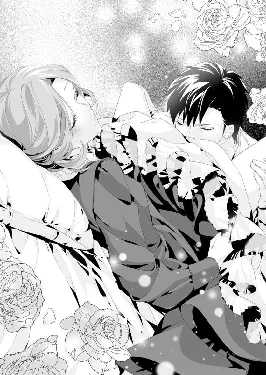
「平気......です」
サラはそれだけを口にする。
自分は間違いなくヒューの妻になった。そのことに幸福を感じている自分がいて、サラは不思議な気持ちでいっぱいだ。
しかも心だけでなく......繋がっている部分から、悦びを含んだ熱が波紋のように広がっていく。
（どうして？ ミラベルは、なかなか上手くいかなくて、ひどく嫌な思いをしたと言っていたのに）
ミラベルはまだ、何度か顔を合わせた男性と結婚したはずだ。社交界で引き合わされた求婚者の中から、容姿が一番好みの男性を選んだと言っていた。
それに引き換え......。
今、サラが初夜を迎えている相手は、数時間前に出会ったばかりの男性。本当なら、サラのほうが不安で失敗しそうなものだ。
ところが、小さな痛みなど簡単に打ち消すような、心地よい幸せを感じてしまっている。
（これって、無垢なレディの反応ではないような気がするわ。わたし、本当はとてもいやらしい女なのかしら？ ああ、ヒューにそう思われてしまったらどうしましょう）
そのとき、ヒューがいきなり腰を引いた。
胎内に埋もれていた昂りがズズッと引き出される。蜜襞が刺激され、サラの下肢がフルッと震えた。
「あ......ぁん」
自分の口から色めいた声が漏れ、慌てて大きく息を吸い込む。
感じていることをヒューに知られたくなくて、ごまかしたつもりだったが......。
彼はふたたび押し込みながら、サラの耳元でささやいた。
「本当に平気らしいな。いや、それ以上に、気持ちよさそうで何よりだ」
「そ、そんなこと......そんなふう、に言わない......で」
「なんだ、恥ずかしいのか？」
ヒューの質問に答えるのも恥ずかしい。
それなのに、彼はサラの髪を撫でながら、さも嬉しそうに笑ったのだ。
「恥ずかしがるなよ。俺だって、信じられないくらい気持ちがよくて戸惑ってるんだ。こんなふうになるのは、初めてで......君もそうだと嬉しいんだが」
ちょっと照れたような彼の口調につられ、サラも口走ってしまう。
「気持ち......いい、です。でも、どうして？ ものすごく痛くて......う、上手く、いかないかもしれない......って、そう聞いていたのに」
「俺たち、こっちの相性がいいのかもしれないな」
「そっ、そんなこと、あ......やっ、あぁ」
サラが言い終える前に、ヒューは腰を動かし始めた。
重なった部分からジュプッと音がして、灼熱の猛りが挿入されていく。少しずつ、少しずつ、奥まで沈み込み、さっきより深い位置まで達した。
ヒューの存在をお腹の中に感じる。
欲棒の先端が最奥まで達したあと、彼は緩々と抽送を始めた。
「あっ、あっ、やっ......あぁっ！ ヒュー、そこ、もうダメ......そんな、ゆっくり動かしちゃ、あぁ......やぁーっ！」
サラはギュッと目を閉じた。これまで経験したことのない感覚に苛まれ、自然に下腹部に力が入ってしまう。
すると、ヒューは大きく息を吐き、サラの肩口に顔を埋めた。
「待て待て、そんなに締めるな......すぐに達きそうだ」
抜き差しの途中で動きを止め、彼は浅い呼吸を繰り返している。
「そ、んな、締めて、なんか......」
サラにはよくわからず、首を横に振った。
「そう、なのか？ でも、痛いくらいだ」
「ヒューも、痛い、の？」
「ああ、痛いけど......どうしようもなく気持ちいい」
ヒューは苦笑するようにささやきながら、サラの腰に手を回してきた。そして、軽く持ち上げるようにして抱きしめてくる。
ふたりの躰はぴったりと重なり合う。
男と女の象徴が隙間もないほど結びついて、サラの胸に愛しさが込み上げてくる。
その瞬間、サラの手は彼の黒髪を優しく撫でていた。そして、遠慮がちとはいえ、彼に抱きついてしまう。
その行為はまるで、自分から求めているみたいに思えなくもない。
（はしたないこと？ いいえ、違うわ。だって、わたしが抱きしめているのは神様に認められた夫ですもの）
「サ......ラ、もう、ちょっと、我慢できない。少しだけ、堪えてくれ」
「え、ええ、それは......あっ、ああーっ」
これまでゆっくりした抽送を続けていた彼が、ふいに激しい動きになった。
サラの身体は大きく揺らされ──欲望に弾け飛びそうな雄身が、無垢な花びらを散らしていくかのようだ。
快楽に濡れた蜜壺は、ヒューの激しい動きについて行けず......。
このままだと乾ききってしまい、激しい痛みに襲われるかもしれない。サラの中にそんな不安が込み上げたとき、ヒューの動きがピタリと止まった。
その瞬間、ヒューの欲情が爆ぜ飛んだ。
勢いをつけた奔流が胎内に噴き上げ、荒れ狂うように奥へと流れ込んでくる。
ヒューの分身はドクンドクンと収縮を繰り返し、サラの膣内を白濁で満たしていくのだった。
ふいに胸回りが楽になり、サラはハッとして目を開けた。
「大丈夫か？ コルセットを外して下着姿にしたんだが......その、濡れてたから......代わりに俺のシャツを着せておいた。君の荷物はモニカたちの部屋だからな」
申し訳なさそうなヒューの声が聞こえてくる。
サラはしばらくの間、意識を失っていたようだ。いや、ひょっとしたら、カントリーハウスを出発してから熟睡したことがないので、眠ってしまったのかもしれない。
その間に、サラはずいぶん身軽になっていた。
デイドレスを脱がされ、その下のコルセットやペチコートまですでに身につけていない。それどころか、先ほどまで穿いていたドロワーズも脱がされてしまったようだ。
今のサラは、リネンのシャツ一枚を身にまとっていた。
「あ、あの......ヒュー、申し訳ありません、わたしったら......」
慌てて身体を起こし、謝罪を口にする。
初夜の契りを交わしたあと、どうするのが正しいレディの対応だったか、実を言えばよく覚えていない。
だが──ベッドの上に座った半裸の彼を見た瞬間、サラは息を呑んだ。
オイルランプが放つ琥珀色の光のせいかもしれない。ヒューの肩や胸、腹部が蜂蜜色に艶めいていた。鍛えられた逞しい筋肉は隆々として見える。この体躯なら、サラくらい軽々と抱き上げ、階段を上るだろう。
古代の彫像より凛々しい姿を目の当たりにして、サラは息苦しくなる。
（こんな素晴らしい男性がわたしの夫だなんて......。ああ、それだけではないわ。初夜だというのに、あんなに乱れてしまって）
ふいに脚の間がズキンと痛み、彼を受け入れたときのことが甦ってきた。何度も突き上げられ、彼の言葉につられて『気持ち......いい』などと口走ってしまったことまで思い出す。
恥ずかしさに、サラの頬は火傷しそうなほど火照ってくる。
そのとき、ヒューの手が彼女の頬にそっと触れた。
「どうした？ 真っ赤だぞ」
ダークグレーの瞳がサラの心を射抜くようにみつめている。
頭の中が真っ白になり、サラは思いついたままを口にしていた。
「わ、わたし、他の男の方と、あんなこと......本当に、あなただけなのです。嘘はついておりません。わたしの夫は......」
言えば言うほど言い訳に聞こえてくる。
それでも、言わずにはいられなくて......次の瞬間、ヒューの笑い声が聞こえたのだった。
しかも、ベッドに転がってひたすら笑っている。
「ヒュー、わたしは真剣に言っているのです。あ、あんなふうに、はしたないことを言ってしまいましたが、でも」
「まあ、たしかに。生娘にはあるまじき乱れっぷりだったな。ドロワーズだけでなく、シュミーズまでぐっしょりにするくらい感じまくってたし」
ヒューは笑うのをやめようともせず......。それどころか、サラにとっては信じがたいことを口にした。
自分は大切な初夜に、なんという失態を犯してしまったのだろう。
突っ伏して泣き出したい衝動に駆られたとき──。
「最高に可愛かったぞ。──サラ、君と出会えてよかったよ。今回ばかりは、神に感謝しなきゃな」
彼は転がったままの体勢からにじり寄って来て、サラの膝に頭を載せる。そのまま、甘えるように抱きついてきた。
「......ヒュー？ わたしのこと、軽蔑していませんか？」
「は？ なんで軽蔑？」
「だって、乱れたって......」
ヒューはそのままゴロンと仰向けになる。サラの膝枕にいっそう寛いだ表情をして、笑いながら語った。
「君が男に不慣れなことくらい、素人娘と付き合ったことのない俺にだってわかるさ。無垢なレディとの初夜は大変だって聞いてたから、俺も上手くいってホッとしてる」
そう言うと、ヒューは寝転がったまま手を伸ばし、しどけなくほどけたサラの髪を指に絡めてきた。
そして、
「なあ、サラ。この際だから、俺も正直に言っておきたいことがある」
彼はホッとしたような顔をして、サラが思いもよらなかったことを告白した──。
「兄が死んだことは話したろう？」
サラがうなずくと、ヒューは身体を起こしながら話を続けた。
「それを知ったのは、兄が亡くなって一ヵ月後だった。うちは......その、貴族とは違うんだが、けっこう古くて......なんというか、面倒な家系なんだ──」
ヒューは四歳上の兄とふたり兄弟だった。
だいたいの場合、父親の後継者は長男と決まっている。
だがその長男に万一のことがあれば、家督は当然、次男に回ってくるのだ。
訃報が届いたとき、遠い南の海にいたヒューは、急ぎ帰国することを余儀なくされた。もちろん、父親の後継者となるために。
「兄には妻と娘がいて、でも、うちの場合、女の子は後継ぎにはならないんだ。ただ、兄の死後、兄嫁の懐妊がわかったらしくて......」
兄嫁のお腹の子供が男の子なら、間違いなく後継者となる。
だがそのとき、すでにヒューが後継者として戻っていたら......。彼の存在はトラブルの素となってしまうだろう。
しかし、生まれてくるのは女の子かもしれないのだ。
その問題を一気に解決する手段があった。
「戻りしだい、兄嫁を妻にしろって言われた」
「まあ」
サラが口にできたのはそれだけだった。
意外というより、そう珍しくない話ではないだろうか。
アイアランド王国のことはわからないが、カドガン王国内ではそういった話をよく耳にする。それも貴族階級に限ったことではなく、資産を分散したくない商家や、働き手を失いたくない農家でも同じだ。
「それなら、わたしと結婚してしまってよかったのでしょうか？」
ヒューの実家では、結婚式の準備をして彼の帰りを待っているのではないだろうか。そんなところに花嫁──サラを連れて帰ったりしたら......。
（きっと、大きな騒動になってしまうわ。ああ、どうしましょう）
サラは青くなるが、ヒューはそれ以上に険しい顔をした。
「いや、それは問題ないんだ。というか、向こうを発つ前に手紙を送った。もう結婚しているから、兄嫁を妻にはできない、と」
「え？ あ、あの......結婚、しているのですか？」
「ああ、いや、だから」
一瞬、ヒューは遠征先で妻を得たのか、と思った。
なんといっても彼は海軍士官だ。港々に妻がいてもおかしくない。伯爵令嬢らしからぬ知識だが、海の男とはそういうものだ、と領地の教会で顔を合わせた人妻たちが話していた。
だが、ヒューの場合はそういうわけでなさそうで......。
「五年前、俺が海軍に放り込まれた元凶は、その兄嫁なんだ。他のどんな女と結婚しても、あの女を妻に迎えるのだけは絶対にご免だ！」
その一念で、彼は『もう結婚している』と嘘をついたという。
ヒューの兄は子供のころから病弱だった。兄弟で山野を駆け回って遊ぶことはできなかったが、思慮深く、優しい兄をヒューは慕っていた。
兄とは対照的に、ヒューの自慢は有り余る体力と一度も寝込んだことのない健康な身体。力仕事はすべて自分が引き受け、大人になってもずっと兄を支えていこう。彼はそう心に決めていた。
ところが五年前、兄嫁のせいでヒューは実家を追い出されたのである。
「あの女は──俺に襲われた、と父や兄に訴え出たんだ。指一本触れてないと言っても、女の涙に敵うわけがない。しかも、衝動ではなくて、兄嫁に横恋慕した挙げ句......みたいな、馬鹿げた話になって」
全く身に覚えのない罪を着せられ、ヒューは断固として否定した。
その結果、父親から勘当を言い渡された上に、海軍に入ることを強制されたと言う。しかもその時点で、南の海に向かう軍艦に乗り込むところまで手配されていた。
（やっぱり、お父様も軍の方なのだわ。爵位はないけれど、軍の要職に就いておられる、といった。そうでなければ、乗り込む軍艦まで手配できないはず）
サラはヒューの実家について、自分の想像が正しかったことを確信して安堵の息を吐く。
だが、それとヒューの事情は別だった。
「そんな嘘をつくなんて、お義姉様にどんな事情があったのでしょう？ でも、何より残念なのは、ヒューがお兄様と和解できないまま、永遠のお別れになってしまったことです」
彼は『大好きな兄』と言っていた。
ひとりっ子のサラには想像するくらいしかできないが、たったひとりの兄弟と仲違いしたまま二度と会えないと思うと、悲しくて涙がこぼれそうになる。
「ああ......とくに、兄の妻に横恋慕して家を出て行った、と思われたままなのが、けっこうきつい。いつかは、本当のことをわかってくれる、そう思ってたんだけどな」
兄は妻の言葉を信じた。それは仕方のないことかもしれない。
だが、優しかった兄が、父の怒りからヒューを庇ってくれなかったことに、少なからずショックを受けたと話す。
彼は悔しそうに頬を歪め、うつむいて目頭を押さえた。
「ヒュー、わたしにできることなら、なんでも言ってください」
サラは身を乗り出し、彼の手をギュッと握りしめる。
今夜、ヒューが結婚してくれたおかげで、自分は救われた。無理やり教会に連れて行かれ、トミーの妻にさせられることはなくなった。
無事に女王の許可さえ下りれば、サラは第七代ホワイトリー伯爵となる。
許可が下りないはずはないが、ナンシーがロバート皇太子を唆して、横やりを入れてくる可能性は捨てきれない。
もはや、ナンシーにとってはなんの得にもならないことだが、自分のものにならないなら、目障りだった妹の娘のものにもしたくない、と。そんなふうに思いかねない女性だ。
（結婚を無効にされてしまうかもしれない。他国の法を変えることはできないけれど、カドガンの法なら解釈を変えられるもの。爵位も取り上げると言われてしまったら......）
そのときはどうすればいいのか、サラにはもうこれ以上の手立てはなかった。
それならば、せめてヒューの役に立ちたいと思う。
サラが食い入るように彼の顔をみつめていると、ヒューもこちらを見た。
「俺の願いは最初に言ったとおりだよ」
ヒューが結婚してもいいと言ったときに出した条件──『父に会ってもらうし、俺の......子供も産んでほしい』だった。
サラはキュッと口元を引き結ぶと、
「わかりました。お父様にあなたの妻としてご挨拶いたします。ザック家の嫁として認めていただけるよう、誠心誠意努力いたします！」
ダークグレーの瞳を真っ直ぐにみつめ、そう答えた。
ヒューは驚いたように目を見開く。
「......どうかしましたか？」
「君は、俺のことを疑わないのか？ 本当は、兄嫁に手を出した犯人かもしれないのに。そんなことじゃ、悪い男の餌食になるぞ」
彼の言葉にサラはクスッと笑う。
「そんな、ヒューのほうこそ、人が好いではありませんか？ 出会ったばかりで結婚を申し込むような怪しい女を妻にするなんて。悪い女に騙されますよ」
彼を真似て言い返した瞬間、ヒューはふいに顔を近づけてきた。
ふたりの唇を重ね、優しく、啄むように何度も押しつけてくる。
「君になら、騙されてもいい」
キスの合間に彼はささやく。
「わ、わたしは......悪い女ではありません」
「自分で言ったくせに」
「それは......あっ、んんっ」
口づけたまま、ヒュー自身が彼女に着せたリネンのシャツを脱がせ始める。
サラの白い素肌が露わになり、その肩口に彼は唇を押し当てた。熱い吐息とともに、ヌルリとした舌が柔らかな肌の上を這っていく。
彼の唇はしだいに下がっていき、胸の谷間に顔を埋めた。
「あ、あの、ヒュー？ 胸が......胸が、見えてしまいます」
いくら夫とはいえ、初夜にすべてを見せてしまうのは......。
躊躇するサラとは違い、ヒューは信じられないほど情熱的に、彼女の身体に触れ始めたのだった。
おもむろにシャツの中に手を滑り込ませ、女性らしい円やかな曲線を描いた胸を優しく揉みしだく。
大きな掌に緩々と押し回され、サラは心地よさに身を委ねた。
「この素肌も、胸も、デイドレスの下に隠しておくに限るな。これを知っていたら、あのトミー坊やでも、君に飛びついて離さなかったはずだ」
「そ......んな、こと......ぁん」
シャツが素肌を滑り落ちていく。
双丘の先端までヒューの目に晒すことになってしまい......サラは慌てて胸を覆いかけるが、その腕を彼に掴まれた。
両腕を左右に開かされ、羞恥に顔を背ける。
だが、そんなことはおかまいなしに、ヒューは胸の頂を口に含んだ。
「あっ......ヒュー、それは......いきなり、そんな」
チュウッと音を立てて吸いつき、そのままチュパチュパと吸い続ける。こそばゆいような、奇妙な感じがしてサラは身動きが取れずにいた。
少しの間だけ、じっと我慢していよう。
そう思っていたはずなのに......少しずつ、少しずつ、サラの息は上がり始め、彼の舌に包まれている部分が熱くなってくる。
いつの間にか掴まれていた手は自由になっていた。
ヒューの手は、左右の胸をしっかりと持ち上げるようにして揉み続ける。左右交互に口淫され、サラは息苦しさに耐えきれなくなり、彼に向かって倒れ込んでしまう。
胸に感じていた熱い愛撫が離れていき、彼の胸にしっかりと抱きしめられた。
生まれて初めて、男性の硬くて質感のある筋肉に触れた瞬間だった。サラは頭の中が真っ白になる。
だが、押しつけた頬から伝わってくる彼の鼓動を聞き──。
（まるで、早駆けしたばかりの駿馬の鼓動みたい。......ヒューも必死なの？ わたしの素肌に触れて、悦んでくれているということ？）
そう思うだけで、サラの鼓動まで彼に同調し始める。
直後、ヒューはブリーチズの前をぐいと下ろした。彼の中心にそそり勃つ肉棒を目にしてしまい、サラは息を呑む。
「俺だけ見るのは不公平だろう？ 好きなだけ見ていいよ」
驚いてヒューの顔を見ると、そんなことを言って片目を閉じた。
（見ていいって言われても......困るわ）
戸惑う反面──生まれながらに好奇心が強く、父の書斎に並んだ本はすべて読んだくらいのサラだ。こんな機会はそうそうないかもしれない、と思うと、つい視線がそちらに向いてしまう。
「あの......いつも、こんなに大きいのですか？」
「いや、まさか。君の甘い肌に触れて、興奮した証、かな？」
「あ、甘い？」
ヒューは指先で柔らかな胸にあるピンク色の突起を、ピンと弾いた。
「きゃっ！」
「ここが、砂糖菓子並みに甘かった。ああ、そうだ。もっと甘い場所もあるんだが、教えてほしい？」
彼の声のほうが数倍甘く感じる。
サラは彼の瞳をみつめたまま、小さくうなずいた。
ヒューに背中を支えられ、ふわりとベッドに押し倒された。サラの脚の間に、彼はゆっくりと腰を落としていく。そこには、先ほど目にしたばかりの赤黒い猛りがあった。
「ほら、ここだ......わかるか？ すぐにも挿入できそうなくらい、甘い蜜でいっぱいだ。胸を舐められて、そんなに気持ちよかった？」
彼はいやらしい言葉を口にしながら、熱い塊を割れ目に添わせる。
「やっ、あぁ......ヒュー、やめ......あぁっ」
「やめてほしいのか、それとも、やめないで？ どっちだ？」
どっちなのかサラ自身もよくわからない。
だがヒューも、彼女が答えられないことを承知で質問したらしい。
「じゃあ、俺が決めてやる。まだ二度目だから、もう少し濡らしてから挿入するとしよう。それでいいかな、奥さん」
ヒューから『奥さん』と呼ばれた瞬間、サラの心は薔薇色に染まった。甘やかな期待に、トクン、トクン、と鼓動は速まっていく。
そのとき、ピタリと押し当てられた部分が上下に動き始めた。
「あぁ......ぅ、はぁ......ぁ」
サラは荒い呼吸を繰り返すだけになる。
欲棒の先端は蜜口を掠め、その部分を思わせぶりに刺激された。彼は敏感な尖りにも自身を押しつけ、サラの未熟な官能を目覚めさせようとする。
波のように押し寄せてくる快感を受け止めながら、彼女はギュッと目を閉じた。
ヒューにされるがままでいると、「やあっ、そこ......そこは、変になり、そう」ふいに、サラの口からねだるような声が漏れた。
そのときだ。
ヒューは荒々しい動きでサラの躰をふたつに割った。
「あぁっ！」
灼熱の杭でひと息に突かれる。想像以上の激しさに、膣襞は限界を超えて広がり、サラはヒリヒリした痛みを受け止めていた。
「悪い──可愛い声に、自制心が飛んだ。動いたら......痛い、よな？」
彼が心配するとおり、おそらくは痛むような気がする。
だが、サラは目を開け、ヒューの顔をみつめて首を横に振った。
「大丈夫、ですから。あなたの思うとおりに、動いてください」
「サラ......」
彼女の名前を口にするなり、ヒューは腰を打ちつけてきた。
それは、最初のときとは比べものにならないくらい刹那的な動きだ。サラを追い立て、ベッドが壊れそうな勢いで彼女を突き上げる。
そして──サラが『もう、ダメ』を口にする寸前、ヒューの昂りは降参とばかりに吐精し、サラの胎内を白濁で埋め尽くしていった。
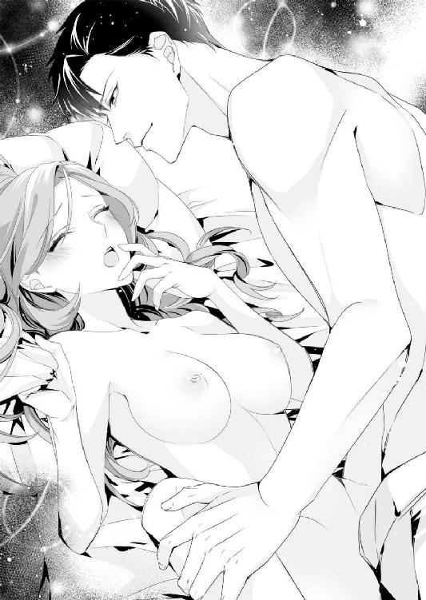
☆ ☆ ☆
森の向こうから朝日が顔を出す。
藁葺き屋根を金色に輝かせながら、朝の光は、街道沿いの木々も新しい色に塗り替えていく。
レッドグレーヴの町に新鮮な風が吹き込む。それは、深夜に感じたものとはまた違った清々しさで、サラは美味しい空気を胸いっぱいに吸い込んだ。
深夜に結婚式を挙げ、初夜の契りを交わしてから、まだ数時間しか経っていない。眠っていたのは、ほんの二時間程度だろうか。
だが、サラは眠いと言うより身体の節々が痛かった。
（歩くだけで、こすれて痛いなんて......それに、何より、まだヒューが......わたしの中にいるみたいで）
いろいろと思い出しては頬が火照り、ついボーッとしてしまう。
「サラお嬢様、本当に大丈夫でございますか？ もう少し、休ませていただいたほうがよろしいのではありませんか？」
モニカはそんなサラを見かねたのだろう。彼女が『大丈夫でございますか？』と尋ねてくるのは三度目だった。
「大丈夫、本当に大丈夫だから、安心してちょうだい」
「でも、お身体が大変そうで......フィーロビッシャー子爵家のミラベル様などは、ご結婚後に初めて旦那様と結ばれたあと、三日も横になられていたそうですよ」
「まあ、本当に？ どうりで、大変だったと言われていたはずだわ」
そのミラベルも昨年、結婚一周年を迎えた直後に長男を産み、今は第二子を懐妊中だった。最後に会ったのが結婚して間もないころだったので、次に会うことがあれば、彼女の考えも変わっているかもしれない。
（夫婦のことは、そうつらいことではないわ。いいえ、むしろ、女に生まれてきてよかったって思えるもの）
すぐに頭の中が昨夜の......ヒューのことでいっぱいになってしまい、ふたたびボーッとしそうになる。
「えーっと、サラお嬢様？」
モニカの声にハッとして、サラは慌てて、自分の中から甘酸っぱい記憶を追い払った。
「モ、モニカたちは、伯爵領に戻ってもいいのよ」
女王陛下の許可をもらうためには、夫を伴い結婚証明書を王宮に持参すべきだろう。だが、ヒューが実家に戻るほうが先と言うなら、それに従うしかない。
「ヒューの実家はアイアランドの王都、リリエンソール市にあると言うし......ここから、また三日ほど馬車に揺られなくてはならないわ」
三日も北上すれば、ここよりもっと寒くなる。
サラ同様、モニカやピーターも寒さには慣れていないはずだ。それだけではない。結婚式を挙げれば、すぐさま領地に戻る予定だった。急いで出てきたので、ふたりはサラ以上に防寒着の準備もない。
「ザック中佐は信頼に足る方だとは思いますが......それでも、お嬢様をひとりで行かせるわけにはいきません！ そんなことをしたら、私が母に叱られます」
「でも、ここで引き返したら、帰りはピーターとふたり旅よ」
「そっ、それはっ!?」
モニカは一瞬で頬を染めた。
てっきり、『そんなこと関係ありません』と即答するだろうと思ったが......口元を押さえて考え込んでいる。
つい昨日までのサラなら──小間使いがそんなことではダメでしょう、と口うるさく叱ったことだろう。
だが今は、恋に夢中のモニカが微笑ましく思えてならない。
（人を好きになるのって不思議ね。なんだか、世界の色が違って見えるわ）
サラは姉気分でついついモニカに忠告してしまう。
「いいこと、モニカ。簡単に身体を許してしまってはダメよ。ピーターは女中たちに人気があるでしょう？ ちゃんと結婚の約束をしてからでなくては」
そこまで言ったとき、モニカは飛びつくようにしてサラの手を握りしめた。
「サラお嬢様！ お嬢様のおっしゃるとおり、ピーターは本当にモテるんです。ブリジットやクレアも彼のことを狙っていて......。でも、彼は調教師を目指しているから、私と結婚して父の後を継ぎたいって」
名前が挙がったふたりとも、カントリーハウスで女中をしている。
ブリジットは二十代半ばでピーターよりも年上のはずだ。だが客間女中をしているだけあって、男性のあしらいが上手く、とても美人だった。一方、クレアは勤め始めて半年ほどしか経っておらず、十七歳と若い。まだまだ見習い中だが、可愛らしいと評判だった。
「モニカは真面目で一生懸命だし、とても美しい金髪をしているではないの。ブリジットより家庭的だし、クレアよりしっかりしているわ」
サラはそう答えた瞬間、モニカの顔がパアッと明るくなった。
（でも、ブリジットは色気があるのよね。クレアはとっても若いし......）
思わず付け足してしまいそうになったが、心の中だけにとどめる。
「えっと、ヒューはピーターと一緒に、馬車の用意に向かったのよね？ 時間がかかっているみたいだけど、何かあったのかしら？」
サラが話を変えようとして辺りを見回した。
そのとき、街道のほうから馬の蹄の音が聞こえ──直後、二台の馬車が鍛冶屋の横をすり抜け、宿屋の前に停まった。
先頭の馬車の扉にあるのは、ホワイトリー伯爵家を示す〝馬と薔薇〟の紋章。
「お、お嬢様......まさか」
モニカの声が震えている。
サラも一瞬、棒立ちになった。
「落ちつきなさい。大丈夫、大丈夫よ」
自分自身に言い聞かせるように言葉にする。
馬車の扉が開き、降りてきたのは──予想どおりの人物、サラの伯母、ナンシー・マクニールだった。
センツベリー男爵家の美人姉妹──。
母のスーザンは姉のナンシーとともにそう呼ばれていた。
とくにナンシーは、二十年と少し前、コルボーン市の社交界で有名な女性だった。絹糸を束ねたような蜂蜜色の金髪、いつも濡れているような唇、謎めいたヘーゼルの瞳、そして何より、肉感的な身体のラインに社交界の紳士たちは釘付けだったという。
四十歳を過ぎた今のナンシーも、充分、官能的な魅力を維持しているのではないだろうか。
亡くなった母は、髪の色こそナンシーとよく似ているが、全身から醸し出す雰囲気はまるで違っていた。母は妖艶な美貌の中にも、凛とした清らかさを失わない女性だった。
ナンシーの場合、歳を取るごとに毒々しさが増していくように思えてならない。
「迎えに来ましたよ、サラ。まったく、おまえという娘は......よくも、後見人であるわたくしに、恥を掻かせてくれましたね」
父は生前、迂闊にもサラの後見人を指名していなかった。
近しい親族の中でふさわしい身分の紳士がいなかったこともあり、ナンシーは自らサラの後見人を買って出た。
一方的な言い分だが、どうしたことか治安判事までが認めてしまい......。
それを理由に、ホワイトリー伯爵家の馬車を我が物のように乗り回しているのだから、サラにすれば許しがたいことだった。
「なんのことでしょう？ 父はわたしの後見人に、伯母様を指名されませんでした。それに、伯爵令嬢の後見人には爵位のある男性がなるものと聞いております」
「まだそんなことを......なんて往生際の悪い子かしら。それより......伯爵令嬢がそんな淫らな髪で人前に出るものではありませんよ！ スーザンのしつけがなっていなかったのね」
レディは外出の際、髪を結い上げるのが基本だ。
だが、今日のサラは髪をほどいたまま、ごく自然に垂らしていた。結い上げる時間がなかった、という理由も大きい。しかしそれ以上に、
『その綺麗なストロベリーブロンドを、もっと俺に見せてほしい』
ヒューにそんなお願いをされたら、ノーとは言えないだろう。
サラがなんと答えるべきか考えていると、先にナンシーが動いた。
彼女は後方の馬車に向かって声をかける。すると、馬車から降りて来たのは、伯爵領一帯の治安判事を務めるウェットン卿だった。
彼こそが、ナンシーがサラの後見人であると認めた人物だ。
（どうして、こんなところにまで？）
驚きのあまり、サラはよけいに何も言えなくなる。
「何を驚いているの？ おまえが結婚したいと言うから、許可証までもらって来てあげたのではないの。わざわざ治安判事のウェットン卿にまで来ていただいたのだから、すぐにトミーと結婚なさい」
治安判事が立ち会えば、教会でなくとも結婚式は成立する。それはカドガン王国の法に則った結婚だった。
よくよく見れば、ナンシーが乗って来た馬車の奥にはトミーの姿が見える。どうやら、街道を走って引き返す途中で、幸運にもナンシーの馬車と遭遇したらしい。
彼は昨夜のことがあるせいか、周囲を気にしてビクビクしている様子だった。
サラは深呼吸してナンシーに向き合う。
「残念ながら、トミーとは結婚できません。わたしはすでに夫のある身です。この髪も、夫の希望ですので、伯母様の言葉には従えませんわ」
すると、ナンシーは高らかに笑い始めた。
「でたらめなことを言っても通用しませんよ。おまえがこの町に着いたのは夜中......ご覧なさい、鍛冶屋はまだ開いてもいないじゃないの。いつ、誰と、結婚したというのかしら？ おまえの夫はどこにいるの？ ほら、見せてみなさい」
「それは──」
サラがヒューの名前を告げようとしたとき──。
「俺がサラの夫、ヒュー・ザック、アイアランド王国海軍中佐だ。この町の鍛冶屋は夜中でも結婚式を挙げてくれる。知らなかったのか？」
かなり上から声が聞こえてくる、と思ったら、ヒューは馬に跨って姿を見せた。
上背もあるのでかなりの威圧感だ。朝日を浴びた彼の姿はいっそう凛々しくて、サラはうっとりと見惚れてしまう。
そんなヒューにナンシーは食ってかかる。
「海軍ですって、嘘をおっしゃい！ おまえはどこの馬の骨なの？ この娘に金をもらって夫役を引き受けたんでしょう!? こんなこと、女王陛下と神を欺く大罪ですよ！」
そこまで言われたら、サラも黙っていられない。
「嘘ではありません！ わたしは、昨夜......この方の妻になりました。後日、正式な使者を立て、女王陛下に爵位継承の申し立てをいたしたく思います。──ウェットン卿、それでよろしいですね？」
サラから名指しで問われ、ウェットン卿はアタフタとしている。
「それは......結婚証明書があれば、おそらくは......」
「ウェットン卿！ そんなもの、いくらでも偽造できるではありませんの！」
ナンシーの『偽造』という言葉に反応したのはヒューだった。
「ふーん、証明書の偽造なんて普通は考えもしないことだが、そちらのマダムはよーくご存じのようだ」
「と、とんでもありませんわ。そうだわ、サラ、そんなものがあるなら見せなさい。本物なら、わたくしが使者になりましょう。ウェットン卿が証人になってくださるわ」
一瞬、動揺を見せたナンシーだったが、すぐに次の手を打って来ようとする。
彼女の手に結婚証明書を委ねてしまったら、処分されるのは火を見るよりも明らかだ。どう言って断ればいいのかサラが考え込んだとき、横からヒューが答えてくれた。
「それには及ばない。俺はこれでも王命により動いてるんでね。王都に戻りしだい、我が国のエドワード国王経由で、そっちの女王陛下宛てに使者を立てさせてもらう」
ヒューの口からエドワード国王の名前が出た瞬間、ナンシーたちの顔色が変わった。
「それとも、我が国の国王陛下が、そっちの治安判事に劣るとでも？」
ウェットン卿はチラッとナンシーの顔を見たが、「いや、とんでもありません」と小さな声で呟き、そそくさと自分の馬車に戻って行く。
だが、ナンシーは違った。
「いいえ、本物の夫婦かどうかわからないわ！ 今すぐ、お医者様に診ていただく必要がありますわね」
彼女は執拗に食い下がろうとする。
そのとき、ヒューが馬から飛び下り、サラの横に立った。流れるような動作で彼女の腰に手を回してくる。
サラが「えっ？」と思った瞬間、抱き寄せられ口づけられていた。
全身が一瞬で熱に包まれ......触れ合った場所から唇が溶けていくようで、境界線すらわからなくなる。
町の人や、通りすがりの旅人から口笛を吹かれたとき、サラは自分の置かれた状況を思い出した。ナンシーだけでなく大勢の見物客がいる中で、と思うと、さすがのサラも気を失ってしまいそうだ。
「ご覧のとおりだ。昨日の今日だから、医者はまだ不要だな。第八代ホワイトリー伯爵が誕生したときには、お知らせしますよ、伯母上」
人を食ったようなヒューの返答に、ナンシーの目がキッとつり上がった。魔女のようだ、と思ったのはサラだけではないだろう。
「いろいろと、世話をしてやったのに、その恩も忘れるなんて」
ナンシーは口惜しそうに呟いたあと、
「おまえはスーザンに似て、なんて小賢しい娘かしら......いいこと、このまま引き下がるつもりはありませんから、よく覚えてなさい！」
そんな捨て台詞を残して馬車に乗り込み、走り去って行った。
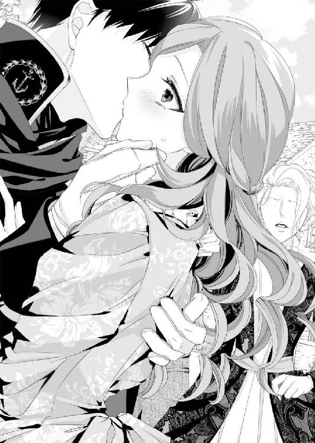
第三章 王子様って......本当ですか？
レッドグレーヴの町をあとにして、馬車はひたすら森の中を疾走していた。
中にいるのはサラとヒューのふたり。モニカは新婚夫婦に気を遣ってか、ピーターと一緒に御者台に座っている。
（わたしたちのため、というより、自分のためよね？ だって、堂々とピーターの傍にいられるのですもの）
サラは心の中でクスッと笑う。
「奥様はご機嫌で何よりだ」
隣に座ったヒューに声をかけられ、サラはドキッとする。
「ええ、あの伯母様を撃退できたのですもの。でもまさか、こんなところまで治安判事を同行されるとは思いませんでした」
ウェットン卿はそれほどまで仕事熱心な人物とは聞かない。
貴族として名誉職に就いているだけで、実務は部下に丸投げという噂もある。実際、領地の治安維持は、伯爵家で雇った自警団が長年に亘って務めていた。
「ウェットン卿だったっけ？ あの男、君の伯母上と男女の仲ってとこかな」
「え!? ま、まさか、本当ですか？」
「そうでなきゃ、治安判事がこんなところまでやって来るもんか。何か弱みを握られていて、仕方なくついてきたって顔だったな」
サラ自身、年齢や経験のわりに、人を見る目はあるほうだと思っている。
母が亡くなってから六年、伯爵家の実務は彼女がこなしてきたのだ。
ただ、サラ自ら大人の前に立つことはない。そんなことをしても大人たち、それも男性たちから侮られるだけだ。そのため、表向きのことは母が雇い入れた家令のジェフ・カートライトに任せてきた。
ジェフは少々堅苦しい上に融通の利かない性格をしている。だがその分、信頼に足る人物だと母も話していた。
その点はサラも同意だ。なんと言っても、彼が前任の家令と同じであったなら、この六年で伯爵家の資産は激減していただろう。
もし、このまま領地に戻れない場合、ジェフに全権を委任してもいいと思っている。
サラがどれほど遠くにいたとしても、使用人たちは伯爵位を継いだサラを信用して、領地を守ってくれると信じている。
だからこそ、ヒューに求婚した自分自身の判断も間違いではなかった、と思いたい。
とはいえ......そんなサラでも男女の機微だけはよくわからない。
「伯母様とウェットン卿が......あ、でも、伯母様は皇太子殿下と」
「進行形じゃないだろう？ ロバート皇太子って、次々と若い愛人に乗り換えてるって話だ。しかし、うちの国王と変わらない歳だっていうのに、頑張るよなぁ」
しみじみとした口調にサラは可笑しくなる。
「そんなふうに言ったら、国王陛下に失礼ではありませんか？」
あらゆる競争を糧として国力を高め、世界の主導権を持とうとするカドガン王国に比べ、アイアランド王国は世界平和と安定を旗印にしていた。
高い軍事力を持つのも国家間の争いを抑制するためだという。とくに、ヒューの属する海軍は最強と呼ばれている。彼がエルベル海であたっていた任務が、海賊討伐だということもその証拠だ。
華やかな社交界がない代わりに階級差も少なく、領主と領民の垣根も低く、長閑な国民性という話を聞いたことがある。
それは同時に、国民と王族の距離も、カドガン王国に比べてグッと近いことを意味していた。
そのアイアランド王国を統治するエドワード国王だが、年齢は五十代半ば、王妃はすでに亡くなっていて、後継者として若い王太子がいる──ということが、サラが知っている情報のすべてだった。
ヒューはアイアランド国民で、しかも『王命により動いてる』海軍士官なのだから、一般市民以上に、王族とは近い距離にあるのだろう。
そう思いながらも、やはりヒューの軽い口調が気になってしまう。
「とくに失礼とは思わないけどな。まあ、君が言いつけない限り、俺がここで何を言っても国王の耳には入らないさ」
「それはダメです。心に思っていることは、態度に出るものですよ。第一、ヒューは国王陛下に拝謁する機会もあるのでしょう？」
「まあ......ない、とは言えないかな？」
彼は少し間を空けてから答える。
「でしたら、普段から注意しておかなくてはダメです。そうでなくては、国王陛下を軽んじているような、そんな態度が見え隠れするはずです」
「それは、まあ......申し訳ない」
困ったように髪をかき上げながら、ヒューはボソッと口にする。
そんな彼を見て、サラも自分の言い過ぎに気がついた。
「い、いえ、ごめんなさい、わたしったら」
いつも父のことを『お父様、そんなことではダメです！』と叱っていたので、つい、同じ口調で意見してしまった。
父はそんなサラを許してくれたが、夫に対して同じような態度を取っては、それこそダメだろう。生意気な女だと離婚されてしまうかもしれない。
だが、ヒューは怒った様子ではなかった。
「いや、女性に叱られるのは初めてだから、なんか新鮮だ。ほら、俺の場合、母親に叱られたこともないから」
「乳母の方がいらしたでしょう？ だって、生まれたばかりの赤ん坊には、お乳をやる者がいなくては」
これほどまでしっかりした男子の後継ぎを必要とするのだから、ヒューの実家は立派な家のはずだ。仮に、家格は高いが資産はない、という家であっても、母親を亡くした赤ん坊の場合、乳母がいなくては育てられない。
「ああ、いたと思う。でも物心ついたころには、もういなかったな。俺の世話をしてくれたのは父の側近で男ばっかりだった。なんというか、近くに女を寄せつけない人でね......その辺りは、俺の親父殿にもカドガンの皇太子を見習ってほしいもんだ」
彼の言葉を聞く限り、父親は再婚しなかったようだ。
それは子供の気持ちになれば、亡き母を忘れずにいてくれる気がして嬉しく感じる。だがこうして自分が夫を持つ年齢になれば、父親に寂しい人生を送らせてしまったのではないか、と思ってしまう。
ひょっとしたら、ヒューも同じ思いでいるのかもしれない。
サラはこれ以上、父親のことは尋ねないほうがいいと思いつつ......。
「ヒューは実家に戻ったあと、王都で新たな任務に就かれるのですか？ それとも、また前線に？」
「任務は......この先どうなるかわからないんだ。王都にはしばらくの間残るつもりだが、兄嫁に男の子が生まれたら、俺は騒動の種になるからな」
ヒューの声が沈んで聞こえ、サラは胸が痛んだ。
兄嫁が嘘をついたせいで、ヒューの評判は今も地に落ちたままに違いない。
しかも、彼の立場から言えば──横恋慕して強硬手段に出たくせに、結婚しろと言われて断るとは......と思われていることだろう。
その上、別の花嫁を連れて帰ったりしたら......。
どう考えても、ヒューだけでなく、サラも歓迎されるとは思えない。
想像するだけで気が重くなるが......。
だが、落ち込んでいるだけでは、事態はよくならない。諦めずに頑張れば、きっと光明が見えてくるはずだ。
そう思うと、サラは気持ちを切り替えた。
「そうだわ！ もし騒動になるようなら、そのときはわたしと一緒に、カドガンの伯爵領に戻るのはどうでしょう？」
名案に思えたが、ヒューはどうも浮かない顔だ。
「俺はそれでもいいんだが、あの伯母上の件は大丈夫なのか？」
「あ......」
言われてみればそうだった。
あのナンシーが、黙って引き下がるわけがない。
サラたちが領地に戻ろうものなら、ひと悶着は免れないだろう。あるいは、そのときにはすでに、爵位も領地もサラのものではなくなっている、という可能性も捨てきれなかった。
「どっちを選んでも、厄介な魔女が手ぐすね引いて待ってるってわけだ」
ため息をつくヒューに向かって、サラは胸を張って宣言する。
「だから、どうだと言うのです？ 爵位や領地、先祖伝来の品を返上することになったとしても、祖父母の信託財産はわたしの名義です。それらを元手に、新天地を目指せばいいだけのことではありませんか！」
すると彼は息を呑んでサラの顔を見た。
「君は、それでいいのか？ 素性も知らない会ったばかりの男と結婚してでも、爵位を継ぎたかったんだろう？」
代々受け継いできたホワイトリー伯爵位を、簡単に諦めたくなかった。
「もちろんです。でも、皇太子殿下の力には勝てません。いざというときには、領地を出て、生きて行かなくてはならないでしょう」
爵位を継承するために、サラにできることはすべてやった。これ以上のことは思いつかないし、サラが領地を離れているうちに、ナンシーがロバート皇太子の権力を使えば、いよいよ諦めざるを得ない。
「それに、ヒューが言ってくれたのではありませんか？ 家族になろう──と。それとも、伯母様に会って気が変わったのですか？ だったら、はっきり言ってください。そのときは、わたしはたったひとりでも領地に戻って、あの伯母と......きゃっ！」
そのとき、車体が大きく揺れた。
座席から落ちそうになるサラの身体を、ヒューがしっかりと支えてくれる。
「大丈夫か？」
「は......は、い」
ふいに声が近くなり、彼の吐息が頬を掠めた。とたんに昨夜のいろいろを思い出し、ドキドキと鼓動が駆け足を始める。
すると、御者席のほうからピーターの声が聞こえてきた。
「申し訳ございません！ 昨日までに比べて車体が大きくなったので、道の端に寄り過ぎてしまいました」
領地を出発したときは、車輪が外れそうになるほど古い車体だった。でもレッドグレーヴを出発するとき、車体は頑丈で大きく、しかも新しいものに付け替えられていた。
ヒューも同乗するのであれば古い車体では危ないから、という理由で彼自身がレッドグレーヴの町で一番立派な車体に取り替えてくれたという。
「き、気をつけて......ちょうだいね」
サラは素直に受け止めてピーターに声をかけたが、ヒューは別のことに気づいたようだ。
「おい、ピーター、本当にそんな理由か？」
「ど、どういう、意味でしょう？」
「いちゃつくなら、馬車を停めてからにしろって話だよ」
ヒューの指摘は図星だったらしい。
その証拠に、御者台のほうから返事は聞こえてこなかった。
「休憩、しましょうか？」
苦笑しつつサラはそう伝える。
馬車はしばらく走り、小川の見える位置に停まったのだった。
二頭の馬に水を飲ませようと、ピーターとモニカは桶を抱えて小川まで下りて行く。
それだけのことなのに、モニカは本当に嬉しそうだ。
「若いなぁ」
馬車の近くに立ち、ふたりの背中を見ながらヒューが呟いた。
「何をおっしゃっているのか。あなたも、たいして変わらないお歳ではありませんか」
「そうなんだが......俺はあんなふうに惚れられたことがないからなぁ。ピーターには若くて可愛い恋人がいて、羨ましい限りだよ」
サラはヒューの恋人ではない。
可愛らしい恋も、情熱的な愛情も、全部飛ばして結婚した関係なのだから、ヒューの言葉に苛つくのは間違っている。
わかっていても、それでもムッとするのが女心だろう。
「そうですか......モニカより若いわたしが妻でもご不満なら、もっと若い娘を愛人になさるといいのだわ」
サラがそう口にすると、ヒューは『しまった』という顔をして天を仰いだ。
あまり離れるべきではないとわかっている。しかし、これ以上、彼と話をすることもつらかった。
それくらいならいっそ、ピーターたちの邪魔をしたほうがましだろう。
ヒューに背を向け、ほんの数歩離れたとき──ふいに背後から抱きしめられた。
「──悪い。モニカがあまりに幼いから、十代半ばの少女に見えたんだ」
「別に、言い訳などけっこうです。どうせわたしが、可愛げのない年増に見える、ということでしょう？ いつも言われていますので、気にしておりません」
サラの社交界デビューは昨年、平均年齢より遅れて十八歳のときだった。
きちんとした後見人もいなかったため、夜会にはほとんど出席していない。
だが、父親がいかに変わり者とはいえ、伯爵の称号と財産つきとあっては、貴族の次男、三男の間では良質な花嫁候補のひとりだった。
加えて、伯母や母親譲りの美貌の持ち主、という噂も後押ししてくれた。
サラが夜会に出るとダンスを申し込む男性が列をなし、手帳の空欄はすぐにいっぱいになったものだ。
しかし、そのせいでサラの評判はろくなものにならず......。
「可愛げのない年増だって？ 君が？」
ヒューから離れようと、サラは身をよじりながら返事をする。
「ええ......第一、あなたも言っておられたではありませんか？」
林の中で出会ってすぐ、彼が口にしたことを繰り返した。
『レディ・サラは美人で賢いが、男にはもてないだろう？』『可愛げがないと、結婚相手はみつからないぞ』と。
「初対面の方にもわかるくらい、わたしは可愛げのない女なのです。モニカと並んで立っていたら、美しい髪をして華奢な彼女のほうがレディに見られるくらいですもの」
そう言い終えたあと、込み上げてくる涙に気づき、サラはキュッと唇を引き結んだ。
ヒューのほうは、言われて始めて自分の失言を思い出したらしい。彼はサラを抱きしめたまま、肩口に顔を押しつけてきた。
「あー、クソッ！ 本当にすまない。そんなつもりじゃなかったんだ。その、なんと言ったらいいのか......」
「いえ──本当にもう気にしないでください。母が亡くなった十三歳のころから、二十歳近くに見られていましたから」
サラは成長が早く、そのころにはすでに成人女性の平均以上の身長があった。
ストロベリーブロンドをはじめとした大人びた容姿も、実年齢以上に見られる大きな要因だっただろう。
だが何より問題なのは、紳士たちの会話を耳に挟んだとき、間違った点に気づくと黙っていられないことだろうか。
サラがよく言われる『賢い』は、決してレディに対する褒め言葉ではない。
「驚いたな。何もかも失っても新天地を目指す、というくらい前向きな君が、そんな劣等感を抱えていたとは」
「それは......わたしも、女ですから......」
「なるほど。実を言えば俺も、このとおり無神経だから、どこに行っても女には全然もてない」
耳元でボソッと呟かれ、サラはクルリと振り返った。
「嘘です！」
「どうして君がきっぱり否定するんだ!?」
「ヒューは海軍士官ではありませんか？ 教会で既婚女性たちの話を聞きました。コルボーン市に勤めに出た娘さんのひとりが、海軍士官に騙されたようだ、と」
田舎に住む若い娘たちの憧れが、コルボーン市に出て勤めること、だった。
きちんとした教育を受けたわけではないので、彼女たちの仕事の多くが家事使用人としての女中勤めだ。勤め先は裕福で階級の高い貴族から、下は商人の屋敷まで。サラもそのための紹介状を何通も手配したことがあった。
そんな彼女たちの夢のひとつに〝結婚〟がある。
お屋敷の後継ぎ息子に見初められて......というのは所詮、夢物語だ。結婚へと結びつく恋ではなく、男性にとっては〝お楽しみ〟のひとつにすぎない。現実的には、使用人同士の恋が最も祝福される結婚への早道と言えた。
ただ、家事使用人は圧倒的に女性が多い。男性の使用人はひとり雇うごとに税金を納めなくてはならず、中流以下の家ではごく少数しか雇えないからだ。
そんな彼女らにとって、屋敷外で恋に落ちる可能性のある相手が兵士だった。
その中でも人気があるのが海軍兵。海軍士官なら文句なく一番だ。
しかし、そのことを男性側も充分に承知していて、人気を利用して無垢な娘を騙す海軍兵や士官は後を絶たないという。
騙されたとわかったときにはすでに相手は海の上、その責任を問うこともできない。
国は違っても、その人気や男性の本質に大きな差があるとは思えない。
「じゃあ俺も、君のことを騙してると思ってるのか？」
「いいえ、違います。あなたは、誠実な方です。だからこそ、女性にもてないわけがありません！ どんな女性も、あなたに求められたらうなずいてしまうはず......」
彼の腕の中、ごくごく近い距離でふたりはみつめ合っていた。
そのことに気づき、サラはあらためて意識してしまう。
すると、ヒューは真剣な顔をして、思いがけないことを言い始めたのだった。
「亡くなった兄は、身分違いの女性を孕ませたんだよ。で、当然のようにその女性と結婚した。厳格な父は大激怒したけど、子供がいる以上、結婚には反対できないだろ？ すると、そのしわ寄せが俺にきたんだ──」
優秀で自慢の後継ぎだった長男ですら、女性で失敗した。軽率な次男坊なら尚のこと、目を離したら何をしでかすかわからない。そう言われて、ヒューには側近とは名ばかりの見張りがついたという。
そんな息苦しい生活を送る中、例の兄嫁の事件が起こった。
「結婚相手に選べと言われて紹介されたレディたちは、俺の目には高慢ちきな女にしか見えなかった。うんざりしてたところに、兄嫁からあんな所業を受けた。海軍に入ってやっと自由になったけど......」
自由になったばかりのころは仲間に勧められるまま、上陸するたび娼館に立ち寄った。
だがそれもすぐに飽きてしまったという。
「さっきのピーター、軽い男に見えるけど、いざってときは自分のことよりモニカを優先しただろう？ モニカのほうも、好きな男を助けようとした。それが無償の愛ってヤツかな？ 俺には経験のない感情だったから、『羨ましい限りだ』って言ったんだ」
ヒューの説明を聞き、サラはようやく納得した。
彼はモニカを見て『羨ましい』と言ったのではなく、ピーターを見て言ったのだ、と。
「怒って、ごめんなさい。あなたまで、モニカのほうが......と思ったら」
「へえ、やきもちを焼いてくれたわけだ」
心の中を覗かれた気がして、サラは慌てて『違う』と言いかけ──次の瞬間、彼にその唇を塞がれていた。
街道からほんの少し森に入った場所で、それも昼間から口づけを交わすなんて、昨日までのサラなら破廉恥だと思ったことだろう。
だが、今日の彼女は違った。
（わたしは、ヒューの妻になったのだもの。夫である彼に無償の愛を注ぎたい。そうしたら、わたしのことも同じように愛してくれるかしら？）
今このときの感情が『愛』と呼べるものかどうか、サラには自信がない。
彼女はずっと、夫は慎重に選ばなくてはいけない、と思ってきた。伯爵家を守るためにも、愛は二の次でかまわない、と。
だが、ヒューのことは慎重に選んだとは言い難い。急ぐあまり、婚姻に関する契約すら交わしていないのだ。もちろん、それよりも優先しなくてはならないことがあったので、この決断が間違いだったとは思えなかった。
しかしそれ以上に、ヒューにはこれまで誰にも感じたことのない、じっとしていられないような衝動を感じる。
こうしてキスに応えるうちにも、サラの身体の奥に小さな炎が点った。
その炎はゆらゆらと揺らめきながら、少しずつ大きくなっていく。やがてサラの全身を覆い尽くすような情熱の炎となり、燃え上がった。
ふたりの唇が離れた瞬間、吐息が熱で溶けてしまうように感じて......どうしようもないほど、お互いを求め合うのがわかった。
ヒューの瞳にもサラと同じだけの情熱が浮かび上がっている。彼に抱きしめられたまま、近くにある木の裏側まで足を踏み入れた。
大きな木に背中を押しつけられ、お互いの唇を奪い合う。
直後、ヒューの大きな手が、サラのデイドレスの裾をたくし上げた。
「ま、待って、ダメ......モニカたちが、すぐに戻って......来ます」
「あのふたりなら、水を汲むだけでも時間がかかるだろう。それに、戻って来てもこの距離だ。俺たちの気配に気づいたら、新婚夫婦に気を遣ってくれるさ」
彼の返事にサラは、気づかれることが前提だと知った。
彼女は赤面しながらヒューの手から逃れようとする。だが、昨夜は戸惑っていたドロワーズのリボンをスルッとほどかれ、サラはそれ以上動けなくなってしまう。
ドレスの下、無防備になった部分に指を押し当てられた。
ヒューの指が花びらをかき分け、敏感な場所を何度も往復する。
森の中は小鳥のさえずりが広がり、しばらくすると静寂を取り戻す。そして、ふたたび鳥たちの合唱が始まる、という順番だった。
「ヒュー......こんな、ところで？」
「君を見てると、どうにも我慢できなくなる。そんなに嫌か？ どうしても嫌なら、俺を突き飛ばしてくれ」
興奮が高まってくると彼の声はどんどん甘くなる。
昨夜のことが思い浮かんでしまい、とてもではないが、ヒューを突き飛ばすことなどできなくなった。
ヒューはブリーチズをほんの少し緩め、前部分だけを押し下げた。とたんに猛々しくなった男性自身が飛び出してきて──彼はサラの片脚を持ち上げたのだ。
「あっ......やぁ......まさか、本当にこの場所で？」
サラは背中に硬いざらつきを感じながら、全体重をかけてもたれかかる。
片脚を上げたことでドレスの裾は簡単に持ち上げられ、大事な場所を開かされてしまう。そして、昨夜と同じく、冷めやらぬ熱が容赦なく侵入してきたのだった。
「はあぁ......ぁう」
声にならない吐息が口の端からこぼれ、サラは彼の外套を鷲掴みにして頤を反らせた。
髪を結わなかっただけでなく、今日のサラはコルセットもつけていない。そのため、片脚を上げさせられても苦しくはないが......。
（も、森の中で、なんて......街道から、そう離れていないのに。すぐに、モニカたちも戻ってくるはずなのに。わたしったら、こんなこと）
外というだけではない。夫婦の営みが寝室のベッドの上だけでなく、立ったままできることにもサラは驚いていた。
安定した格好ではないので、それほど奥まで侵入してくる感じではない。
どちらかといえば、蜜穴の浅い部分を緩々とこすられ......。じんわりと広がってくる快感にサラの身体がプルッと震えた。
「奥まで入れるより、入り口近くを刺激されるほうが気持ちいいんだろう？」
ヒューの問いにサラは頭の中がカッと熱くなる。
首を横に振ろうとしてやめ、結局、小さくうなずいていた。
否定しても、きっと繋がっているヒューにはわかってしまうはずだ。彼の言うとおり本当に気持ちよくて、ずっとこのままでいたい、なんて思いまで込み上げてくる。
「ヒューが、奥がいいなら......あなたの好きに、してください」
サラは必死に伝えたが、
「俺は、君の幸せそうな顔が見たい。この、ストロベリーブロンドを振り乱して、感じるところが見てみたいんだ」
「わ、わたし、そんな、こと」
とてもできないと思ったが、昨夜は初めてだというのに、あんなにも乱れてしまった。
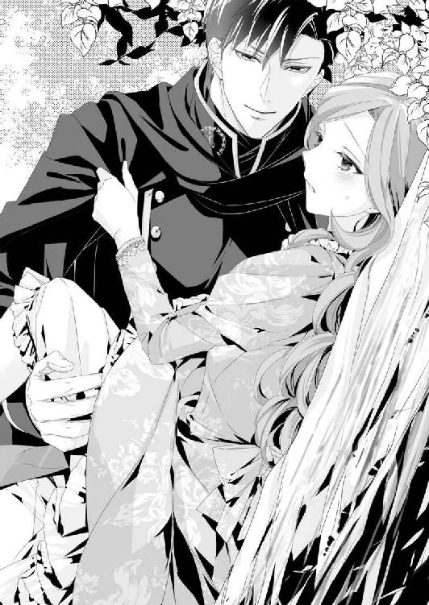
そのことを思い出すだけで......サラは頬を赤く染め、息を弾ませながらヒューの胸に顔を埋めた。
ヒューの腰が緩やかに上下して、彼女の身体を揺さぶる。
「あっ......あぁ......んっ」
彼に抱きついたまま、サラは必死で声を堪えようとするが......。抑えきれない声が吐息とともに森の中に広がっていく。
（ダメよ、声を上げては、ダメ。モニカたちに聞かれてしまうわ）
どれほど我慢しようとしても、どうしようもないこともある。
快感に身を委ねながら、サラは身をもって味わっていた。
そのとき、馬車のほうから声が聞こえてきて......。
「サラお嬢様ぁ」
すぐにモニカの声だとわかり、ヒューの顔を見上げた瞬間、彼はサラを抱きしめ律動を止めたのだった──。
「まあ、お嬢様......あの、何か不都合なことでもありましたか？」
サラたちの気配に気づくなり、モニカは駆け寄って来た。
だが、サラがヒューに横抱きにされているところを見て、彼女は驚いたような声を上げる。森を散策していて怪我をしたと思ったのかもしれない。
「ええ、あの、何も不都合なことは、ないわ。ないのだけど......」
モニカの声を聞いたとたん、さすがのヒューも焦ったらしく、興奮がすぐに限界を超えた。
問題は、彼が吐精を終えたあとだった。
彼の昂りが抜かれ、サラの身体を支えていた柱を失い、その場にしゃがみ込んでしまったのだ。立ち上がろうにも、腰が抜けてしまったようになり、力が入らずにフニャリと膝が曲がってしまう。
そんな彼女の姿を見て、ヒューは一気に抱き上げてくれた。
恥ずかしくて最初は断ろうとしたが、快感が引いていくと、しだいにヒリヒリした痛みがぶり返してくる。
そうなると、まるで生まれたばかりの子馬のように、よろよろとしてしまい......。
『気にすることじゃない。俺のせいなんだから』
ヒューはそう言うが、やはりモニカに追及されたら、なんと答えたらいいのかわからなくなる。
「ちょっと森を歩いたんだが、昨夜の名残でまだ痛むらしい。どこが、なんてことは聞くんじゃないぞ。わからなかったら、ピーターに教えてもらうといい」
それだけで、モニカにも見当がついたらしい。
彼女は頬を赤らめ、うつむいてしまうのだった。
☆ ☆ ☆
レッドグレーヴの町を出発して五日目の夜、サラは王都近くの湯治場に立ち寄り、小さな温泉に浸かっていた。
──たくさんの白鳥が見える湖がある。
──知り合いの牧場があるので、アイアランド産の馬に乗りたいとは思わないか？
ヒューはそんな言葉でサラを誘い、たびたび寄り道をするのだ。
三日で着くはずの距離が長引く一方で......。サラにすれば、一日も早く王都リリエンソール市に着き、結婚証明書をカドガンの女王に届けたい。ホワイトリー伯爵位はサラが継承する、という一文を女王からもらわないことには安心できない。
だがヒューは......本心では実家に戻りたくないのだと思う。
（周囲の人たちからは誤解されたままですものね。何より、厳しいというお父様と顔を合わせたくないのだわ）
彼の気持ちがわかる分だけ、サラは急かせたくなかった。
そして、あと二時間も馬車を走らせれば王都に入るという位置で、ヒューは突然言い出したのだ。
『王都の近くに湯治場がある。子供のころ、よく兄の療養に同行したんだ。ちょっと、寄ってみないか？』
『それは素敵ですね。お兄様との懐かしい思い出を、わたしにも聞かせてください』
サラが笑顔で応じると、彼はホッとした顔で微笑み返してくれた。
「まあ、ここまで来てしまったのだから、一日や二日のことで焦っても仕方がないわ。それより、初めての温泉を楽しまなくてはね」
誰に聞かせるでもなく、サラは独り言を呟く。
柔らかな白い綿モスリンの浴用着は、湯の中では脱げてしまいそうなほど、ゆらゆらと揺らめいている。裾が捲れ上がり、太ももが見えてしまいそうになり......。
サラは慌てて白い肌を隠した。
「そのとおりだな。でも、誰も来ないと言っておいたのに、カドガンのレディは慎まし過ぎるんじゃないか？」
「きゃっ!?」
突然声をかけられ、サラはびっくりして振り返った。
だが、声の主の正体を見届けるや否や、ふたたび前を向く。
「ヒュー!! モニカに見張りを任せていたのですが......。いえ、それより、どうして裸なのですか!?」
ここまでの道のり、ヒューとは毎夜夫婦の契りを交わしている。いや、夜だけでなく、昼夜問わずと言ったほうが正しい。
彼は何度となくサラを求め、そして、サラも彼を求めた。
そういった意味では、この結婚は間違いなく成立している。このままいくと、来年の秋には第一子が誕生してもおかしくはない。
当然、彼の裸も見ているし、親密な部分も目にして、しっかりと覚えている。
「そりゃ、温泉に浸かるときは裸だろう？ まあ、兄とふたりきりか、側近もみんな男だったからな。女性はそんなものを着て入るんだ、知らなかったよ」
サラはドレスタイプの浴用着を着ていた。ひとりでも着替えられるよう、リボンは前についている。
幼いころはともかく、少なくともレディと呼ばれるようになって以降、入浴の際に浴用着を身につけるのは当然のことだった。
「入られるのなら声をかけてください。すぐに出ますので」
「それじゃ面白くないだろう？ 君の言うとおり、せっかくの温泉なんだから楽しまないと」
澄ました顔で言いながら、彼は温泉に入ってきた。
足を入れた場所から波紋が広がり、サラの身体も小さく揺れる。彼はそのまま、サラの隣に腰を下ろした。
「ああ......気持ちいい」
大きく息を吐きながら、ヒューは幸せそうに口にした。
この湯治場は深い緑に囲まれている。それは自然のものではなく、人の手が入っているように思えてならない。
建物は、とても宿とは言い難い小さな湯治小屋がひとつ。
一向を出迎えてくれたのは、腰の曲がった老婆だった。老婆は心の底から驚いた顔をしたあと、目を潤ませながらお悔みを口にする。
『ここを管理しているカイラ婆さんだ。二十年前から婆さんだったから、俺が国を離れてる間にくたばったと思ってたのになぁ』
ヒューが憎まれ口をきくと、カイラはぐいと涙を拭った。
『相変わらずの悪ガキぶりだねぇ。ヘンリー様は小さいころから、優しくて礼儀正しくて上品ないい子だったのに。血の繋がった兄弟とは思えないね、まったく』
カイラも負けじと言い返すが、本気で言っている口ぶりではない。きっとヒューのことも大切に思っているのだろう。
だが、サラに気づいたとたん、カイラは胡散臭いものを見るような目つきになった。
『なんだい。ヘンリー様が亡くなって間もないっていうのに女連れかい？』
『嫁さんだ』
その短い返事のカイラは目を見開いた。
『王都を離れるときに言ったよな？ 俺はどれだけ出来の悪い弟でも、兄上の嫁さんに手を出すような真似はしないって。嘘をついてるのはあの女だ。誰になんと言われても、あの女とだけは結婚しない。いや、もうできないってことさ』
ヒューの顔は、まるで石を吐き出すような苦しそうな様子だった。
ほんの数時間前のことを思い出しながら、サラは隣に座ったヒューの横顔をみつめた。彼の瞳には、故郷に対する懐かしさと、これから起こるであろうことへの不安が、せめぎ合っているように見える。
「どうした？ そんな色っぽい目で見るなよ」
「色っぽいなんて、そんなこと......そんな目で見てません！」
サラは彼に背中を向けて、できるだけ遠くに移動する。
すると、彼のほうから近づいてくる気配を感じた。
「さっきカイラ婆さんから聞いた。ここの温泉に夫婦で浸かると、子供が授かるって伝説があるらしい。なんでも、コウノトリが迷い込んで来て、羽を休めたからって話だが......試してみるか？」
「ヒュー!?」
「冗談だ。怖い顔して俺を睨むなよ」
いつもと同じ軽口に聞こえるが、どこか違っていた。
夫婦になって......出会って、たった五日しか経っていない。だが、これまで出会った誰より深くお互いを知り合った五日間だった気がする。
サラの目にヒューは、王都が近づくごとに、痛々しいほど神経が張り詰めていくように見えた。
「お兄様は、ヘンリー様っておっしゃるんですね」
「ああ......王都の気温はけっこう低いんだ。しかも、うちの......実家は高台にあるから、冬は寒くてね。身体の弱い兄は気温が下がり始めるこの時期、体調を崩すことが多かった──」
ヒューが初めてこの湯治場に連れて来られたのは、彼が三歳のときだった。
ヘンリーは七歳ですでにきちんとした挨拶ができ、そのころから父親の後継者にふさわしいと言われていたという。
それから年に数回、この湯治場を訪れた。
ここを訪れるのはヘンリーが大きく体調を崩したあと、回復のためがほとんどだ。
となれば、聞き分けがなく、やたらはしゃぎ回る幼いヒューの存在は邪魔だ。当然、同行しないように医者からは言われたらしいが、
『ヒューが傍にいてくれると安心できるんです』
ヘンリーはそう言ってヒューも必ず一緒に連れ出してくれた。
「父には、大きな声を出したと言っては叱られ、廊下を走ったと言っては殴られた。いつだったか──おまえは、ヘンリーが母親の腹に残した分だけじゃなく、母親の生命力まで奪って生まれてきたんだ、なんて言われたなぁ」
せめてヘンリーの分は返してやれ──本気とも冗談ともつかない顔で言われ、ヒューは父親の気持ちがわからなくなったと話す。
「俺だって、返せるものなら返したかったさ。それでも、だいぶ元気になってたんだけどなぁ。君も気づいてるんだろう？ 俺が内心、父親に怖気づいていて、到着を遅らせてるって」
ヒューは天を仰いだ。
ランタンに灯された蠟燭の光が、ヒューの横顔を照らし出す。
「いいえ、そんなことは思っていません。あなたが到着を遅らせているのは......わたしと、少しでも長い時間、睦み合っていたいからだと......そう思っていました」
サラは少しでも彼の気持ちを楽にしたかった。
彼に笑顔を取り戻してほしくて、言ったことだったが......それ以上に、ヒューの心と躰に火を点けてしまったらしい。
「サラ！」
ふいに抱きしめられ、サラは戸惑ってしまう。
湯治小屋にはサラたちしか泊まっていない。だがここは野外の温泉で、いくら新婚夫婦といえども抱き合っていい場所ではない。
「あ、あの、ヒュー、こんなところで......」
「君を抱きたい」
耳元でヒューの声が聞こえる。これまで以上に情熱的に感じる声だった。
彼はサラを抱きしめたまま、お湯の中に座り込んだ。
力強い手が背中に回され、薄いモスリンの布地越しにゆっくりと撫で始めた。掌が下へ下へと移っていき......お湯の中でふわりと広がった裾から、内側に入り込んだ。
「あぁ、やっ、あぁんっ」
臀部の丸みに添って撫でられ、我慢できずに声がこぼれる。
彼がじかに触れた部分が、お湯よりも熱く感じるのはどうしてだろう？
「ヒュー......もし、カイラが来たら......」
「来ない。夫婦で温泉に浸かっているのに、邪魔しに来る奴はいない」
一旦話すのをやめ、ヒューは彼女の胸の谷間に口づけた。そして、キスしかけて、唇をギリギリのところで止めたまま言葉を続ける。
「言っただろう？ コウノトリのご利益があるって」
「そ、それは、本当の、話なのですか？」
サラが聞き終えた瞬間、唇にキスされていた。
同時に、彼の指がサラの割れ目をなぞり始める。初めはゆっくりと、だがしだいに、お湯の中とは思えないくらい激しく愛撫されていた。
夫婦となって以降、何度と繰り返された行為だ。
その同じ場所をヒューの指は執拗にまさぐってくる。
その動きに合わせるように彼女の身体は前後に揺れ始め......やがて、堪えきれない声を口から迸らせてしまう。
「あっ、あっ、あっ......や、あ、あ、あぁーっ！」
サラはほんの少し腰を浮かせる。
そして絶頂の声を上げた瞬間、ヒューの猛りが蜜口をなぞった。サラが意味のある言葉を口にするより早く、それはズプッと彼女の中に入り込んできた。
「はあぁ......う、やっ、あっ、ああぁ......ヒュー、ダメ、待って、やっ、あぁーっ!!」
お湯の中のせいだろうか、彼の昂りは簡単に最奥まで達してしまう。
しかも、苦痛は全くなかった。心地よさだけにサラの躰は満たされ......大きく背中をのけぞらせた。
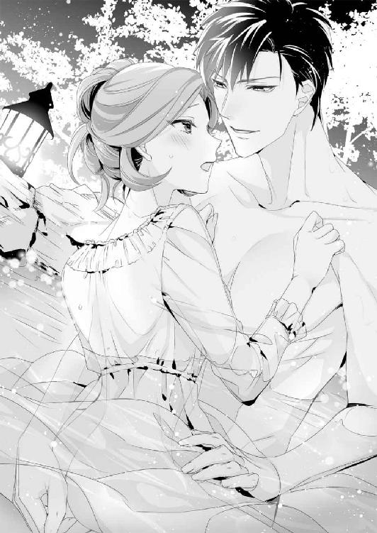
「入れるだけで達ったのか？ 君の躰は本当にいやらしい」
「わたしには、あなたしか......だから、わたしの躰は......」
「わかってる。俺好みのいやらしくて可愛い躰だってこと。俺はもう、君なしじゃダメかもしれない」
まるで愛を込めたささやきに聞こえ、彼を受け入れている場所がズキンと疼く。
今のサラは、脚を開いて彼の上に跨っていた。力を抜いて腰を落とすだけで、蜜窟の天井を突かれる。
何度も押し寄せる快感に太ももを震わせながら、ヒューに力いっぱい抱きついていた。
「......好き......好き、です......」
思いが溢れてきて、サラは黙っていられなくなった。
その告白を聞いた瞬間、背中に回されたヒューの手に力が籠められた。
「ヒュー、あの......あ」
彼女の言葉を奪うように唇を押し当ててくる。
吐息まで奪われ、眩暈がするような荒々しいキスだった。思わず彼から逃れようとするが、今度は激しい突き上げに翻弄される。
躰の中を掻き回され──ヒューの昂りが膨らんだように感じた瞬間、サラは蜜襞に熱い飛沫を受け止めていた。
ふたりの唇が離れ、サラは彼の顔をジッとみつめる。
ヒューなら、彼女の思いを受け止めてくれるはず......そう信じて疑うはずもなく。
だが、彼の口元がゆっくりと動き、
「......すまない」
そう、ひと言だけ呟いた。
翌朝、湯治小屋を出ようとしたときだった。外で話すヒューとカイラの声に、サラは足を止める。
「ヒュー様、あんなよそ者の娘なんか連れてきて......どうするおつもりなんですかい？」
それがサラ自身のことだと気づき、彼女は息まで止めた。
「どうもこうもない。連れて帰るさ、妻として」
「ですがねぇ......」
「昨夜、説明しただろう？ 俺たちはお互いに伴侶を必要としていた。だから結婚した。それだけだ」
ヒューは本当のことをカイラに話したのだ。
彼にとってサラは、『それだけ』の存在だ、と。そもそもが、始まりからモニカたちとは違う。愛でも恋でもない、『好き』という言葉なんて口にしてはいけない関係。
夫婦であっても、身体は寄り添っても、心まで寄り添うことのない......。
だからヒューは、サラの『好き』に謝った。
「だから、そんな簡単にはいきませんよ。なんたってヒュー様は──」
「よけいなことを言うんじゃない！」
彼は慌てた様子でカイラの言葉を遮った。
だが、カイラも黙っていられなかったようだ。
「いい加減に目を覚ましてくださいな。あの娘さん、カドガンの伯爵令嬢ですって？ そんな立派な家の娘さんが、なんで異国の軍人さんに嫁ぐんですか？ ヘンリー様といい、どうしてこう女を見る目がないのか」
「カイラ婆さん！ 俺は」
ヒューの反論を阻むように、サラはわざと音を立てながら表に出た。
ふたりはハッとした顔でこちらを見る。
「サラ......もう、支度は終わったのか。いや、女は時間がかかるって、そう聞いたことがあるから」
「はい。これでも、持って来た中で一番いいドレスを着ました。とても、カドガン王国の伯爵令嬢には見えないかもしれませんが」
サラはカイラのほうを向いて、自ら言い返した。
すると、彼女はサラを馬鹿にしたように笑ったのだ。
「とーんでもない。この国でそんな綺麗なドレスを着た女は、お城に住んでるお姫様ぐらいなもんさ。もーっといいドレスを買ってもらおうと思ってんなら、残念だったね」
サラは持参した中で唯一の絹タフタのデイドレスを着ていた。色は落ちついたライラック、ジゴ袖が流行遅れと言われるかもしれない。母のお下がりなので、その点は仕方がなかった。
このドレスを見て、カイラはサラが身分を偽ってヒューの妻の座に納まり、彼の財産を狙っている、と思ったのだろう。
ただ、『ヘンリー様といい』と言っていた。
それは、ヒューを罠に嵌めた兄嫁の正体を見抜いている、ということ。
（もしそうなら......この女性、侮れないわ）
それに、彼女はサラを敵対視しているが、ヒューの味方であることには間違いない。
サラはスッと胸を張った。
「カイラさん、わたしはヒューに助けていただきました。ですから、彼が妻を必要とする限り、わたしはこの国にとどまり、彼の力になるつもりです」
「口先だけなら、なんとでも言えるんだよ。とくに、男の前だと女は変わるからねぇ」
これ以上、サラ自身のことを語っても無駄だろう。
だが、どうしても言っておきたいことがあった。
「ヒューのお兄様がどれほど素晴らしい方だったのか、わたしは存じません。ですが、わたしの夫は凛々しく勇敢で、弱い者に優しい立派な方です。お兄様と比べて、彼を貶めるような発言はおやめください。──お願いいたします」
サラがそう告げると、カイラは眉を顰めてこちらを睨んだ。だがさすがに、それ以上は言い返してこなかった。
湯治小屋の前に馬車が横づけされ、サラはヒューに手を取られて乗り込む。
彼の手が触れた瞬間、サラの肩がビクッと震えた。ひと呼吸置いて、ふたたび大きな掌の上に自分の手を載せる。
ヒューはその手をギュッと握った。
馬車はすぐに走り出したが、ふたりの間に漂う空気は昨日までとどこかが違う。日に日に近づいていく気がしていたのに、サラが思いを口走ってしまったことで、すべてが変わってしまった。
（『好き』なんて、言わなければよかった）
ずっとその思いが頭の中でグルグルと回っている。
「サラ......」
「はい！」
ふいに名前を呼ばれ、サラの声は裏返った。昨日の温泉でのことを言われるのかと思い、とっさに身構える。
だが、彼が口にしたのは別のことだった。
「さっきは、嬉しかった」
「さ、さっき？」
「カイラ婆さんに言い返してくれたことだよ。腰の曲がった魔女みたいに見えるけど、いい人なんだ。兄を褒めるけど、本当は俺のこともちゃんと認めてくれてる。でも──」
カイラは悪気なくヒューとヘンリーを比べる。しかもそれはカイラだけのことではなく、彼の実家ではほとんどの人間がやることだと言う。
「あちこちで兄と比べられて、君にはもっと嫌な思いをさせるかもしれない」
「それなら大丈夫です。人と比べられたり、嫌なことを言われたり......自慢ではありませんが、こう見えて慣れておりますもの。魔女──いえ、年配の気難しい女性とのやり取りも、伯母に鍛えられましたから」
サラの返事にヒューはホッとしたような笑顔になる。
そして、
「昨夜の......温泉でのことなんだが」
不意打ちを食らわされ、サラの頭は一瞬で真っ白になった。
「君の気持ちは嬉しかった。でも、王都に戻る前に返事をするわけには......」
「あれは、ただの勢いですから！ 夫婦として睦み合っているとき、ああいった言葉が口をついて出てしまうのです。わたしたちの結婚は愛に基づいたものではありません。でも、あなたには信頼と尊敬を感じております。それだけですから、どうか、お気になさらないで」
サラはヒューに出会った瞬間、夫になってほしいと願った。
そして彼は、サラが提示した自由もお金も拒否する代わりに、彼女に妻としての役割を果たすよう求めた。なぜなら、ヒューのほうも妻を必要としていたからだ。
この場合、ふたりは対等な関係であるべきだろう。
妻の心得を充分に学んでいないサラでも、夫に愛情や貞節を求めても無駄だというくらいのことは知っている。愛情を求めて傷つき、結婚生活そのものを壊してしまう例も少なくないはずだ。
（ヒューとの結婚は絶対に壊したくない。彼に愛してもらえなくてもいいではないの。そんなつもりじゃなかった、二度と抱きたくないって言われるのが怖い）
ヒューの負担になりたくない一心で、口にした言葉だった。
「そう、か。じゃあ、もう俺に抱かれたくない、ってことは？」
「そんなこと！ あ......ありません」
力いっぱい否定しかけて、サラは声を落とした。
「あなたの、子供を産む約束ですし......それにわたしも、無事に伯爵家を継げたときは、後継者が必要ですし......」
おずおずと言い訳を付け足すサラのことを、ヒューは冷静なまなざしでみつめている。
「あの......」
「いや、それならよかった」
「好き、なんて......わたしたちに、ふさわしい言葉ではありませんから」
胸の奥がチクチクと痛む。
これではまるで、自分の言葉に傷ついているようだ。だがそれを、顔に出すわけにはいかない......。
そのとき、馬車がゆっくりと止まった。
「どうしたピーター？ もう、王都に入ったのか？」
ヒューが御者台に向かって声をかける。
すると、困惑したようなピーターの返事が聞こえた。
「い、いえ、まだ、だと思うんですが......。でも、王都の方角からけっこうな数の兵隊さんがやって来ます。かち合うのは不味いですよね？ 馬車を端に避けましょうか？」
王都の警備にあたっているなら近衛兵だろうか。彼らのあとから王族がやって来る可能性もある。
その場合、ピーターの言うとおり道の端に避けるのが正しいが、サラたちは馬車から降りるべきだろう。
ピーターにそう伝えようとしたとき、
「やっぱり来たか。──いや、このままでいい。でも、降りるから扉を開けてくれ」
わずかに早く、ヒューが指示を出した。
「このまま？ 道の真ん中に馬車を停めて、ですか？」
「ああ、そうだ」
サラはヒューの顔を見上げる。ダークグレーの瞳には緊張の色が浮かび、その表情は頬が引き攣って見えた。
「サラ、君も降りてくれ」
「え、ええ、もちろん、わかっております」
そう答えて、サラが腰を浮かせたとき──ヒューは彼女の手首を掴み、抱き寄せるなりキスしてきたのだ。
「あっ......んんっ」
こんなことをしている場合ではないはずなのに、いったい何を考えているのか。
サラは懸命に彼から離れようとする。だが、ふたりの唇が離れても、彼はサラを自由にしようとはしなかった。
「ま、待って......ください。ヒュー、どうして？」
「最初に謝っておく。本当にごめん。でも、君は俺の妻だ。これだけは、絶対に撤回しないから、俺のことを信じてくれ」
彼が何について謝っているのか、よくわからない。だが、その口調は真剣そのものだ。
サラが言葉を失ったとき、馬車の扉が開いた。
ピーターの言ったとおり、王都の方角から大勢の兵士がやって来ている。それも、先頭は顔が見える位置まで近づいていた。
近衛兵らしき姿も見えるが、先頭は騎兵隊のようだ。ざっと数十人、一個小隊は揃っている。
サラたちが馬車の前に立ったとき、先頭の馬に乗った士官が手綱を引いて停止した。すると、小隊全員がその場に立ち止まった。
その士官は馬から下り、サラたちに向かって歩いてくる。
軍服の上着は真紅に近い赤、白いブリーチズはヒューと同じだ。しかし腰に下げた剣は、海軍のカットラスと違って陸軍用のサーベルだった。
階級は......いろいろな知識を詰め込んだサラにも、軍服だけでは判断できない。
ただ、歩いてくる士官の年齢からいうと、ヒューと同じくらいではないだろうか。男性の表情からは何も読み取れず、サラは背筋に寒気が走った。
「......ヒュー」
怖くなり、ヒューの上着の袖をギュッと掴んだ。
（ヒューの出迎えかしら？ 王命を受けている彼だから、近衛騎兵隊の迎えがあってもおかしくはないのだけど......）
派手な色の軍服を着ているのは、近衛兵だと聞いたことがある。カドガンの近衛兵はもっと明るい赤色の上着だったように思う。
サラがそんなことを考えたとき、士官はスッと膝を折った。
と同時に、騎兵隊の全員が下馬し、兵士たちは一斉に片膝を地面につく。その統制の取れた動きにサラは唖然とする。
しかし、本当に驚くことになったのは、士官の次の言葉を聞いたときだった。
「ヒューバート・ザカライア殿下、ご帰国をお待ち申し上げておりました」
「ヒュー・ザック海軍中佐だ。そう名乗るよう命じたのは、エドワード国王だろう？ おまえは、たしか陸軍大臣の──」
騎兵隊の士官は顔を上げるとヒューの問いに答えた。
「はい。自分は陸軍大臣、パーキントン男爵の長男、アレン・リード大尉です。──あらためて、王命をお伝えします。本日をもってヒュー・ザック海軍中佐の任を解き、アイアランド王国ヒューバート・ザカライア・ロードリック王子の地位に戻ることを許可する、と」
リード大尉の声がやけに遠くから聞こえてくる気がする。
実際は目の前で話しているのだが、その内容が......。
（また王命？ ヒューは海軍中佐ではなくなった、ということ？ でも、王子というのは......まさか）
ヒューの袖を掴んでいた手が、少しずつ力を失っていく。
「アレン・リード大尉、か......たしか、兄上と同じ歳で直属の護衛官だったな？ それが今は近衛騎兵隊か？」
「王太子殿下のご命令により、四年前に移りました。現在は近衛騎兵隊の隊長を務めております。このたび、ヒューバート殿下のご帰国に合わせて、ふたたび護衛官に戻ることになりました」
そのため、出迎えの責任者としてやって来た、とリード大尉は付け足す。
彼の手がスッと挙がり、後方から一台の馬車がゆっくりと進んでくる。四頭立ての四輪箱型馬車で扉にはアイアランド王国の神獣、ユニコーンを象った王家の紋章が刻まれていた。
そして、馬車はヒューの前でピタリと停まる。
サラが声も出せずに立ち尽くしていると、背後でモニカの悲鳴が上がった。
「きゃあっ!? な、何をするんですか？」
「なんだよ、俺たちは......」
いつの間に背後に回っていたのだろう。兵士たちが、ここまで乗って来た馬車を差し押さえるようにして、ピーターから手綱を奪い取るところだった。
その上、モニカとピーターを拘束しようとしている。
サラは驚いてヒューから離れた。
「乱暴な真似はなさらないでください。ふたりはわたしの使用人です。いったい──」
モニカたちに一歩近づいたとき──サラは兵士たちに左右から挟まれ、両腕を掴まれたのだった。
「王命により、おまえたちを拘束する」
後ろに下がろうとすると、そこにも兵士が立っていた。
いくら強気なサラでも、大柄の兵士に三方を囲まれては声も上げられない。
「おい！ 彼女に触れるな！」
ヒューが怒鳴ると同時にリード大尉は立ち上がった。そして、ヒューとサラを分断するように立ちはだかったのである。
「王命です、殿下。国境沿いの田舎町で拾った娼婦を妻にするなど、正気の沙汰ではありません。我が国の王太子妃にはフランシス様がおられます」
王命を盾に居丈高に言い放った。
ヒューのほうは、『フランシス』という名前を聞いた瞬間、凍りついたような顔色になる。
リード大尉はそんなヒューの変化を〝罪悪感〟とでも思ったらしい。
「僭越ながら、申し上げます。五年の時間を経て、殿下も大人になられたのではありませんか？ 亡き王太子殿下にわずかでも贖罪の思いがおありなら、自らの行いを恥じ、態度をあらためるべきです」
その言葉はサラにとって許しがたいものだった。
「──手を放しなさい！」
兵士たちを一喝する。
「わたしはカドガン王国、第六代ホワイトリー伯爵の娘、サラ・コンスタンス・ホワイトリーです。アイアランド王国の衛兵は、レディの身体に触れてくる不届き者ばかりであると、女王陛下に報告いたしますよ！」
サラが『女王陛下』と叫んだことで、兵士たちは慌てて飛び退いた。
だが、それで気が済んだわけではなく......サラはリード大尉を睨むと一歩前に出た。
「アレン・リード大尉と言いましたね？」
「......」
長身で銀色の髪をしたリード大尉は、サラの名乗った身分を信用していないのか、彼女の問いかけを無視したのだ。
しかし、その程度の反応で引き下がるサラではない。
「あなたの言う国境沿いの田舎町、レッドグレーヴでわたしはヒュー・ザック中佐の妻となりました。わたしの夫は神に誓って、どなたにも恥じる行いはしておりません。むしろ、国王陛下の威を借りて暴言を吐く、自らを恥じなさい!!」
次の瞬間──リード大尉は腰のサーベルに手をかけた。
数十人の部下の前で、しかも『国境沿いの田舎町で拾った娼婦』と思っている女性から、幼子のように叱られたのだ。
大の男が面子を潰されるという屈辱を受け、彼は憤怒の形相に変わっている。
もし、馬鹿にされたのがサラだけなら、こんな言い方はしなかっただろう。これまでも、卑猥な言葉で揶揄されたり、貴族の娘と思われなかったりしたことは何度もあったのだから。
だが──。
（自尊心を傷つけられたからどうだと言うの？ この人は、ヒューにも同じことをしたではないの。絶対に許さないわ）
湯治小屋でもカイラからいろいろ言われたが、彼女の言葉にはヒューに対する愛情があった。ヒューの身を案じるあまり、サラが彼を傷つけないかと警戒していただけだ。
このリード大尉はヒューに対して不満を持っていて、わざと傷つけようとしているとしか思えない。
本当に斬りつけることはしないと思うが、殴るくらいはするかもしれない。
サラはギュッと目を閉じた。
数秒の時間が過ぎ......十秒を超えても、なんの衝撃も襲ってこない。サラが恐る恐る目を開けると、白刃の煌めきが彼女の青い瞳に映った。
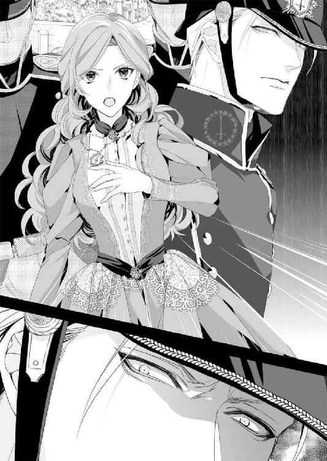
サラの予想に反して、リード大尉はサーベルを抜いたらしい。
だが、そのリード大尉の首筋にはカットラスの刃が押し当てられていた。
「剣を捨てろ」
ヒューは低い声で命令する。
「こんな女に侮辱されて、退けるわけが......」
「サラは俺の妻──妃だ。剣を捨てないなら、おまえを殺す。もう一度〝娼婦〟と呼んだときも同様だ。この五年間の成長ぶり、確かめてみるか？」
そんなふたりのやり取りを見ていた兵士のひとりが、目を虚ろにしながらマスケット銃を構えようとした。
しかし、それよりも早く、
「おい！ そこのおまえ！ 俺に銃口を向けるということは、王家に対する反逆だ。サラを傷つけようとしたときも同じだぞ。逆臣と呼ばれる覚悟があるなら、かかってこい！」
ヒューの怒声を聞き、兵士たちの間に動揺が走る。
刹那、リード大尉は自らサーベルを投げ捨てた。
「全員退け！ この方は、次期王太子、そして国王陛下となられるお方だ。ヒューバート王子をお守りするのが我らの役目──全員退くのだ！」
兵士たちは緊張が解けたように大きく息を吐き、彼らは一斉に膝をついたのだった。
第四章 もしかして......ヒューの隠し子？
アイアランド王国には登頂が困難なほど高い山はない。
だが、王都リリエンタール市は山と海までの間を切り拓き、造られた都市だった。防衛の意味もあり、王城は崖を背にした高台にある。
しかも王城は堅牢堅固にして実用性のみ。優美さの欠片もない。
その姿は柔軟さもなければ、融通もきかない、まさしく父、エドワード国王そのものだった。
王都に入る直前、街道でリード大尉と一触即発の騒動を引き起こしたあと、ヒューはサラを伴って馬車を乗り換え、王城に入った。
『ヒュー、大丈夫ですか？』
王家の馬車に乗り換えるなり、サラは心配そうに尋ねてきた。
だが、ヒューにすれば自分のことどころではない。
『俺のことより、そっちだろう？ いいか、サラ。どれほど喧嘩を売られても、俺のいないところで買うんじゃないぞ』
最初に出会ったときから、そこらの貴族令嬢とは思えないくらい肝が据わっていた。結婚を迫る従兄を軽く往なし、四人もの荒くれ者に囲まれながら毅然としていて一歩も引く気配はなかった。
（逆に買収し始めるんだもんなぁ。あれにはびっくりした）
海路で帰国したヒューが、レッドグレーヴの町に立ち寄ったのはほんの偶然だった。
王都にも港はあるが北の海に面している。南の海であるエルベル海から戻ってくる場合、ほとんどが反対側の港町で船を降りることになるのだ。
だが王都に向かおうとする人間が、レッドグレーヴ近くの港で降りることはまずない。
なぜなら、レッドグレーヴから王都までの道中が、高い山はなくとも起伏の激しい森を抜けるコースになるからだった。それくらいなら、半日多く船に乗り、二日短縮できる港で船を降りるほうを選ぶだろう。
しかし、ヒューはそれを選ばなかった。
理由はひとつ──結婚したと告げた以上、独身のまま、王都に戻るわけにはいかない。
花嫁が必要だ。偽装結婚でもかまわない。ヒューの事情を理解してくれる女性なら、容姿も身分も年齢も問わなかった。
と思うものの......目の前の女性がもし、兄嫁、フランシスのような女性だったとしたら？
その疑問が胸に浮かんできて、なかなか消すことができない。
フランシス王太子妃──アイアランド王国の北部に領地を持つ、モーリス・ドネリー辺境伯の娘だと聞いている。ただ、ドネリー辺境伯に妻はいなかったため、庶子ではないかというのがもっぱらの噂だ。
今から約七年前──ヘンリーが二十二歳のときのこと。
彼は辺境伯領の視察に赴き、ドネリー邸に一泊した。そこで出迎えてくれたのが、当時二十歳になったばかりのフランシス・キーリーだった。
飲み慣れない酒を勧められ、目を覚ましたとき、ベッドの隣に裸のフランシスが寝ていたという。彼女は泣きじゃくっており、ヘンリーは自分の犯した罪に恐れおののいた。
だが真面目なヘンリーが、深い関係になった女性をそのままにしておけるはずがない。独断ではあったが、彼はその場で求婚した。
だが、父であるエドワード国王は厳格なことで評判の人物だ。
当時のヘンリーは、二十歳を過ぎたころから体調も安定してきて、ようやく人並みの健康を取り戻したところだった。それに合わせて、立太子式も計画されており、さらには近隣諸国の王女や国内外の上級貴族令嬢から花嫁を選んでいる最中だったと聞く。
その状況で辺境伯の娘に求婚したことなど、なかなか言い出せるはずがない。そんなとき、ヘンリーは問題を先送りできない状況に追い込まれた。
ドネリー辺境伯が王城に駆け込んで来て、フランシスの懐妊を告げたのだ。
フランシスは、お腹の子供の父親はヘンリーで間違いないと告白。しかも、屋敷に泊まった夜、酒に酔ったヘンリーに強引に純潔を奪われた、と証言した。
当然、ヘンリーは国王から呼び出された。
彼はその場でフランシスの言葉をすべて認め、ドネリー辺境伯に彼女との結婚を申し入れたのだった。
ヒューがフランシスと初めて会ったのは、結婚式当日のこと。透けるような亜麻色の髪と淡いグリーンの瞳を持つ、華奢で儚げな女性──それが第一印象だ。
『繊細で女神のように美しい女性だろう？ 順番は違ってしまったが、無垢で健気な彼女を妻に迎えることができて、僕は幸せだ』
フランシスはヘンリーと再会したとき、泣きながら話したという。
──たとえ認知してもらえなくても、子供はひとりで育てよう。初めて愛した男性の子供だから......と。
ヘンリーは本当に嬉しそうだった。彼が幸福なら、花嫁の身分など関係ない。結婚からひと月足らずで、流産したと聞いたときも、新婚夫婦が気の毒でならなかった。その後、二年経っても子供が授からず、国王から冷ややかな目で見られるのがつらい、とフランシスが泣きついてきたときも、ヒューは彼女を精いっぱいいたわった。
すべてヘンリーを思ってのことだったのに......。
ある日突然、ヒューのその思いは裏切られた。
フランシスの言葉をヘンリーが信じ、そして王太子であるヘンリーを国王は優先した。さらには、誰もが国王の決定を受け入れ──ヒューの言葉に耳を傾けてくれた者はひとりもいなかった。
王子の肩書きがなくなり、世間に出たヒューの目に、ようやく女の本性が見え始める。
彼女らの多くが、ひ弱な姿は見た目だけであることを。
聖女ぶった涙で男を追い込み、妻の座を虎視眈々と狙っていることも。
それを考えれば、まだ娼婦のほうがましだった。
（娼婦は金で割りきれるからな。でも、ひょっとして、この世の中に魔女以外の女っていないんじゃないか？）
妻を連れて帰らなくては、亜麻色の髪の魔女が手ぐすね引いて待っている。
かといって、別の魔女に捕まったのでは本末転倒だ。
やり場のない苛立ちが焦燥感を煽り、ヒューが酒に逃げようとしたとき──彼の耳に伯爵令嬢襲撃の計画が飛び込んできたのである。
男たちの会話から、その気の毒な令嬢はカドガン王国の人間だとわかった。
彼の微妙な身分を思えば、関わり合いにならないのが最善だ。心の中で『聞かなかったことにしよう』と復唱しながら......彼は男たちに気づかれないよう、酒場から抜け出していた。
女は恐ろしい。それも伯爵令嬢となれば、助けてやったところで感謝されるどころか、不審者に思われるかもしれない。ヒューバート王子の肩書きがあったときならともかく、爵位を持たない海軍士官など、レディと呼ばれる貴族令嬢にとっては、謝礼目当てに思われるのがせいぜいだ。
と思いつつ──犯罪が行われるのをわかっていて見殺しにはできなかった。
だが、サラはヒューの予想を大きく裏切った。
小間使いを背後に庇い、怪我をした御者にベッドを譲る。ただの海軍士官にすぎないヒューにまで頭を下げ......。
そんな彼女に求婚されたときは、自分の耳がおかしくなったのかと思った。
サラの事情を聞き、ヒューは考えた。自分なら彼女を守ってやれるだろう。それと同時に、王子の称号は彼女の爵位継承の障害になるかもしれない、と。
自分の正しい身分を伝え、その上でサラに決めさせるべきだ。そう思いながら......彼はどうしても、サラを他の男の手に委ねることができなかった。
王城に入ってすぐ、ヒューは国王に呼び出された。
サラの同席を願い出たが却下され、彼女は別の部屋に通されることになった。
別れ際、ヒューはこんこんと彼女を諭したのだ。
『相手が誰でも、むやみに怒らせるんじゃない。侮辱されたときは、俺の渡したペンダントを相手に見せろ。そして──ヒューバート・ザカライア・ロードリックの妻だと名乗れば、それ以上、君を傷つけようとする人間はいないはずだ』
ヒューがそう告げると、サラはほんの少し頬を膨らませた。
『わたしは......ヒュー・ザック中佐の妻だと思っていました』
そう言うと唇を尖らせ、プイと横を向く。
その仕草があまりにも可愛らし過ぎて、ヒューは押し倒したい衝動に駆られてしまう。
（いや、待て、落ちつけ。今から、あの父上と対峙するんだぞ）
二度、三度と深呼吸を繰り返したあと、ヒューは彼女に向かって頭を下げた。
『だから、ごめんって謝っただろう？』
『これって、ごめんで済むことでしょうか？』
『いや、だが、国王──父上に、君を俺の妻だと認めさせてくる。結婚を無効にするようなことだけは絶対にしないから。信じてほしい』
振り払われることを覚悟して、ヒューは彼女の手を握りしめた。
白くて細い、彼が力を込めたら折れてしまいそうなほど小さい手だ。だがそれは、ひとりぼっちで凍えていたヒューに、たしかな温もりを与えてくれた手だった。
そのとき、ヒューの手の上に、サラのもう片方の手がそっと重ねられ......。
『えっと......本気で、怒っているわけではありませんから。驚きましたが、それだけです。ザック中佐でも、ヒューバート王子であっても、わたしの夫は〝あなた〟ですもの』
金色に艶めく蜂蜜の上に、赤い夕日が射しているような、甘くて暖かいストロベリーブロンドの髪がサラの肩を覆い、背中で揺れていた。
ヒューがもっと見せてほしいと頼んでから、サラはずっと豊かな髪を垂らしたままでいる。
街道でリード大尉と対峙したときは、この美しい髪が怒りの炎に燃えているようだった。
サラに傍にいてほしい。
今このときも、そして、これからの人生、どんなときもサラとともに乗り越えて行きたいと思う。
ヒューの心がサラの姿でいっぱいになったとき──。
「ヒューバート殿下、国王執務室にお入りください」
国王補佐官、ライナス・ロートンの声を聞いた瞬間、ヒューは心の中からサラを追い出した。
城の見た目と変わらず、城内も素っ気ないほどの造りをしている。
床は剥き出しの煉瓦のままで、明かりは燭台に灯された獣脂蠟燭だ。国王執務室といってもフリゲート艦の提督執務室のほうがまだ豪華ではないだろうか。
その執務室の正面に、国王の執務机があった。
父はそこに座り、昔と同じような威厳を放ちながら、ヒューに重圧を与えてくる。
それを撥ね除けつつ、彼は執務机の前に立って軽く頭を下げた。
「ただいま戻りました」
「ヘンリーの死からもう二ヵ月だ。私は、できる限り早く戻るよう伝えたはずだが」
海賊討伐の最前線に送り込みながら、ねぎらいの言葉も何もない。
（ま、期待はしてなかったけどな。堅物の国王陛下は相変わらず......でも、ないのか？）
身にまとった空気は変わらないが、見た目はいささか変わっていた。
想像していた以上にヘンリーの死が堪えているらしい。五年前は真っ黒だった髪が、今は白髪に近かった。身体も細くなっており、ひと回り縮んだような印象を受ける。
「片道一ヵ月もかかるエルベル海に、俺を送り込んだのは父上でしょう？ 忘れたんですか？」
「ヒューバート殿下、お言葉を慎んでくださいませ」
父より年上で、父以上に石頭のロートン補佐官が、さっそくヒューの返答に修正を求めてきた。
無視しても、彼ならしつこく言い続けるだろう。また、こんな日々が続くのかと思うと、それだけでうんざりだった。
「フランシスが懐妊している。彼女を妻にして、これまでどおり王太子妃の地位を与えるのはおまえの義務だ」
「お断りだ。それに、俺にはサラという妻がいる」
その返事を聞き、父は苦々しそうに息子の顔を見た。
「私は王族として義務の話をしている。おまえはその義務から逃れるために、レッドグレーヴの鍛冶屋に駆け込んだだけであろう？ 次期王太子ともあろう者が情けないことだ」
「いい加減にしてくれ！ フランシスは俺を罠に嵌めただけでなく、父上や兄上をはじめとして大勢の人間を騙しているんだ。何度言えばわかる!?」
五年前の屈辱が込み上げてきて、ヒューは奥歯を噛みしめながら答えた。
すると、父の口調も攻撃的なものへと変わった。
「レッドグレーヴの結婚を無効にすることは簡単だ。その娘は疵物となり、アイアランドの王子を誑かした女と呼ばれ、カドガンに戻る場所すら失うだろう」
「無効にはさせない。あなたが認めようが認めまいが、サラはすでに俺の妻だ。気に入らないなら、俺ごと放り出せばいい」
「それは、言い過ぎでございますぞ、ヒューバート殿下」
ロートン補佐官が口を挟んできた。
「言い過ぎついでにもっと言おうか？ 七年前、父上はフランシスのことを王太子妃にふさわしくない、と言っていたはずだ。だが今は掌を返したように、彼女を王太子妃にしろと言う。いっそ、王妃にしてやればどうだ？ 王族の義務なんだろう？」
ヒューの言葉に父子は睨み合い──国王執務室内の空気は、一瞬のうちに沸点へと達したのだった。
☆ ☆ ☆
「ど、ど、どう、いたしましょう......サラお嬢様ぁ」
王城の応接間へと通されてから、モニカはずっとこの調子だ。
どうすればいいのか、どうすべきなのか、教えてほしいのはサラのほうだった。
（とりあえず、いつまでこの部屋にいればいいのかしら？）
朝早くに湯治場を発った。その直後、街道で騎兵隊を筆頭にした一個小隊から、少々乱暴な出迎えを受け、この王城に連れて来られた。
そしてヒューと引き離され、時刻はすでに正午を回っている。
サラはソファからスッと立ち上がり、窓辺に向かって歩いて行く。
それと同時に、部屋の隅に控えた高齢の女官がふたり、妙にそわそわした様子でこちらの気配を窺っていた。どうやら、給仕のためというのは名目で、サラたちを見張るよう命じられてここにいるらしい。
（わたしのこと、きっと変なふうに思われているのでしょうね。初対面のときから、おかしな顔をしていたもの）
サラは苦笑しつつ、
「わたしはどこにも行きませんから、椅子に座っていてもよろしいのよ」
カドガンの言葉で話しかける。
二国の言葉はほぼ同じなので、伝わらないわけはないと思うのだが......女官たちは目を背ける。サラは同じ言葉をアイアランドのイントネーションに近づけてもう一度言うが、やはり返事をしようとはしなかった。
すると、モニカがサラのすぐ傍までササッと近づいてきた。
「かなりお歳のようですから、耳が遠くなっているんじゃ？」
「モニカ、失礼ですよ」
「でっ、でもっ！ 聞こえているなら、無視するほうが失礼だと思いますっ!!」
モニカは半泣きで叫んだ。
彼女がサラのこと以上に気にしているのは、王城に入る前に引き離されてしまったピーターのことだった。
ピーターもきっと周囲から無視されていることだろう。
本当に厩舎に連れて行かれたのかどうかも怪しい。王城から放り出されてしまったかもしれない。そのときは、もう二度とピーターに会えない。
といった感じで、サラよりモニカのほうがこの応接間から飛び出して行きそうだ。
「わ、私、もう耐えられません！ だって、なんだか囚人のようで......どうして、私たちが、いえ、お嬢様がこんな目に......」
「落ちつきなさい。彼がこの国の第二王子であったことは驚きですが、わたしたちは罪を犯したわけではないんですよ。罰せられるはずがないではありませんか？」
思えば、ヒューの国王に対する発言はかなり失礼な......いや、親密なものだった。
父親が次男より長男を重んじるのは、ある意味仕方のないことだ。理不尽なものは感じるが、そこで腹を立てていては先に進めない。
だがヒューの話を聞く限り、必要以上に粗雑な扱いだったのではないだろうか。
しかも五年前のことは酷い。ヒューは父親にとって、聞き分けのいい息子ではなかったのかもしれない。それでも、兄嫁の訴えを一方的に認め、第二王子の身分まで取り上げて、戦場に追いやるのは間違っている。
そしてこの雰囲気である。
騎兵隊のリード大尉がヒューを王子と呼びつつ、暴言を吐いたのには驚きだった。
サラもつい、怒りに任せて彼を傷つけようとしてしまったが......。
（ヒューにも、相手が誰でもむやみに怒らせるな、と言われたけれど、まあ、そのとおりよね。でも、カットラスを手にしたヒューって、誰よりも凛々しくて素敵）
サラは彼に握られた手をソッとさすりながら、『君を俺の妻だと認めさせてくる』そう言ってくれたときのヒューの顔を思い出していた。
もちろん、国王に結婚を認めてもらわなくては、彼がサラを妻にした意味がなくなる。
そうでなくては、兄嫁フランシスを娶って王太子の地位に就くよう、ふたたび求められるだろう。
（魔女なんて言っておられたけど、あの伯母上に勝る魔女はいないと思うわ）
ナンシーはすでにカドガンの首都、マクニール市に戻ったはずだ。彼女のことだから、サラが伯爵家を継承できないよう、いろいろ画策しているのではないかと思う。
だが、これほどまで遠いところにいては、それを知ることも探ることもできない。また、知ったところでどんな手も打てなかった。
（悪いことだけ考えても仕方がないわ。それに、ヒューが王子様ということは、ロバート皇太子殿下がナンシーへの加担をやめてくださるかもしれない）
そう考えると、わずかだが光明が見えてきた気がして......。
そのときだ。
応接間の奥に見える次の間から、タッタッタッと軽快な足音が聞こえてきた。
サラが目を向けると、瑞々しい若草色のショートドレスを着た少女が駆け込んで来たのだった。
黒い真っ直ぐな髪は肩で綺麗に切り揃えられている。その少女は大きなグリーンの瞳をキラキラと輝かせ、サラに向かって駆け寄って来た。
その少女を見た女官は戸惑いを露わにして「ロレッタ様」「どうしてこちらに？」といった言葉をささやき合っている。
「わあ！ 本当に暖炉の炎みたい。とっても温かそう！」
だが、少女が見ているのはサラのストロベリーブロンドだった。
サラはその場にしゃがみ込み、少女と目線を合わせる。
「それはわたしの髪のことかしら？ 温かいかどうか、触ってみてもいいわよ」
「えっと、でも、本物の炎だったら、火傷しちゃうもん」
「まあ、それは困ったわね」
サラがクスクスと笑うと、少女も楽しそうに笑みを浮かべた。
「わたしの名前はサラと言うの。あなたのお名前は......あ、そうだわ、当ててみましょうか？ うーん、ロレッタ！ 可愛いプリンセスのロレッタ様かしら？」
女官の呟きを聞いていただけだが、サラはさも特別な力を使ったかのように、ロレッタの名前を口にする。
するとロレッタはパッと目を見開き、
「すごーい！ すごい！ サラってすごい。ねえ、サラって新しい女官なの？ だったら私と一緒に遊んでくれる？」
サラは困ってしまうが、ロレッタのお願いに答えたのは別の人間だった。
ロレッタの入ってきた次の間から、今度は大人の足音がして──。
「ロレッタ、馬鹿なことを言ってはいけませんよ。あなたには専属の女官がいるでしょう？」
姿を見せたのは、亜麻色の髪を綺麗に結い上げた、ほっそりした体形の女性。ロレッタとよく似たグリーンの瞳を持ち、上品な顔立ちをしていた。
「王太子妃殿下」
女官たちは口々に呟き、サッと膝を折って頭を下げる。
間違いない。彼女がヒューを罠に嵌めた張本人、亡きヘンリー王太子の妃フランシス。そう確信してサラは大きく息を吐く。
「さあ、ロレッタ、子供部屋に戻りなさい」
フランシスは少し強い口調で命令した。
すると、ロレッタは身体をビクンと震わせる。彼女の顔色は、ほんの少し前とは急変しており、まるで母親に怯えているようだった。
サラは首を傾げたが、とても口を挟める雰囲気ではない。
しかも、フランシスのあとから入って来た女官がそのままロレッタを連れて出て行こうとしており、よけいに何も言えなかった。
だが、チラッとこちらを見たロレッタに、サラはにっこりと微笑んで見せた。
視線が合い、ロレッタもほんの少しだけ、笑顔を返してくれたのだった。
「おまえが......ヒューバートの連れ帰った娼婦ね？」
フランシスは棘のある声でサラに尋ねてきた。
ため息をつきながらサラが立ち上がろうとしたとき、唐突に、何かがぶつけられた。驚いて手で頭を庇うが、そんなサラの目の前に十枚ほどのこの国の金貨が転がった。
「ヒューバートに代わって、婚約者であるわたくしが代金をお支払いするわ。それを持って、さっさと城から出て行きなさい！」
後方でモニカの息を呑む気配を感じる。
サラは振り返って、怒りに顔を真っ赤にするモニカを目で制し──ゆっくりと金貨を拾い始めた。
「お金は領民から託された大切なもの。貯め込むだけの吝嗇家になってはダメだけど、感謝して使わなくてはなりません──伯爵夫人であった母から教わったことです」
言いながらすべてを拾い、そのまま女官のひとりに手渡す。
「ご挨拶が遅れました。わたしはカドガン王国、第六代ホワイトリー伯爵の娘、サラ・コンスタンス。そして、ヒューバート・ザカライア・ロードリックの妻です」
ひと息に言うと、ライラック色のデイドレスの襟元から、ヒューに渡された聖母子像のペンダントを出して見せる。
そのペンダントを見た瞬間、女官はふたりとも深く頭を下げた。
ヒューは『それ以上、君を傷つけようとする人間はいないはず』と言っていたが、まさかここまで効果があるとは思わなかった。
（ひょっとしたら、年配の女官はヒューのお母様のことをご存じなのかしら？ あ......もし、そうなら、ふたりがわたしを見てそわそわしていた理由、って）
サラの珍しいストロベリーブロンド見て、亡くなった王妃のことを思い出していたのかもしれない。
フランシスは七年前に嫁いできたはずなので、髪の色まで知らないのだろう。
そう思ってあらためて彼女の顔を見ると、サラはビクッとした。
先ほどの上品さを打ち消すような、禍々しい顔つきだ。その豹変ぶりに、これ以上何を言ったらいいのかわからなくなる。
そんなサラの表情をどう捉えたのか、フランシスは意地悪そうにニヤリと笑った。
「無駄よ。陛下は必ず、ヒューバートの妻の座をわたくしにくださるわ」
その自信がどこから来るのか、サラには不思議でならない。
（だって、罠に嵌めて追い出した相手なのよ。それで妻にしてもらえるなんて、普通は思わないでしょう？）
妻の座どころか、ヒューが国王になったときは、ロレッタとこれから生まれてくる子供も取り上げられて、追い出される心配をするべきだろう。
サラがそう思ったとき、扉がノックされた。入って来たのはヒューだった。
やっと迎えにきてくれたのだ。ただ、彼の表情に疲れが見え、しかも数人の近衛兵に囲まれているのが気にかかる。
それでもホッとして彼に近づこうとしたとき、
「ヒューバート様......あなたのご帰国を、お待ちしておりました」
サラより早く、フランシスが声を上げた。
それも──あなたは誰？
そう尋ねたくなるくらい、見るからに儚げなプリンセスの顔に変わっている。サラに向けた刺々しさなど全く感じさせない優しく甘い声で話しかけながら、ヒューに飛びつくようにしてしなだれかかった。
びっくりしてモニカの顔を見ると、彼女も目を丸くしている。
女官たちは半ば諦め顔だった。
「お義父様から聞かれたのでしょう？ わたくしは王命に従います。どうか、わたくしと子供を支えてくださいませ」
「気安くさわらないでくれないか、私は──」
ヒューは腕にしがみついてくるフランシスを引き剥がそうと、彼女の手に触れた──瞬間、どうしたことかフランシスは床に倒れ込んだのだ。
「ああ、お許しください！ 陛下にすべてを話してしまった、わたくしを許して。お腹にいるのは間違いなくヘンリー様のお子なのです。乱暴な真似はなさらないで！」
サラは開いた口が塞がらない。
ヒューは乱暴なことなどしていない。極めて紳士的に、フランシスの手から逃れようとしただけだ。
ところが、そんなフランシスに駆け寄る人間がいた。
「何をなさるのです、ヒューバート殿下！ フランシス様、お怪我はございませんか!?」
アレン・リード大尉だ。
ヒューの護衛官につくことが正式に決まったのかもしれないが......。
（どうしてヒューに怒るの？ リード大尉は彼女の転び方が、わざとらしい、とは思わないのかしら？ もしそうなら、彼女の護衛官になったほうがいいと思うわ）
サラがそんな気持ちを込めて彼に視線を向けると、同時に、リード大尉もジロッとサラのほうを睨んだ。
「フランシス様は夫を亡くされたばかりで、しかもご懐妊中のお身体。どこかの心身ともに頑強な女性とは違うのです」
遠回しな言い方をするが、『どこかの心身ともに頑強な女性』がサラであることは、誰でもわかるだろう。
「アレン！ おまえ、いい加減に──」
「そんなことよりヒューバート殿下、どうかフランシス様をお部屋までお連れくださいませ。自分のような者が尊いお身体に触れるわけにはいきませんので」
ヒューは文句を言う力も失った様子で、応接間の外まで聞こえるようなため息をつき、渋々といった顔でフランシスを抱き上げた。
そしてサラのほうに切なげな視線を向ける。
「サラ、女官に俺の部屋まで案内してもらえ。モニカやピーターには王城内の別棟に部屋が与えられるが、モニカはしばらく傍にいてもらったほうがいいだろう」
「はい、わかりました」
「すぐに戻るから」
そう言って歩き出したヒューの肩越し、フランシスはチラリとこちらを見た。その不遜な笑みに、言いようのない不安を感じるサラだった。
王城を奥へと進み、細く暗い廊下を通った先の部屋にサラたちは案内された。
狭くはないが、とくに広いとも思えない部屋だ。王都までの道中に泊まった宿屋とは比べるべくもないが、王城の一室としてはずいぶんと質素な内装に思える。
応接間の調度品は古くても歴史を思わせたが、この部屋の場合、古い品が置いてある、としか言えない。
「ねえ、こちらがヒュー......バート様のお部屋なの？」
妻といえども、一国の王子を呼び捨ては不味いのではないか。そう思って慣れない名前で呼んでみる。
また無視されるのかと思ったが、女官はサラのほうを見て、
「──はい、そうでございます」
と答えてくれた。
安全のために奥まった場所にあるのかもしれないが、一国の王子に与えられた部屋とは思えない。
蜘蛛の巣はなく、埃が積もっている様子もないので掃除はきちんとしてあるようだが......。
サラは疑問を呑み込み、別のことを尋ねた。
「あなた方はかなり昔から勤めているのかしら？ わたしの髪を見て落ちつかない素振りだったでしょう？ それは、亡くなられた王妃様のことを思い出されたから？」
ふたりはハッとした顔をしてお互いを見る。
そして小さくうなずいたあと、サラのほうを向き直った。
「ええ、ええ、それはもう驚きました。王妃様は、優雅に波打つ夕陽の色をした、あでやかな髪をしておいででした」
「本当に、あなた様はよく似ておられる。......ええ、もちろん、髪の色だけですけれど」
わざわざ念を押され、サラは苦笑してしまう。
「では、フランシス様はどうかしら？」
「どう、と申されましても......私どもには」
「ヒューバート様のことです。わたしたちの前では呼び捨てになさいました。でも彼の前では、声色からして違いましたね。ヘンリー様にもそうだったのかしら？」
ふたりは気まずそうな顔をして口を閉ざした。
「話を変えましょう。五年前のことなのだけど......」
サラが何を言わんとしているのか、ふたりとも気づいたらしい。これまで以上に口をギュッと引き結んだ。
「わたしは夫の言葉を信じます。彼は弱い女性を傷つけるような男性ではないわ。あなた方は今も、フランシス様の言葉を信じているの？」
その問いには答えないまま、ふたりは頭を深く下げて部屋から出て行こうとする。
（まるで緘口令でも敷かれているみたいね）
心の内を聞かせてもらうことは、すぐには無理かもしれない。サラはそう自分を納得させ、女官たちの背中に声をかけた。
「これから、仲よくしてくださいね。──ご苦労様でした」
ふたりはピタリと立ち止まり、驚いた表情でサラの顔をまじまじとみつめる。
そして、ひとりが唐突に口を開いた。
「誘惑......なさったのは、フランシス様のほうに違いありません。ヒューバート様は、二十歳になられたばかりでしたから。ですが......ヒューバート様なら、責任を取られると思います。本当に......申し訳ございません！」
女官は口を押さえると涙を浮かべ、サラから逃げるように廊下を走って行く。もうひとりもそのあとを追った。
理由を尋ねることはおろか、呼び止める間もなく......。
サラはしばらくの間、モニカと一緒に呆然と立ち尽くすことしかできなかった。
その後、我に返ったようにモニカが言い始めた。
「今のって、いったいどんな意味があるのでしょう？」
「ヒューが兄嫁を襲ったわけではない、と言いたかったのではないかしら？ でも、横恋慕して深い仲になった、というのは信じているみたいね」
サラは部屋の奥まで行き、閉じたままの窓を大きく開く。
そこに、色とりどりの花が咲き乱れる庭園を予想していた。だが、王城の裏には深い森を思わせる木々ばかりだ。
そう言えば、廊下から垣間見えた中庭も、花より緑のほうが多かった。庭師が手を抜いているわけではなく、草木で作り上げるのがアイアランド王国風の庭園なのだろう。
風の温もりは違うが、これはこれで、しばらく戻れそうにない伯爵領を思い出させてくれる。
サラは花々の甘い香りより、爽やかな空気を胸いっぱいに吸い込んだ。
「横恋慕......女から見たら、裏表が恐ろしくて近づくことも躊躇われますが、男というものは、わりと簡単に騙されてしまいますからねぇ」
「まあ、ピーターがそうなの？」
「ええ、そうなんです！ 情に絆されたり、女の涙にコロッと......いえ、私のことじゃありませんから！」
モニカは慌てて訂正しながら、遠い領地から運んで来たわずかばかりの衣裳を、部屋に置かれた衣装箱に移していく。
「でも、中佐殿......ではなかった、ヒューバート殿下が取らなくてはならない責任って、なんでしょうね？」
「そうね......第二王子としての責任、かしら？」
サラには王族のことはわからない。だが、伯爵家の後継ぎ娘として育ったこともあり、伯爵家の名誉や領地領民を守る義務といったものは、彼女の人生から切り離せないものだ。
ヒューにもどこか同じものを感じてきた。
『貴族とは違うんだが、けっこう古くて......なんというか、面倒な家系なんだ』
あの言葉に深くうなずいたことを覚えている。
貴族令嬢といってもすべてが同じわけではない。上に兄または姉がいれば、ほとんどの場合、重い責任は伴わない。家にそこそこの財産があり、恋心を抱いた相手が釣り合いの取れる身分であれば、好きな相手との結婚は難しいものではなかった。
もちろん、ヒューのように兄が亡くなるという不測の事態もあるので、由緒ある家に生まれた場合、心構えだけはしておかなくてはいけない。
だからこそ、サラも十九歳の誕生日に願ったのだ。
伯爵家にふさわしい身分の男性と恋に落ちたい。人々の尊敬を集めるような人格者で、魅力的な容姿をしており、サラのことを熱烈に愛してくれる男性であれば──と。
（願いは叶ったような、叶っていないような......）
そのとき、ふいに昨夜の声が耳に響いた。
『......すまない』
（いやだ、大事なことを忘れていたわ。わたしのことを、熱烈に愛してくれる男性なんて、いるわけないのよ）
誰が見てもサラは、プリンセスどころかレディの称号も似合わない、『心身ともに頑強な女性』なのだから。
湯治小屋のカイラにも言い返してしまったし、リード大尉にはサーベルを抜かせるほど怒らせてしまった。一国の王太子妃に向かって、えらそうに意見してしまったことまで思い出し、ますます落ち込んでしまいそうだ。
すると、いつの間にか近くまで来ていたモニカが、ハアーッと息を吐いた。
「私にはわからない世界ですねぇ。父は土地も身分もない馬の調教師ですし、一家でホワイトリー伯爵家にずっと仕えていられたらいいなぁ、っていうくらいしか。ピーターは馬丁だから、結婚してもずっと一緒に勤められるって思ってたんです」
モニカは、サラと同じ時期に子供を産み、サラの子供の乳母となるのが夢だった、と話す。
「でも、サラお嬢様がお産みになるお子様は、王子様や王女様なんですよねぇ」
無邪気に語るモニカを見ていて、サラの心に不安が広がった。
もしヒューが王命に従うことを選んだ場合、サラはこの国にはいられない。カドガンの伯爵領に戻るしかないが、果たしてサラに戻る場所はあるのだろうか？
レッドグレーヴに駆け込むという、同じ手段は二度と使えない。
第一、サラはもう結婚にふさわしい無垢ではなかった。
いや、それよりも、ヒューと離れて暮らす、彼の妻ではなくなる、ということにかなりの衝撃を受けていた。
「お嬢さ......じゃなかった、サラ様。この先、どうなるのか不安はありますけど、でも、サラ様ならきっと、周りがびっくりするような解決策を考えてくださいますよね？ 伯爵領のみんなも、サラ様のことを信じております！」
モニカは祈るように胸の前で手を組み、サラを見上げている。
きっとサラの感じている不安が、彼女にも伝わっているのだろう。
（ヒューは、『すぐに戻る』と言ったわ。レッドグレーヴに向かう馬車に乗り込んだときに比べて、今の状況が悪くなっているわけではないのだから......しっかりなさい！）
サラは自分で自分を叱りつけ、モニカに笑顔を向けた。
「せっかく捕まえた旦那様を、フランシス様に盗られるわけにはいかないものね。美人に弱いリード大尉にも負けられないわ。そうと決まれば、まずは腹ごしらえよ。お昼はとうに過ぎているのだから、わたしたちも食事をいただきましょう」
サラが笑うとてきめん、モニカの頬も緩んだ。
「私もお腹が空いていたんです！ さっそく、聞いてまいりますね！」
嬉しそうに廊下を歩いて行く足音は、わずか一分後──あたふたと駆け戻ってくる足音に変わった。
そして、モニカが泣くように叫んだ。
「お、お嬢様、た、大変です！ 廊下への扉が閉まっていて、しかも、か、鍵が、かかってるんです。私たち、閉じ込められてしまいましたーっ!?」
☆ ☆ ☆
何時間が過ぎただろう。真っ暗な中、サラはモニカと身を寄せ合って、部屋の隅でジッと息を潜めていた。
そのとき──。
カツン......窓に何かが当たるような音が聞こえた。
コン、コン、コツン......音は続けて聞こえ、しだいに大きくなる。
ギギッと大きな音がして、窓が開かれ──。
「サラ!? サラ、ここにいるのか？ いるなら返事をしてくれ、サラ！」
ランタンの灯りが見え、ヒューの横顔が光に照らし出された。
次の瞬間、サラは立ち上がった。
「ヒュー!!」
名前を呼びながら駆け寄り、彼の胸に飛び込む。
優しい温もりに包み込まれ......堪えきれずに涙が込み上げてきた。ぽろぽろとこぼれ落ち、頬がくすぐったい。
「怪我はないか？ ひどい目には遭わされなかったか？ ああ、クソッ！ 君をここに閉じ込めたのは、いったい誰だ!?」
ヒューは矢継ぎ早に質問を投げかけるが、サラはただただ、愛する人の腕の中に戻れたことに、心の底から感謝していた。
──あとになって思えば、やけに狭くて薄暗く、長い廊下だった。
廊下の突き当たりに扉がついていることにも、疑問を感じるべきだったのかもしれない。だがまさか、そこに鍵をかけられ、閉じ込められるとは思わないだろう。
最初は扉のところで叫んでいたが、近くに人がいる気配もない。
閉じ込められたとはいえ、部屋には窓もある。少々はしたない行為だが、窓から外に出て、そこから王城の中庭に回り込めば......。と思って実行したが、中庭との間には高い塀があり、とても乗り越えることはできなかった。
あとは深い森のほうへ向かうしかない。
森といっても、真っ直ぐ下れば町に出られることはわかっている。だがそれは、サラたちが城外に出ることを意味していた。
一度城外へ出てしまったら、ふたたび正門から入れてもらえるとは思えない。
あれこれと理由をつけて、追い払われるのは目に見えていた。
『どうしてこんなことに？ まさか、ヒューバート殿下のご命令？ ピーターはどうなってしまったのでしょう？』
モニカはピーターの名前を呼びながら、泣き出してしまう。
王城の中に、いや、この国に、サラの味方はヒュー以外にはいない。大声で怒鳴り続けても、ヒューに届かなければ誰も助けてはくれないだろう。
『わたしたちがヒューの部屋にいないとわかると、きっと捜してくださるはずです。彼を信じて待ちましょう。ピーターはきっと無事よ。万一、城から追い出されたとしても、あとで呼び戻せば済むことなのだから』
だが時間が経つごとに、サラは寒さを感じ始め......大きな問題に気づいたのだ。
部屋に燭台はあるが、肝心の蠟燭がない。最悪、家具を壊して暖炉で燃やすことまで考えたが、そもそも火種がなかった。
王城は王都を見渡せる高台にある。
それはこの王城が、王都でも一番寒い場所であることを意味していた。そこで暖を取ることもできずに、一夜を過ごせるものだろうか。
ふたりはリネンを頭からかぶり、部屋の隅で身を寄せ合った──。
サラは簡単に自分たちの事情を説明し終える。
「そういうことか......。だが、名前を呼んでもなかなか返事がないから、また間違えたのかと思った。ここにもいなかったら、もう探す場所がなかったところだ」
ヒューはサラを横抱きにして、歩きながら呟いた。
高い壁に沿って少し歩くと、王城内に戻るための裏口があるという。
そんなことなら、もう少し探せばよかったと後悔したが......。
一見しただけでは普通の煉瓦にしか見えず、厳重に施錠されているので、外から入ることなどできないと言われる。
（まあ、当然のことでしょうね。だって王城の隠し通路なんて、誰でもわかって簡単に城内に入れたら、それこそ意味がないわ）
ヒューはその裏口の存在も、出入りの仕方も知っているので利用できたのだ。
そこから城内に入れてもらい、サラは本当のヒューの部屋に連れて行かれた。そこは王子の私室と呼ぶのに充分な広さと格がある。
サラは、赤々と火が焚かれた暖炉の前に座り、温かなミルクの入ったカップを手に人心地がついたところだった。
モニカのほうはヒューと一緒に迎えにきてくれたピーターが寄り添い、近くの部屋にいるという。彼女がさかんに心配していたピーターだが、誰からも無視されていたため、ヒューに事態を聞かされるまで、厩舎でひたすら馬の世話をしていたらしい。
そのヒューだが......。
彼はフランシスを部屋まで運んだあと、いろいろ話しかけられ、呼び止められた。その後、大急ぎで部屋に戻ったが、すでにサラの姿はどこにもなかったという。
ヒューがリード大尉のもとへ怒鳴り込むと、
『それでしたら──国王陛下がレッドグレーヴの町で挙げた結婚式は無効と宣言されました。明日にもフランシス様との結婚式が行われます──とお伝えしたら、お姿が見えなくなったと報告を受けております』
彼は平然と言い放った。
「あの野郎に手袋を投げつけてやりたかったんだが、そんなことより、君を探すほうが先だと思って」
彼は大急ぎで馬に乗り、サラを追いかけた。
だが、湯治場辺りまで駆けても見つからず、外が真っ暗になり始めたとき......ヒューはようやく、サラが王城から出ていないかもしれないという可能性に気づく。
戻ってピーターの存在を確認して、ふたりで城内を探し回った。
「そこで気づくなんて、遅過ぎます！ わたしが挨拶もせずに出て行くと思いますか？」
「君ならあの野郎とやり合って、啖呵を切って出て行きかねない、と......あ、いや、そういう意味じゃないんだが」
充分、そういう意味だろう。
サラが唇を尖らせると、彼は大きな身振り手振りで言い訳を始める。
「ほら、君は国王に対する心構えとか、すごく気にしてたじゃないか？ だから、名前とか出されたら、奴の言葉を信じたんじゃないかと思って......。いや、実際、俺もなんと言って弁解、いや......釈明？ 違うな......証明か？ とにかく、本当に困ってる」
「......？」
なんと答えたらいいのだろう？
ヒューが何を言いたいのか、それすらもわからない。
「あの......女官の方が言っていました。あなたなら責任を取ると思う、だったかしら？ それがなんのことか、わかりますか？」
彼は息を呑んだあと、ゆっくりと吐き出す。
「ああ、だから、それが──」
ヒューが話し始めた直後、扉がノックされたのだった。
サラは寝室に下がり、ヒューは居間でリード大尉を出迎えた。
リード大尉が同行しているのは、サラを偽の王子の部屋へと案内してくれたふたりの女官。彼女たちは身の置きどころに困るように、首が折れそうなほどうつむき、立ち尽くしている。
「女官らを連れて参りました。自分が報告を受けたのは、このふたりです」
本当にそんな報告を受けたとは思えない。
きっと、ヒューがサラを見つけ出してしまったことで、リード大尉に報告した人間の存在が必要になったのだろう。
（あのふたりのせいにするつもりだわ。なんて卑怯なの！）
サラは寝室からそっと隣の居間を覗きつつ、リード大尉に対する怒りが込み上げてきて、手をグッと握りしめた。
「ふたりに尋ねる。サラから、彼女が俺の妻だと聞かされなかったか？ 彼女には母の......亡き王妃の形見を持たせてある。それは承知しているな？」
ふたりの女官の顔は、見る間に白くなっていく。
だが、誰かのことを気にしているのか、ひと言も話そうとしない。
「暖も取らせず、水も食料も与えず、鍵をかけて閉じ込めた。それも久しく使われていない拘束部屋に！ おまえたちは妃の命を危うくしたんだ！」
あの部屋は〝拘束部屋〟と呼ばれていて、地下牢に入れるにはふさわしくない、身分の高い捕虜や敵国から差し出された人質を閉じ込めておくための部屋だという。
応接間に通されたとき、モニカが『囚人のよう』と言っていた。奇しくもモニカの言うとおりになってしまい、サラはため息をつくしかない。
黙り込んだままの女官たちに代わって、リード大尉が口を挟んできた。
「お待ちください、殿下。この者たちは何も知らないと言っております。国王陛下のお気持ちを伝えてしまっただけで、〝拘束部屋〟に閉じ込めるなど、あり得ません」
その言葉を無視するように、ヒューは女官たちに尋ねる。
「おまえには聞いていない！ あの部屋にサラを連れて行き、鍵をかけて監禁しろ──このアレンに、そう命じられたのではないか!?」
詰問され、女官たちはうつむいたままポツポツと口を開く。
「な、何も、存じませんです。わ、わたくしどもは、たしかに、こちらのお部屋に......あ、案内させていただきました」
「わたくしも......お、同じで、ございます」
ふたりの女官は口を揃えて完全否定した。
ヒューは目を見開き、信じられないといった顔で女官たちを見ている。
サラも驚いたが、それ以上に女官たちの怯えた表情が気になった。まるで弱みを握られ、脅されているかのようだ。
この国の王子とはいえ、ヒューは五年前の件で著しく評判を落としている。
ふたりを脅しているのがリード大尉だとすれば、ヒューが王子の身分を奪われ、王都から遠ざけられていた間に、着々と権力を蓄えてきたのだろう。
もちろん、それがリード大尉だという証拠はどこにもない。
「おやおや、女の......失礼しました、自称伯爵令嬢の策略に乗り、家臣の首を刎ねるおつもりでしたか？」
ヒューの殺気立った視線を感じ、リード大尉はサラの呼び名を訂正した。『自称』がよけいだが、わざわざ出て行って指摘するほどのことでもない。
「アレン......おまえという奴は」
女官たちは手を取り合って床に座り込み、とうとう泣き出してしまった。
ヒューはどうするだろうか？
吊るし首にすると言って脅し、首謀者の名前を言わせる手段もあるだろう。だが......。
（外国人で素性のはっきりしないわたしを庇うことで、ヒューの評価を下げているのだわ。ここで強硬手段を取ったら、よけいに人心が離れてしまう）
サラはドキドキして、寝室から飛び出したい衝動に駆られる。
そのとき、ヒューはドサッとソファに座り込んだ。
「もう、いい。──下がれ」
彼の言葉にサラはホッとして胸を撫で下ろした。
ヒューもわかっているのだ。女官たちの裏に誰かがいる、ということを。
女官たちが退出しようとしたとき、ふいにリード大尉が口を開いた。
「それだけですか？ 家臣を疑ったのですよ。他に言うべきことがあるのではありませんか？」
謝れと言わんばかりの態度に、剣呑とした空気が一瞬でふたりの間に広がった。
次の瞬間──ヒューがソファを蹴り倒す勢いで立ち上がる。
サラは黙っていられなくなり、居間に飛び込んだ。
「ご、ごめんなさい！ あの......カドガンの言葉と似ているから油断していたのね。王城が広くて、部屋の場所を間違えてしまったみたい。ヒューバート殿下にも心配をかけてしまって、本当に申し訳ありませんでした」
サラはゆっくりと頭を下げる。
単なる勘違いで済ませてしまうより他ない。そう思ったのだが、真っ先に口を開いたのは、予想どおりの人物だった。
「まったくだ。人騒がせにもほどがある」
リード大尉は銀髪をかき上げながら、狼のような瞳でサラを睨んでいる。
だがサラは、にっこりと笑い返した。
「まあ、リード大尉もわたしのことを、心配してくださったのですね」
「誰が心配したと......」
「ところで、〝拘束部屋〟に繋がる廊下の扉ですけれど、まさか、人が通ると勝手に閉じて鍵がかかる、といったからくりなどありませんでしょう？」
反論を遮られ、面白くなさそうな顔でリード大尉は答えた。
「そのようなものはない。いきなり突拍子もないことを言って......」
「では、どうして、わたしたちが中にいるときに鍵がかかってしまったのでしょう？」
「それは......普段は扉が閉じたままで、鍵のかかっている場所だ。気づいた者が侍従長に報告して鍵をかけたとしてもおかしくはない」
リード大尉の返事を聞き、サラは重ねて尋ねた。
「では、なぜ、わたしたちは入ってしまったのでしょうか？ 〝普段は扉が閉じたままで、鍵のかかっている場所〟に」
その問いに、リード大尉からの返事はなかった。
女官たちが部屋から出て行き、続けてリード大尉も退出した。
サラの質問がよほど気に障ったのか、彼はひと言も話さず、無言のままヒューに会釈しただけだった。
「どうして、君が謝るんだ？ 騙されて監禁されたのは君なんだぞ！」
ふたりきりになり、ヒューは苛々した様子でソファにドサッと座り直した。
「あのままだと、ヒューが謝罪を口にしてしまいそうで......」
「仕方がない。女官たちは、俺とアレンを天秤にかけて、奴の力が勝ると判断したんだ。それを、俺のくだらない意地で、女官たちの首を刎ねるわけにはいかない。──まあ、死んでも引き下がれないときはあるけどな」
それはおそらく五年前のことだろう。あるいは、この五年間の戦闘経験で、彼は柔軟な考え方を学んだのかもしれない。
どちらにせよ、意地を優先するより、よほど難しく有益なことではないだろうか。
サラは好ましく思ってヒューの顔を見たが、彼のほうは苦々しげな表情をしていた。その横顔が痛々しくて、サラは彼の頭を抱え込むようにして抱きしめていた。
「ダメです。ヒューは国王様になる方だから......こんな些細なことで、家臣に頭を下げてはいけません！」
サラがそう言うと、彼女の腕の中でヒューは小さく笑った。
「だったらよけいに、君にもわかっただろう？ このとおり、人望のない俺は、国王にはふさわしくない。なんたって、国王になるための教育なんか全く受けてないんだから」
彼の言葉を聞き、サラは返事に詰まった。
長男に万一のことがあれば、次男はその代わりを務めなくてはいけない。それは王侯貴族の家に生まれた者の逃れられない宿命だ。ヒューも当然、いざというときに備えて教育を受けてきたのだろう、と思っていた。
だが、エドワード国王の考えは違ったらしい。
第一王子が病弱だったこともあり、ごく自然に第二王子を推す声も出ていた。それでヒューにも国王になるための教育をしてしまったら、有力者はこぞってどちらかの王子に娘を嫁がせ、娘婿となった王子の後見人になろうと画策するだろう。そうなれば兄弟の思惑は無視され、国王亡きあと、内紛状態に突入しかねない。
国王は先手を打ち、ヘンリーを王太子にすると宣言した。
そしてあらゆる面で、ふたりの王子に差をつけてきたという。
「父上に何度となく叱られたよ。鞭で打たれたこともある。おまえは感情を隠すのが下手だ。そんなことで王族の務めが果たせるのか、と。だから、俺は兄上のようにはなれない」
「ヒューはヒューのままでいてください。大丈夫です。リード大尉もフランシス様も、わたしが盾になって戦いますから」
「たっ、戦う!?」
サラの強気な発言に、ヒューの声は裏返っている。
「その代わり、伯母様がロバート皇太子を味方につけて何か言ってきたら、そちらのほうはヒューにお任せします」
大真面目に言うと、弾かれたようにヒューが笑い始めた。
少し前の自嘲めいた笑い方に比べたら、何かが吹っ切れたような愉快そうな笑い声だ。
「君は本当に最高だな。アレン──リード大尉は兄上の親友だった。子供のころはよく遊んでもらったもんさ。だから、五年前のこと、まだ怒ってるんだろうなぁ。しかも、その俺に仕えることになったから」
それだけだろうか？
リード大尉のフランシスに対する態度は、王太子妃と家臣、というものを超えているような気がしてならない。
（人妻の直感、みたいな？）
今の──夫を抱きしめている、という格好も、未婚のころなら考えられなかった。
でも結婚していろいろなことを経験すると、こうして落ち込んだ夫を抱きしめて癒やすのは妻の役目だと思える。
とはいえ、しだいにドキドキしてきて......。
そんな胸のときめきがヒューにも伝わったのかもしれない。彼の手がサラの頬を撫で、こちらをジッとみつめている。
ダークグレーの瞳がいつもより透明に感じ、その直後、ふたりの唇は重なっていた。
「んっ......んんっ、ふっ......ぁ、ふ」
唇を食むように動かし、サラは少しずつ息が上がり始める。
そのとき、ドレスの胸元がフッと緩くなった。
ライラック色のデイドレスは、ひとりで脱ぎ着できるように前に釦がつけられている。その釦を、口づけを交わしながらヒューはひとつずつ外していく。
ドレスの下は形ばかりの、綿サテンのコルセットをつけていた。きつく縛らず、防寒用に着ていると言ってもいい。ヒューの手は、それまでも脱がせてしまいそうだ。
「ヒュー、あの......ここは居間なので、恥ずかしいです」
「恥ずかしい？ 森の中より？」
からかうように言われ、サラの身体は一気に熱くなる。
すると、ヒューは立ち上がって、自分と入れ替わるようにサラをソファに座らせた。
コルセットを留めた紐が緩くなり、サラの胸は一気に露わになる。すると、たわわに実った果実を味わうように、ヒューは吸いつき、舐め回した。
「美味しい......舌触りがよくて、ずっと舐めていたくなる」
言いながら、彼の唇はサラの肌の上をじっくりとなぞって行く。柔らかな双丘に赤い刻印を捺され、先端を舌先で転がされ──直後、サラは背中をのけ反らせた。
「ああーっ！ ヒュー、そんな、胸ばかり......ダメェ」
ひたすら胸ばかり愛撫されて、変になりそうなくらい気持ちがいいので、少し休憩させてほしい、と言ったつもりだったのだが......。
彼は違う意味で捉えたらしい。
「ああ、気が利かなくて悪い。こっちも──可愛がってやらなきゃダメだよな」
次にヒューが触れたのは、下半身を覆い隠しているドロワーズのリボンだった。
ここ数日で、彼は実に手慣れた様子でほどき始める。
昨夜も湯治小屋で......温泉の中でも抱き合った。それなのに、半日寄り添えなかっただけで、何日も彼と会えなかったような気持ちになってしまう。
（ああ、ダメなのに、また『好き』って言ってしまいそう）
サラはキュッと口を閉じた。
直後、ヒューの手が彼女の脚を掴み──左右に広げながら、膝を折り曲げさせた。
「きゃっ!? ヒュー、何を......あっ！」
ソファの上に、膝を胸に押し当てたような格好で座らされ、ドレスの裾が完全に捲れ上がってしまっている。慌てて左右の膝をくっつけようとするが......。
ヒューの手でがっちりと押さえられ、閉じられない。
「お、王城で......こんな、格好は......あ、あっ、んっ」
「俺たちは夫婦なんだから、どんな格好をしてても、咎められる覚えはない。早く、君の中に入りたい......膝、押さえていてくれるか？」
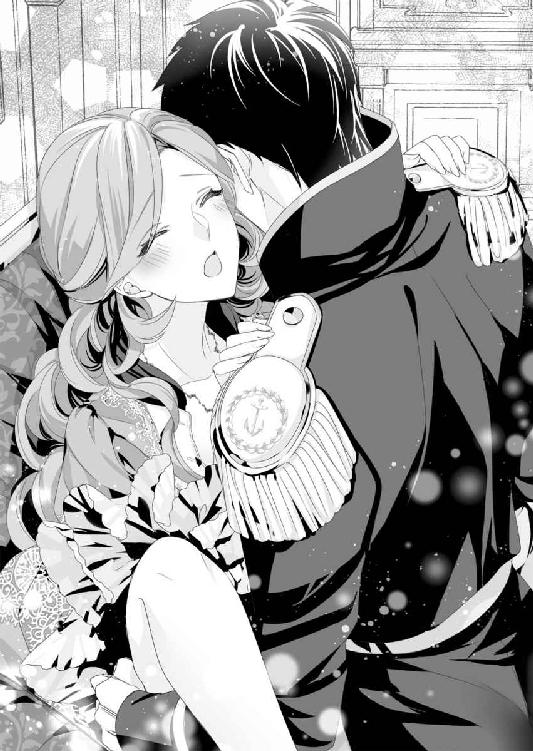
「そ、そんなこと」
この格好を自らし続けるなど、あまりにも淫らな振る舞いではないだろうか。
だが、ヒューは彼女の耳たぶに唇を押し当てながら、
「勇ましいサラに、できないことなんてないだろう？」
「わたしは......そんなっ」
「ほら、早く、ひとつになろう」
掠れる吐息とともに、そんなふうに言われては、これ以上『できない』と言い返せなくなる。
サラは横を向き、彼に代わって自らの膝を押さえ──。
「わたし、は......い、勇ましい、わけ、ではありません......からぁ」
ヒューに勇ましいとか、強いとか、賢いとか、とにかくそんなふうに思われたくない。彼には綺麗で、可愛くて、女らしいと言ってほしかった。
これまで気にすることはあっても、他のレディたちと違うと苦にしたことはない。
だが彼の顔を見るごとに、話をするごとに心が惹かれて、どんどん好きになって、その思いが深まるとヒューにどう思われているのか不安が積もっていく。
些細な言葉に不安が煽られ、サラの目に涙が浮かんだ。
すると、ヒューは彼女の瞳に優しく唇を落とす。
「君と結婚してよかった。君は俺の女神だ。サラがいてくれたら、俺はなんにだってなれる。正義の騎士でも、英雄でも、国王でも......いや、王子様だっけ？」
彼の口から『よかった』と言われただけで、不安が消えていく。
（どうして？ 恋って不思議過ぎる）
グレーの瞳が情熱の光を湛えて、サラの顔を覗き込んでいる。
それを見ていると我慢できなくなり、サラはヒューの整った唇に自分からキスしていた。
「本当の王子様だったくせに......嘘つき」
「いや、嘘はついてない。あのときは、ただの海軍中佐だった」
熱を孕んだ声で答えつつ、今度はヒューのほうからキスを返してくれる。
ふたりは交互にキスをし合い──サラが羞恥に耐えて開いたままの場所に、欲望の滾りが押し当てられた。
「あっ......んっ」
ツンと突かれ、サラの身体はピクッと震える。
彼は何度もツンツンと繰り返し、ぬめった蜜液がサラの泉から溢れ出した。
「ああ、いい感じにトロトロになってきた。サラ、入れてほしい？」
「ず、ずるい。ひとつに......な、なろうって」
ツプッと先端だけ突き刺し、内側を刺激するようにヒューは腰を回し始める。
「あぅっ！ やぁ、あっ、あぁ」
たったそれだけの動きに、サラの躰は奥から蕩けていく。
優しい刺激に我慢できなくなり、サラは淫らに脚を開いたまま、自分から腰を揺らしてしまった。
もちろん、そんなサラの反応に彼が気づかないわけがない。
「ああ、この程度じゃ足りないか。サラはこの辺を激しく抜き差しして可愛がってやると、いい声で啼くもんな」
「た、足りなくなんて、それは、ヒューが......あ、あ、あーっ！」
言い返そうとしたとき、ヒューの指先が秘所に触れた。
花びらの奥に隠れた花芯を引っ張り出し、指で抓んでクニュクニュと刺激してくる。
やがて、その部分がぷっくりと膨れてきて、彼の愛撫に小さな痛みを感じるほど敏感になっていった。
そして蜜窟のほうは......。
（やだ、もっと、溢れてくる。でも、奥のほうが物足りないような......どうして？）
彼に抱かれたときの、ズンと奥まで突かれて、蜜窟がいっぱいになる感覚がサラの中に浮かび上がってきた。
そんな彼女の心の内が見えたかのように、
「奥まで挿入してほしい？」
ヒューの問いに、サラは首を縦に振っていた。
彼はクスッと笑って、
「わかった。じゃあ、目を開けて、ちょっとうつむいたら見えるだろう？」
「見えるって？」
「俺のコイツが君の膣内に沈み込んでいくところが......。ああ、こら、目を瞑ったり、横を向いたりしたら抜くぞ」
目を開けようとして、彼の言葉に慌てて閉じ、そしてふたたび目を開ける。
言われたとおり下を向くと......そこには逞しく反り返ったヒューの雄身が、サラの蜜窟に突き立てられていた。
ヒューはゆっくりと腰を前に突き出す。すると、ズズッと音を立てながら、灼熱の猛りがサラの中に入り込んでくる。溢れ出る蜜が熱され、内側の襞まで溶かされていくようだ。
「はあぁぁ......」
下腹部が圧迫され、サラは大きく息を吐いた。
挿入のときに感じていた痛みは、もうほとんどない。それもこれもヒューが、本人が言うより経験豊富で、サラを充分に感じさせてくれるからだろう。
先端が奥に当たり、グリグリと掻き回される。
下を見ると、ヒューの昂りは完全に根元まで埋め込まれていた。
自分の膣内にヒューがいる。感覚だけでなく、その事実を自分の目で見たことで、いっそうの快感がサラの中に生まれた。
「あ、あ、あん......やぁ、あぁん......あぁーっ！」
サラが唇を噛みしめた直後、ヒューは挿入したときと同様、ゆっくりと引き抜いていく。
そして、くびれの部分まで中に入った状態で、彼は円を描くように回し始めた。
「ひゃう......ま、待って、待って、ダ、ダメ、あっ、あぁ、ヒュー、それ......ダメェーッ」
サラのほうもジッとしていられなくなり、彼に合わせて腰を揺する。
それはほんの少し前より、強く、激しく、動かずにいられない。ついには、膝を押さえていられなくなり、手を放して彼に抱きついた。
「ヒュー、好き......あ」
「俺も......俺も好きだ。サラ......好きだよ」
その言葉を聞いた瞬間、彼女の心はすべて恋の波に攫われた。
自分が大変な立場になってしまったことも、女伯爵になれるのかどうかも、何もかも消え去り、胎内に感じるヒューだけが真実になる。
彼の手が背中に回され、しっかりと抱きしめられた。
サラは自由になった脚を彼の腰に巻きつけ、離れたくない一心でしがみつく。
引き合うように唇を重ねた瞬間、ヒューは最奥まで突き上げ、精を放った。彼は最後の一滴までサラの胎内に流し込んだのだった。
☆ ☆ ☆
翌朝──。
早朝から国王に呼ばれて部屋から出て行ったヒューと入れ替わるようにして、女官たちがやって来た。
昨日と同じ高齢の女官を筆頭に、下働きの女中たちがぞろぞろと入って来る。女官たちほどではないが、女中たちもサラの母親に近い年齢の者ばかりだ。
（普通、下働きには体力のある若い女性を採用するものだけど、王城の採用基準って貴族とは違うのかしら？）
サラは首を捻る。
女中たちはそれぞれ、ドレスやショール、外套、ボンネットなど、外歩きを始めとした日常生活に必要な衣装を手にしていた。中にはイブニングドレスもあるようだ。
それを次々に寝室奥のクローゼットに運び込んでいく。
すべてを運び入れると、女中たちはいなくなった。残ったのは昨日の女官ふたり。サラは彼女たちに尋ねてみた。
すると返ってきた答えは、
「ヒューバート殿下のご命令です。当座の生活に必要なものを、王妃様のお部屋からお運びするように、と」
ほとんどドレスを持って来ていないサラのため、ヒューが気を遣ってくれたらしい。
だが、王妃のものを勝手に持ち出して、国王の気を損ねないだろうか。サラがそのことを気にすると、
「国王陛下のお許しは得ておりますので、ご安心くださいませ」
「まあ、国王陛下が？ それでは、わたしのことをお許しくださったのですね？」
サラはホッとして呟くが、直後、女官のひとりが床にひれ伏すようにして頭を下げ、泣き始めたのだ。
「申し訳ございません。昨日のこと......命じられたとはいえ、とんでもないことをしてしまいました」
もうひとりも床に両膝をつくと、謝罪を口にする。
「まあ、そうね、鍵がかかっていたときはびっくりしたわね。でも、ヒューバート様が助けに来てくださったから......」
このふたりを責めても仕方がない。
力を振りかざして、弱い者に無理難題を命じる人間に罪がある。サラはふたりに向かって静かに語りかけた。
「誰から、何を命じられたのか、わたしは聞きません。でも、その誰かより、ヒューバート様を信じたいと思ったら、そのときは教えてくれるかしら？ 彼は海の男だから、カットラスを持たせると、とっても頼り甲斐があるのよ。それはもう、王子様に見えないくらい」
最後は冗談めいた言葉を口にして微笑んだ。
ところが、そんなサラを見るなり、ふたりとも涙をポロポロと流し始めた。
「サラ様......ああ、あなた様は髪の色だけでなく、心根までも王妃様によく似ておいでです。あなた様が次の王妃様になられたら......」
「でも、ダメなのです。ヒューバート殿下は王太子妃殿下と必ずご結婚されるでしょう。いえ、結婚されなくては、きっと国王陛下がお許しになりません」
「ちょっと待って、それは......」
どういう意味か尋ねようとして、サラは思い出した。
昨日、あの拘束部屋で女官が口にした言葉──『ヒューバート様なら、責任を取られると思います』。あれに意味があるような気がしてならない。
「彼が取らなければならない責任って、いったい何かしら？」
「それは......」
ふたりは座り込んだまま顔を見合わせる。
そして、おもむろに思いがけない人物の名前を口にした。
「昨日、応接間でロレッタ様と顔を合わされたと思うのですが......どう、思われましたか？」
「どう、と言われても」
とても愛らしい、利発そうな王女様だった。
それくらいしか、サラには答えられない。
「瞳の色はフランシス様譲りね。髪は、ヘンリー様が黒髪だったのかしら？」
ヒューも黒髪なので、きっと同じなのだろうと思ったが、女官は首を横に振る。
そして極めて深刻そうな口調で、
「ヘンリー様は母方の血が濃く出ておられて、眩いばかりの金色の髪をしておられました。ヒューバート様の黒髪は、国王陛下から受け継がれたものなのです」
「ロレッタ様は四歳になられます。ヒューバート様が、その......いろいろと問題を起こされた九ヵ月後にお生まれになりました」
ヘンリーとはまるで似ていない王女が誕生したとき、フランシスは夫に向かって泣きながら告白したという。
『ああ、まさか、たった一度のことでヒューバート様のお子を宿すなんて。お許しください、ヘンリー様。でも、この子が陛下の血を引いていることは間違いないのです』
ロレッタの誕生により、ヒューの有罪は確定とされたのだった。
第五章 レディ・サラがお亡くなりに......って嘘でしょう？
サラがアイアランド王国の王都、リリエンタール市の王城に入ってから、丸一ヵ月が過ぎた。
季節はすっかり冬──一面雪景色という白銀の世界を目にしたとき、彼女は初めての経験に歓声を上げた。
コルボーン市の辺りも雪は降るが、積もるほどではない。
雪の上をヒールのあるしっかりしたブーツを履き、ヒューに付き添われて城内の庭や、城下を散策する毎日だ。
今日はヒューが執務室に籠もっているため、サラはモニカを伴って中庭を歩いていた。
「でも、国王陛下も頑固な方ですね。ヒューバート様の話を信じないばかりか、サラ様にも一度も会おうとなさらないなんて」
ひと月経って、モニカもようやく王城での暮らしに慣れてきたようだ。
最初のころは、伯爵領にあるカントリーハウスを恋しがり、帰るかどうか悩んでいた。だが、最終的には、小間使いの責任感と、ここに残るというピーターへの恋心が、彼女を引き止めたらしい。
だが、帰りたいというモニカの気持ちもわからないではない。
なんといっても、ホワイトリー伯爵家の情報が何も入ってこないのだ。エドワード国王がサラを認めようとしないため、国王の名前で特使を出すことができないせいらしい。
一応、『ヒューバート王子』の名前でカドガンの女王宛てに書状を持たせたが、その返事はいまだにないという。
「そうね......でも、ここまできたら、じたばたしても仕方がないわ。どちらにせよ、フランシス様のお子様が生まれたら、後継者問題は決着するでしょうし」
フランシスの態度は相変わらずだ。女官しかいないところでは横柄だが、ヒューやリード大尉の目があれば、おとなしいフリをしてくれる。
いつでも、どこでも、敵意ばかり向けてくる伯母のナンシーに比べれば、気分的にだいぶましだった。
「お子様といえば......サラ様はやはり、ヒューバート様のことを信じておられますか？」
「当たり前ではないの」
サラは呆れた口調で答える。
一ヵ月前、女官たちから、ロレッタの実父がヒューだと聞かされたとき──サラはふたりの言葉を一笑に付した。
『どうしてお笑いになるのです？ フランシス様は亜麻色の髪、ヘンリー様は本当に見事な金髪でした。どう考えても黒髪のお子様が授かるとは』
『ヘンリー様は、母方の髪の色を受け継いでおられたのでしょう？ ならばなぜ、ロレッタ様の髪の色は祖父である国王陛下から受け継いだ、とは考えないのです？』
女官たちは唖然としていた。だがそれ以降、サラに気を遣い、アイアランド王国や王城のことを教えてくれるようになった。
「とにかく、ヒューはフランシス様に何もしていないのだから、お子ができるはずがないのよ。そうでしょう？」
「それは、そうなんでしょうけど......でも、ロレッタ様がお気の毒ですね。そんな噂があれば、ヘンリー様も可愛がられたとは思えませんし」
そのことはサラも気にかかっていた。
ロレッタは現在、ほとんどの時間を子供部屋で過ごしていると聞く。母親であるフランシスはめったに会おうとせず、専属の女官しか付き添っていないようだ。
そんな話を聞き、手持ちぶさたなサラが遊び相手を名乗り出たが......。
『わたくしからヒューバート様だけでなく、ロレッタまで奪うおつもりなの？ ああ、どうかあの子を傷つけるようなことはなさらないで』
そう言って涙ながらに拒絶されてしまった。
しかも国王にまで、
『ヒューバート様の妻を名乗る女性は、王城に居座った挙げ句、王女の命まで狙っております。わたくしはそう言って脅されました』
このせいで、サラには『ロレッタに近づくことならず』という国王のお達しまで出たのだ。
「こんなに雪が積もっていれば、雪玉を作って雪合戦という遊びができると聞いたわ。わたしも初めてだから遊んでみたいのに、残念なことね」
「ええ、本当に......きゃっ！」
モニカが深くうなずいたとき、綺麗に刈り込まれた低木の間から、ひとりの衛兵が飛び出してきた。
「うわっ、も、申し訳......チッ」
衛兵は謝りかけて、ぶつかった相手がサラの小間使いであることに気づき、舌打ちして走り去って行く。
その態度は許しがたいものだが、さすがに追いかけて捕まえることはできない。
「モニカ、大丈夫ですか？ 怪我はありませんか？」
「あ、はい。でも......この国では、衛兵になんの教育もしてないんでしょうか？」
モニカの口調には〝怒り〟より〝恐れ〟に近いものを感じる。
「たしかに、今の態度は褒められたものではありませんね。でも、他にも何かあったのですか？」
「具体的には何も......。ただ......いえ、さっきの人、正門のところに立ってる衛兵ではないですか？ 見かけたことがあります。こんなところで何をしていたんでしょう？」
モニカの疑問は尤もだと思う。
サラは確認しようとして、低木の向こう側に足を向けた。
木の陰に隠されたような場所に四阿があった。雨風は凌げそうだが、ちゃんとした壁はなく、ふたりも入れば膝が当たりそうな大きさだ。
そのとき、今度は質素な外套を羽織った女性が、四阿から出て来たのだった。
「きゃっ!?」
女性の外套の下がチラッと見え、サラは息を呑む。
ドレスの襟を押し下げられたのか、豊かな胸の谷間が露わになっていた。彼女が下働きの女中で、衛兵が乱暴を働いたのだとしたら、サラには看過できないことだ。
「ごめんなさい。あなたはこの城で下働きをしているのかしら？ それとも、出入りの方？ わたしはヒューバート王子の妻でサラと言います。もし、お力になれることがあれば......」
そう声をかけたとき、ふいに王城の本館から女官が駆け寄ってきた。
「おまえ──また入って来ていたのね。サラ様から離れなさい!! さっさと出て行くのです！」
「はぁい」
女性は締まりのない声で返事をすると、サラの横をすれ違いざま、女官に聞こえないような声でささやいた。
「お高くとまんないでよ。どうせあんたも、アタシのご同業なんでしょ？」
フフンと鼻で笑い、彼女は堂々と歩いて行く。
胸騒ぎを覚えつつ、サラは女性の後ろ姿を見送るのだった。
同じ日の午後、サラはこれまで踏み入れたことのない領域に足を進めていた。
その奥にあるのは、国王に許された者のみが入ることのできる庭。〝王の庭〟と呼ばれる王城内でも特別な場所だ。
崖の岩肌を利用して造られた滝のある美しい庭で、滝の水が流れ込む崖下辺りには池があった。池には石橋がかけられている。
人の手により造られた滝の水が、キラキラと水飛沫を上げ......。
その、自然との融合を成し得た素晴らしい庭の風景に、サラはうっかり見惚れてしまいそうになる。
（さすが〝王の庭〟ね。──ダ、ダメよ、お庭を拝見しに来たわけではないのだから）
サラは慌てて頭を振り、気を引きしめる。
彼女にはこの庭に入る資格はない。見つかったら即座に追い出されるだろう。ひとりでやって来たのも、見つかって処罰されるとき、モニカを巻き込まないよう考えた末だった。
ここまでしてサラが国王に会おうとする理由はひとつしかない。
──中庭で遭遇した不審な女性。
その正体をサラが執拗に尋ねると、女官は重い口を開いたのだった。
『あの者は......衛兵相手に商売をする、娼婦なのです』
それを聞いたとき、サラは信じられないくらいの衝撃を受けていた。
ロレッタがヒューの子供ではないか、と言われたとき以上の驚きだ。これがコルボーン市の王宮なら、娼婦が入り込むこと自体あり得ない。
『王城には、長く女主人がおりませんでした。それを、フランシス様が差配するとおっしゃって......国王陛下がお任せになってから、よけいにこのような有様になりました』
王城に限らず、貴族の屋敷でも、規律が正しく守られているのは女主人の力が大きい。
女主人が不在になると、たちまち風紀が乱れてくるものだ。この王城も同じで、まだ国王が厳しく目を光らせていたときはましだった。しかし、ヒューのことがあり、フランシスに甘くなった国王は、彼女が王女を産んだことをきっかけに様々な権利を委ねたという。
最初は、衛兵たちの恋人が忍んでくることを黙認する程度だった。
ところがしだいに娼婦を連れ込む衛兵が出てきた。しばらくすると、その娼婦たちは城内に残り、他の衛兵とも仕事をして帰るようになったのだ。
城内の風紀はたちまち乱れた。娼婦と間違われ、若い女官見習いや女中が襲われるようになり、次々に辞めていった。
（だから、若い女性が勤めていないのだわ。信じられない！）
そういった理由もあり、衛兵たちはこぞってフランシスの味方をする。
年老いた女官たちは忌々しく思いながらも、若い衛兵から恫喝されては黙認するよりなく、悔しい思いをしながら耐えてきたと言うのだ。
『正論を口にするリード大尉も、堕落した男性のひとりと言うことですね』
サラの怒りはリード大尉に向かった。
だが、思いがけないことに女官たちは否定した。
『リード大尉が風紀の乱れに気づかれた直後だったと思います。いきなり、ヘンリー様の護衛官を解任されました。おそらくは、フランシス様のお口添えがあったのではないかと......』
彼は王都の警護を任され、王城内の出入りを制限されてしまう。降格にも等しい人事だったが、文句も言わずに従った。
それが事実なら、フランシスのことを嫌っていてもおかしくないはずだ。
しかし、リード大尉は今も変わらず、盲目的に彼女の味方をする。
王城内には男性を中心にフランシスを庇う空気が充満しており、ヒューが不在の間、彼女を批難した数人の女官は全員が城から追い出された。
今の王城はフランシスを中心に回っている、と言っても過言ではなかった。
国王の住む、王国の中心である王城が、このままでいいわけがない。
サラが覚悟を決めてフランシスを訪ねたとき、国王との謁見中だと聞かされた。
それならいっそ、国王に直談判しよう。厳格と評判の国王であれば、王城内で起こっていることを知れば、手を打ってくれるに違いない。
サラは一縷の望みに賭けた。
「おまえは何者だ!? ここは〝王の庭〟、すぐに立ち去りなさい！」
いきなり叱責され、サラは立ち止まった。
彼女を叱りつけたのは、白い髭をたくわえた高齢の男性だ。国王にしてはいささか歳を取り過ぎているように見える。
「わたしはヒューバート王子の妻でサラと申します。国王陛下のお目通りを願いたく、こちらまで参りました」
サラが木陰から出て完全に姿を見せると、男性は突然目を見開き、口も開けたまま立ち尽くした。
（一応、きちんとした格好をしてきたつもりなのだけど......変かしら？）
結婚以来、ヒューの好みに合わせて髪は結ばずにいたサラだが、このときばかりはサイドに数本の髪を残し、それ以外はしっかり結い上げた。
毛織物のデイドレスは華やかなオレンジ色。袖はパゴダスリーブで、肩には淡いクリーム色のカシミアのショールを羽織っている。
以前はドレスの下に隠していたネックレスだが、今はちゃんと見えるようにしていた。
ヒューからもらったネックレスは、今のサラにとって立場を証明する唯一のものだった。
「おまえが、サラか？」
別の方向から、凛とした声で問われる。
そちらを向くなり、サラは息が止まった。この男性が国王に間違いない。髪の色はだいぶ白くなっているが、容姿も体躯もヒューによく似ているのだ。
サラは軽く膝を折り、頭を下げる。
そして、国王の問いに答えようとしたとき──。
「まあ、なんという礼儀知らずなのでしょう。〝王の庭〟に乗り込んで来るとは......。やはり、伯爵令嬢など嘘に違いありませんわ！」
国王の後ろに立つフランシスが声を上げたのだ。
「ロートン補佐官、早く護衛官を呼んでください！ 陛下に危害を加えるつもりかもしれません。さあ、早く！」
彼女は白い髭の男性──ロートン補佐官を急き立てるように命じる。
「誰か！ 侵入者だ、早く来ぬか！」
「〝王の庭〟は、娼婦が入り込めるところではないのよ。身の程を知りなさい」
フランシスは得意満面の顔でサラを見ていた。
大勢の足音まで聞こえてきて......。
「いいえ、陛下！ わたしは娼婦ではありません。ですが、この城にはすでに多くの娼婦が出入りしています。そのことはご存じでしょうか？」
「陛下の前で、何を馬鹿なことを申すか！」
国王に代わってロートン補佐官が声を荒らげる。
「では三ヵ月前、城内で衛兵同士が争い、ふたりが命を落としたことは......お聞き及びではありませんか？」
サラは可能な限り毅然とした態度、落ちついた声で国王に問いかけた。
一ヵ月も対面さえ許してくれない強情な方だ。このまま無視され、追い払われるのも覚悟の上である。
ところが、国王は立ち去ろうとせず、忌々しげなため息とともに答えてくれたのだった。
「それは知っておる」
サラは逸る心を抑え、質問を続ける。
「では、争いの理由も、聞いておられますか？」
「血気盛んな若者が、他愛ない理由で起こした騒動だ」
「......十八歳の女性が王城を訪れました。衛兵として勤める兄に会うためです。それが、きっかけだと聞いています。彼女はそのとき──」
兄の同僚である衛兵が、その女性を襲ったのだ。
辱めを受け、ぼろきれのような姿の妹を見たとき、兄は同僚に殴りかかった。
しかし──娼婦だと思ったので金を払って抱いただけ......同僚は悪びれることなく言い返し、謝罪すらしなかったという。
激昂した兄は、その場で同僚を撃ち殺し、自らの胸も撃った。
「正確に言うなら亡くなった方は三名です。襲われた女性は結婚を控えていました。婚約者に去られ、周囲からひどい中傷を受け、海に身を投げました」
サラの言葉に最も動揺を見せたのは、若い護衛官たちだった。
彼らは真実を知っているのだ。だがそれを、上司や国王に報告できずにいる。ひょっとしたら、彼らの中にも娼婦を買っている者がいるのかもしれない。
「まだあります。この城で働いている女性は、女官から下働きの女中まで合わせても、若い女性がひとりもいません」
「国王付きの女官は、たしかにそうだ。しかし、あの者たちは特別だと聞いている。長く仕えていて、王城に精通した者を回している、と」
「いえ、城内すべて、です。若い女性は採用されても......しばらく勤めただけで、身の危険を感じて辞めていくそうです」
若い護衛官たちの間にはさらに気まずい空気が広がり、国王もそれを察したらしい。
国王はしばらく考え込む素振りをして、フランシスのほうを向いた。女主人として事情を知っているはずの彼女に確認しようとしたらしい。
ところが、国王が質問するより早く、フランシスの口から言い訳がこぼれ始める。
「わたくしなりに、一生懸命やってまいりました！ ですが、わたくしにはロレッタの世話もありますし、それに、ヘンリー様が亡くなられ、今は悪阻が苦しくて......」
これではまるで、仕事をさぼっていたのはここ数ヵ月の間だけ、と言わんばかりだ。
だがこの四年間、王城の女主人は彼女だった。その間に、実情などいくらでも気づきそうだが......王城で働く若い男性を味方につけるため、大目に見てきたとしか思えない。
しかし、それを責めていては事態を変えることはできない。
サラはスーッと息を吸い、呼吸を整えた。
「もちろん、フランシス様のおっしゃるとおりです。手のかかる幼い王女様に加えて、お腹には大切なお子様がおられます。愛する人を喪った悲しみは、半年、一年経っても簡単に癒えるものではないでしょう」
フランシスは言い返されると思ったのだろう。
予想外にも同意されたことで、彼女の目は落ちつきを失った。
「陛下、わたしのことをヒューバート王子妃として、認めてくださいとは言いません。ただ、フランシス様が無事お子様を出産されるまでの間、わたしに女主人として差配する権利をお与えください。厳格さで名高い、陛下にふさわしい王城を取り戻してみせます」
サラがきっぱり言いきると、フランシスもようやく自分の立場の危うさに気づいたらしい。
彼女は必死の形相で国王に何か訴えようとするが、適切な言葉が思いつかず......ただ口をパクパクと動かすだけになる。
そのとき、国王が重々しい声を発した。
「よろしい。では、おまえを王族としてではなく、フランシスの代理として雇うとしよう」
「はい！ ありがとうございます！」
サラは精いっぱい優雅にお辞儀をした。
（こんなことなら、もっと夜会に出て、優雅さを磨いておくのだったわ）
国王はすぐさまサラに背中を向け、悠々と立ち去って行く。
だが、彼はふいに足を止め、振り返った。
「その衣裳は......ひと月も経つのに、なぜ新調しておらぬ？」
唐突な質問に、サラはびっくりする。
たしかに、サラが着ているデイドレスやショール、それ以外も、ほとんどが亡き王妃のクローゼットから拝借したものだ。
もちろんヒューは作ろうと何度も言ってくれた。だが、サラのほうが断ったのだ。着飾って出席する夜会があるわけでもないのに、普段着なら借りものでも充分だろう。
「王妃様のクローゼットを使うこと、お許しいただきありがとうございました。わたしには身に余る衣裳ばかりです」
「三十年も昔の衣裳を喜んで着るとは。おまえは、相当の変わり者と見える」
突き放すように言うと、国王はふたたび背中を向ける。
笑顔で問われたわけではない。ひょっとしたら、亡き王妃の衣裳を着るなという牽制だったのかもしれない。でもほんの少しだけ、国王の声が柔らかくなった気がして、サラはホッと息を吐いた。
その後──サラは小一時間ほど、ロートン補佐官から説教を受ける羽目になる。
『こちらのお庭は、仮にあなた様が〝ヒューバート王子妃〟であられたとしても、陛下の許可なく入ってはならない場所でございます。規律を重んじられるなら、その点もきっちり守っていただきますよう、くれぐれもお願い申し上げます』
へりくだったものの言い方でなかなか解放してもらえず......。
サラが〝王の庭〟から出られたとき、すでに陽は傾いていたのだった。
期間限定の代理とはいえ、国王から王城の女主人として差配を任されたのだ。
サラは嬉しくて、誰より先にヒューに伝えたかった。
その一帯は彼女が初めて足を踏み入れる、王城内で公的業務の行われている場所だった。ヒューは今、王太子の執務室にいるはずだ。
ドレスのスカートを少し持ち上げ、ウォールナットの螺旋階段をなるべく静かに、それでいて素早く駆け上がる。
階段の踏み板や欄干は、使い込まれた深みのある焦げ茶色に艶めいていた。
この階段ひとつとっても、歴史を感じさせる古き良き城だ。
（やはり、由緒ある素晴らしいお城だわ。王城としての威厳を保たなくては、ご先祖様に申し訳が立たないはずよ）
螺旋階段の真上には小さめのシャンデリアが吊るされていた。その周囲には天窓が取りつけられ、オレンジがかった柔らかな光が射し込んできている。
すぐに二階までたどり着き、廊下も同じように走りそうになるが......。
右か左かわらず、サラは立ち止まった。王太子の執務室が二階にあることは聞いていたが、果たしてどの辺りにあるのだろう？
（どこにせよ、護衛官が執務室の前で待ち構えているはずよね？ 適当に歩いて行けば、それでわかると思うのだけど。でも、何も言わずに通してくれるかしら？）
ここ数日、リード大尉の顔は見ていない。
だが、彼が第二王子警護の責任者であることは間違いないのだから、ヒューの傍にいないわけがない。きっと、サラが目にしていないだけだろう。
とりあえず、護衛官の立っている扉を目指せばいい。
そう考えてサラは足音を立てないように、そろそろと歩き始めた。
だが、どこまで歩いても護衛官の姿は影も形もない。扉にプレートがないか見て回るが、それらしきものもなかった。おそらく、敵に侵入されたとき、王太子の所在をわかりにくくしておくためだろう。
（それはわかるのだけど......でも、どうしようかしら？）
ひとまず、ヒューの名前を呼んでみようとしたときだった。近くの扉から彼の声が聞こえてきたのだ。
サラはホッとして、自然と微笑みを浮かべながら、その扉に近づく。
ノックをしようと拳を作ったとき、
「なっ......まさか、サラがそんなことを!?」
仰天したヒューの声が聞こえ、彼女の手は止まった。
☆ ☆ ☆
そこは、ほんの数ヵ月前までヘンリーの使っていた王太子の執務室だ。まさか自分が使うようになるとは思わなかった。
その執務室に籠もり、苦手な書状の確認や作成に追われた一日だった。
陽も傾いてきて、ようやくひと息ついたとき、王城に戻って来たばかりのリード大尉から、サラの一件を聞かされたのだ。
「大胆にも〝王の庭〟に無断で入り込み、王城内の風紀の乱れを直訴なさったそうです。さすが殿下の選んだ女性ですね。いや、カドガンの伯爵令嬢はやることが違う、と言うべきでしょうか？」
たっぷり込められた皮肉に、ヒューは言い返す言葉もない。
とりあえず、立ち上がるなりペンを放り投げ、そのまま執務室から飛び出そうとする。
「どちらへ？」
「父上のところに決まってる！ サラに何かしていたら、たとえ父上でも黙っているつもりはない！」
「レディ・サラは陛下のところにはいらっしゃいませんよ」
ヒューは扉を開けたところで立ち止まり、そのまま、リード大尉のもとに引き返してきた。
「まさか、地下牢なんかに入れてないだろうな!?」
「いやいや、彼女なら地下牢くらい平気で抜け出すでしょう」
「アレン！」
ヒューが怒鳴りつけると、彼はサッと両手を挙げた。首を左右に振っており、どうやら降参の意味らしい。
「陛下は、フランシス様が出産を終えられるまでの間、代理という形で、城の差配をレディ・サラに委ねられました、と聞きました」
「......父上が？」
ヒューはこの一ヵ月、なんとか国王とサラを引き合わせようとして手を尽くした。だが、国王は体調不良を言い訳にして、食堂にすら下りて来なくなった。
（父上には昔っから嫌われてるからなぁ。俺の顔だって見たくなさそうなのに......間に入って上手くやるなんて、柄じゃないんだよ）
それならせめて、ホワイトリー伯爵家の継承問題だけでも決着をつけてやりたい。
そう思っているときに、このリード大尉から別件を持ち込まれた。兄のヘンリーにもかかわることと言われたら、無下にもできず......。
だが、サラはどこまで大胆なのだろう。
彼女はヒューにないものを持っている。それが眩しくて、引き止めてやめさせようと思う反面、そんな彼女をもっと見ていたくもなるのだ。
「そういえば、ロートン補佐官も唸っておいででした」
「唸る？」
「あのキラキラ輝く赤い髪のせいです。──オリヴィア様のことを覚えている者は早晩、彼女の味方をし始めるでしょう」
忌々しそうに王妃の名前を口にするが、遠くを見るリード大尉のまなざしは意外にも優しい。彼自身が懐かしい思い出に浸っている様子だ。
「サラは母上に、そんなに似てるのか？」
王城のロング・ギャラリーには、歴代王族の肖像画がかけられている。ところが、ヒューの母、オリヴィア王妃の肖像画だけはなかった。
国王が飾ることを拒んだというが......。
そのせいで、ヒューは母の姿を見ることが永遠にできなくなった。きっと王妃の命と引き換えに生を享けたヒューのことが、父は憎くて堪らないのだろう。
サラと出会ったとき、暗かったので髪の色までは見えなかった。だが、ひょっとしたら無意識のうちに、母に似た女性を選んだのかもしれない。
いよいよ運命を感じ、ヒューの胸が熱くなりかけたとき、
「いいえ、全く」
リード大尉の力強い否定に、ヒューはムッとする以外にない。
「オリヴィア様のことは幼いながらもしっかりと覚えております。とても美しく、気品のある女性でした。そうですね、ダマスクローズのような、しっとりとした女らしさを備えておられたように思います」
「ああ、はいはい。続く言葉は、フランシスによく似ている、か？」
嫌みのつもりでヒューは口にする。
だが、リード大尉には通じなかったようだ。
「フランシス様は......黄水仙のような方です。楚々とした可憐な見た目が、ぴったりではないでしょうか」
相変わらずの言い様だが、彼の表情は大勢の前で見るときとはまるで違った。
「黄水仙、か。本当はおまえも、わかってて言ってるんだろう？ あの花には、毒があるってことを」
「ああ、そうそう、逞しいレディ・サラには、向日葵がお似合いですね」
リード大尉は話を逸らすように呟き、ふたりはほんの数秒、無言で向き合った。
（この野郎、本気でぶん殴ってやろうか？）
胸に浮かんだ物騒な言葉を咳払いで消したあと、ヒューはおもむろに尋ねる。
「それで？ 例の噂の出どころと、コルボーン市内の様子は探ってきたのか？」
「はい。この場で報告しても？」
リード大尉の顔つきもサッと変わった。
「ああ、頼む」
「まず、レディ・サラ・コンスタンスの死亡届ですが......本当に出されていました」
その言葉にヒューは奥歯を噛みしめる。
このひと月の間、何もしなかったわけではない。カドガンの女王宛てにサラとの結婚を報告したとき、アイアランドが送り込んだ駐在員経由で、とんでもない内容の書状が届いた。
『ホワイトリー伯爵家令嬢、サラ・コンスタンスについて──死亡の届出がなされています。アイアランド王国レッドグレーヴにて暴漢に襲われ、同行した従兄トミー・マクニールにホワイトリー伯爵家を託すべく、死に際に結婚式を挙げた、としてエセルバート・ウェットン治安判事が証人です』
こんな内容をサラに話すわけにはいかない。
彼女はどんなときも前向きで、諦めて膝を屈することをしない。だがそれは、傷ついていないわけではないのだ。
サラが守ろうしたものを取り戻し、彼女にホワイトリー伯爵の称号を与える。
なんとしてでも、彼女の願いを叶えなくては──。
（そうでなきゃ、俺は無垢なレディの窮地につけ込んだだけの、ただのろくでなし、だ）
あの温泉以降、彼女はヒューに抱かれるたび、『好き』と言う。
だがそれは、肉体の悦びに心が引きずられているだけなのだ。経験の少ない女性にはありがちなことと聞く。
最初に『好き』と言われたとき、胸の奥がこそばゆく感じて、嬉しくて堪らなかった。
同時に、偽りの身分を名乗っていることへの後ろめたさに苛まれた。彼女から結婚を申し込まれたとき、ヒューはたしかに〝海軍中佐〟だった。だがすぐに〝第二王子〟に戻ることはわかっていた。
ヒューバート王子に戻ったとき、それでも彼女が『好き』と言ってくれたなら、ヒューも同じ言葉を返したい。
そんな思いを込めて『すまない』と謝った。
だがそれを『ただの勢いですから！』と言われてしまったら、どうすればいいのだろう？
王城に着いてからは、サラに『好き』と言われるたび、ヒューも『好き』と返している。彼の『好き』はもちろん、『愛してる』に等しい『好き』だった。
「受理はされてないんだな？」
「はい、今のところは」
「どういう意味だ？」
「後継者の夫を自称するトミー・マクニールが、すでにホワイトリー伯爵を名乗って社交界に出ているようです。しかし、公的には認められておらず、資産は凍結されたままでして......」
認められない一番の理由は、トミーが貴族でないことだった。
サラ本人が結婚の報告をし、そのあとに命を落とした場合、トミーの母方が男爵家出身ということもあり、トミー本人が貴族でなくとも認められる可能性はあった。
だが今回は、トミーが母親ナンシーとその愛人ウェットン卿と結託して、サラを殺害したという嫌疑をかけられている。
いよいよ怪しんだコルボーン市の治安判事が、レッドグレーヴに配下の者を向かわせよう、としたとき──。
「我が国から、レディ・サラを第二王子妃に迎えたという書状が届いたわけですから。あちらの王宮は大騒ぎだそうです」
察するに、サラを殺害した犯人としてトミーたちが捕まった場合、ホワイトリー伯爵家は後継者を失い断絶する。爵位と領地は王家に戻され、資産はサラの個人的なものも含めて、すべて没収されるだろう。
コルボーン市からそう離れていない豊かな領地と伯爵位は、女王が褒美として新たに下賜する相手を決めることができる。
（王家としちゃ、ホクホクだろうな）
その反面、伯爵令嬢が貿易商の息子である従兄に、財産目的で殺害されたとなれば......カドガン王国にとって大きな醜聞だ。爵位や財産欲しさに、よからぬことをたくらむ輩が出てこないとも限らない。
サラが生きているなら、そのほうが断然面倒は少ない。
トミーたちは殺人から詐欺に容疑を変更されるが、逮捕は免れないだろう。なんといっても女王を騙そうとした罪は重い。
だがそれには......。
「爵位を返上すればよろしいのでは？ そうすれば、カドガンの女王も喜んでレディ・サラの身分を証明してくださると思います。一国の女王から祝福の言葉を賜れば、国王陛下も彼女を王子妃として認め、歓迎されるでしょう」
ヒューが王太子となったとき、サラは王太子妃、後々はアイアランドの王妃となる。
一国の王妃が他国の伯爵家令嬢というのは一向に問題はないが、王妃自身が他国の爵位を持っているのは大問題だ。爵位とはその国の君主から賜るもので、アイアランドの王妃がカドガンの女王に忠誠を誓うのは甚だ不味い。
「どうしてもホワイトリー伯爵家を継ぎたいのであれば、殿下との結婚を無効にする以外にありません」
ふたりの結婚の事情を知らないリード大尉は、実にきっぱりと言いきってくれた。
だがヒューに、彼の言葉を否定することはできない。
サラの願いを叶えてやらない限り、胸を張って『愛してる』とは言えなかった。
そして、サラの願いを叶えてやるためには、結婚を無効にしなくてはならないのだ。
妻でなくなれば、彼女を抱くことも、愛の言葉をささやくこともできない。しかも、神に向かって、ふたりの間には何もなかった、と嘘をつくことになる。後々は、お互い新たな伴侶を迎えることにもなるだろう。
それらは、大いなる矛盾だった。簡単には答えの出せない問題を突きつけられ、ヒューはひと言も発することができない。
そのとき、扉の向こうから小さな音が聞こえた。
リード大尉より扉の近くにいたヒューは、飛びつくように扉の取っ手を掴み、音を立てずに一気に開く。
「──誰だ!?」
そこに立っていたのは、青い瞳にこぼれんばかりの涙を溜めたサラだった。
☆ ☆ ☆
「立ち聞きとは、とてもレディのなさることとは思えません」
扉を開けたのはヒューだったように思う。
だが、聞こえてきたのはリード大尉の声だった。
俄には信じがたい話を聞いてしまい、サラは頭の中が雪景色のように真っ白で何も見えない。この状況で喧嘩を売られても、ただ、ぶつけられた言葉の痛みに耐えるだけだ。
「黙れ、アレン！」
「そうやってヒューバート殿下が甘やかされるから、彼女は身分もわきまえず、〝王の庭〟に突撃されたりす......る」
サラの頬に涙が伝った瞬間、その声は聞こえなくなった。
ヒューが力尽くで黙らせたことに気づいたのは、少しあとのこと。
ふいに殴られたリード大尉は、恨みがましい目でこちらを見上げ......その直後、彼もサラの涙に気づいた。いつも飄々としたリード大尉の澄ました顔が、このときばかりは凍りついたように白くなっている。
「わた、しは......もう、死んだこと......に、なっているの......ですね」
ぽろぽろと涙が流れ落ち、上手くしゃべることもできない。
伯爵領はどうなってしまったのだろう。
カントリーハウスは？ 伯爵家で働く人々たちは？ 父の残した馬たちは、まだ厩舎にいるのだろうか？
それだけではない。
ウェットン卿を証人に立て、トミーとの結婚証明書を出されていたのだ。
こうしている間にもその証明書が認められたら、サラはトミーの妻となってしまう。カドガン王国内では、ヒューとの結婚こそが無効だと言われるだろう。
女王がそう宣言したら、アイアランドの国王も同調するに違いない。
そうなれば、サラがこの王城に居座る理由はなくなってしまう。
（やっと、国王陛下に認めてもらえると思ったのに、どうしてこんなことになるの？）
「もう、戻るところも......ないのですね。あなたとの結婚まで無効になったら、わたし......どこに行けば？」
「なるわけがない！」
ヒューの手がサラの両肩を掴み、激しく揺さぶった。
「話を聞いてたんだろう？ コルボーン市の治安判事はトミーのことを疑ってるんだ。レッドグレーヴに部下を派遣する考えらしい。俺たちもそれに協力する」
「で、でも、リード大尉が......結婚を、無効にって」
言葉にするといっそう悲しみが募り、よけいに涙が込み上げてきた。
そんなサラの顔を見るなり、ヒューは堪えきれなくなったらしい。サラの背中に手を回し、力いっぱい抱きしめてくれた。
「そうじゃない。君が、ホワイトリー伯爵位を継ぐなら、という話だよ。──一国の王妃になる女性が、共同統治でない他国の伯爵にはなれないから。それはわかるだろう？」
もちろん、それくらいのことはわかる。
わかるけれど......もし彼が、カドガンの伯爵位を諦めて、ずっと妻でいてほしいと言ってくれたなら──。
（そのときは、ヒューを選びたい。ただ、伯爵家の使用人たちの行く末だけは、きちんと見届けさせてほしい。だって、わたしひとりだけが幸せになるわけにはいかないもの）
ドキドキしながら、彼女はヒューが出してくれる答えを待つ。
「伯爵家を継ぐためなら、君は農夫との結婚だって厭わなかったんだろう？ そんな君の思いを、無にするようなことはしたくない。カドガンとの交渉は、俺が責任を持って進める」
「そ、それは、わたしと......」
「君が第七代ホワイトリー伯爵として認められたとき......そのときは、俺との結婚を無効にしてもらうよう、手を尽くすから、俺のことを信じてほしい」
サラは息をするのも苦しくなった。
ヒューの言葉を期待外れだと思ってはいけない。彼はサラの気持ちを優先し、心からいたわってくれているのだ。
その優しさには応えなくてならない。
サラは泣きながら微笑みを浮かべる。
「は......い。ありがとう、ございます。わたしは、あなたを、信じて......います。ええ、心から......」
あんなにも手に入れたいと望んだ第七代ホワイトリー伯爵位。それが今は、信じられないほど色褪せて見える。
（ダメよ。もう、ダメ。もう二度と、好きなんて言ったらダメ。このままずっと、妻でいたいなんて......。彼の子供が欲しいなんて......。そんなこと思ったらダメだから）
サラはやるせない思いに、涙が止まらなかった。
第六章 心から愛しています......って言ってもいいですか？
『レッドグレーヴまで行ってくる。トミー・マクニールにも同行命令が出たそうだ。コルボーン市の治安判事自ら、奴を連れてすでに出発したらしい。俺が行って、あの野郎に事実を認めさせてやる！』
ヒューはそう言うと一昨日の朝、王都リリエンタール市を出発した。
護衛官のリード大尉ももちろん一緒だ。
ヒューと出会って結婚式を挙げ、この王城まで六日もかかったが、馬車で普通に走れば三日、馬で駆けて行くなら一日で着くかもしれない。
ということは、もうヒューたちはレッドグレーヴに到着しているはずだった。
『わたしも行きます！ トミーに直接、問い質したいから』
『ダメだ。トミーに疑いがかかってるのは確かだが、君の死亡届が出てるのも事実なんだ。命を狙われる可能性はゼロじゃない』
ヒューにとってカドガン王国は、隣国であり同盟国。だが、いつ、何がきっかけで敵国に早変わりしないとも限らない相手なのだ。アイアランド王国の王城は、ヒューにとって一番の安全地帯。だからこそ、サラをここに置いておきたいのだと思う。
だが、サラには別の心配があった。
『ああ、あっちなら大丈夫だ。あの魔女......いや、フランシスはドネリー辺境伯のもとに里帰りするらしい。見張りもつけてあるし、俺たちより先に出発するから』
フランシスの馬車が王都を出るのを見届けてから、ヒューたちも出発するという。
だがそれなら、リード大尉はフランシスについて行きそうなものだが......。
『自分はヒューバート殿下の護衛官ですから』
複雑そうな表情でリード大尉は答えていた。
（わたしより、ヒューのほうが心配だわ。でも、フランシス様もどうしてこの時期に里帰りなんて......）
サラが王城に来てから、すでに二ヵ月近くが経っている。
ヘンリーが亡くなってからなら四ヵ月以上、亡くなった直後に懐妊が判明したとなると、六ヵ月くらいではないだろうか。
懐妊中でも安定期と言われる時期なので、少しくらい馬車に揺られても平気なのかもしれない。だが、ドネリー辺境伯の領地は王都からさらに北だ。雪が積もっているところを馬車で行くのは危険に思えてならない。
（雪に慣れていないわたしが感じるほど、危険はないのかもしれない。だって、本当に危なければ、国王陛下が止めているだろうし）
しかし、気になる点はもうひとつあり......。
「サラーッ！ ねえ、サラ、早く！ こっち、こっちよ」
黒髪を肩で揺らしながら、ロレッタは大きく手を振っている。
ロレッタはまだ四歳。母親が必要な年頃ではないだろうか。里帰りなら数週間、長引けば出産まで実家にいることになるかもしれない。ドネリー辺境伯も孫娘に会いたいはずだ。
それなのに、どうしてフランシスは娘を置いて行ったのだろう。
サラが考え込んでいる間に、ロレッタは綺麗に雪かきされた中庭の通路を走り抜け、つる棚の奥に見える鉄製の扉から外に出てしまう。
「待って、ロレッタ様！ 扉の向こうは裏庭ではないかしら？ そちらは王城の塀の外になるのよ。わたしたちだけでは危険かもしれないわ」
「平気、だもん」
ロレッタは大きめのブーツで飛ぶように駆け、ピンク色の可愛らしいショートドレスを翻した。
だが、鉄製の扉から一歩出たところで、ピタッと止まって振り返った。
「だって......おじい様が、行ってもいいって、そう言ったの」
彼女の言う『おじい様』とは、国王のことだ。
「そうなの？ わたしと一緒にお城の裏庭で遊んでもいいって、国王様がそんなことをおっしゃったの？」
サラが追いつき、念を押すように尋ねると、ロレッタはコクンとうなずいた。
ロレッタがきちんと顔を見せてくれないことが気になったが、この二ヵ月、ほとんど話らしい話もしていないのだから仕方がないだろう。
庭や廊下でほんの少し顔を合わせることはあった。だが、ロレッタには専属の女官がついていて、すぐに連れて行ってしまう。
どうやら、フランシスがサラとは口をきかないよう命令しているらしかった。
「フランシス様──お母様はどうかしら？ ご実家にお戻りになって今はいらっしゃらないけど、あとでロレッタ様が叱られたりしない？」
「大丈夫！ だって、お母様より、おじい様のほうがエライんでしょ？」
「それは、そうなのだけど......」
ロレッタは本当にわかって言っているのだろうか？
いろいろと不安だが、国王がロレッタにサラと遊んでもいい、と言ってくれたなら、それは嬉しいことだ。
（ああ、どうしましょう。てっきり、内緒で会いに来てくれたのだと思ったから、モニカにまで黙って出て来てしまったわ）
このひと月で、城内に流れる空気がだいぶ変わった。
正門の出入りは厳重にして、厨房に直接入れる裏門には門番を配置。記帳なしの入城は許さず、衛兵の移動はふたり以上で、勤務中に酒を飲んだり、無断で娼婦を連れ込んだりした者は厳罰に処すことを告示した。
だが厳しいばかりでは、人からの信頼は得られない。
サラはヒューを通じて、独身者の娼館への出入りを黙認しつつ、結婚を推奨するため、既婚者への手当てを増やすよう進言したのだ。
城内だけでなく、生活苦から街娼になる女性のことも考えなくてはならないが、ひと月やふた月ですべてを改善するのはいささか無理がある。
少なくとも、お城の中庭は四歳の少女や若い女性がひとりでも歩いても、危険な場所ではなくなったと思うのだが......。
（王女様の身に危険が及ぶとは思わないけれど、でも、酔っていたら何をするかわからないものね）
窓の外にロレッタの姿を見たとき、とっさにそのことを考えた。
フランシスの里帰りで、王太子妃付の女官はほとんど連れて行ってしまったらしい。ロレッタの周囲も手薄になり、そのせいで抜け出してきたのは明白だった。
人目につけば騒ぎになる。大げさなことになれば、ロレッタ本人も酷く叱られ、専属の女官は責任を取らされるだろう。
誰にも気づかれないうちに、ロレッタを子供部屋に戻らせたほうがいい。そう思ってモニカにも告げず、急いで中庭まで出て来たのだ。
だがまさか、国王の許可を取っていたとは思わない。
「あっちよ、サラ！ あのね、リリエンタールがぜーんぶ見えて、すっごくキレイなところなんですって。えーっと、サラにも見せてあげなさいって」
「まあ、それも国王様が？」
「うん！ あ、はい」
ロレッタは小さな声ですぐに訂正した。いつも、『うん』と答えて、専属の女官に叱られているのだろう。
サラはクスッと笑う。
すると、ロレッタはタッタッタッと駆け戻って来てサラの手を掴み引っ張った。
小柄なわりに強い力で引っ張られドキッとしたが......少女の小さな手は、サラが想像していた以上に柔らかくて温かかった。
振りほどくことなどできず、サラは白い羊毛のドレスの上から羽織った絹タフタの外套を翻し、ロレッタのあとをついて走る。
裏庭は誰も足を踏み入れていない、足跡ひとつない純白の世界だった。光の反射が眩しくて、サラは目を細める。
深い森に思えた木々の間を走り抜け、次の瞬間、一気に視界が開けた。
ロレッタの言ったとおり、王都が一望できる。サラが見たことのない広い海まで見え、その深い色合いに目が釘付けになった。
（ヒューはあの広い海の上で、五年も過ごしたのだわ。軍艦なんて想像もできないけれど......でも、わたしも一度行ってみたい。遠い南の海に）
空は灰色でどんよりとしている。
だが、海の色はとても美しい紺碧に見えた。
そのとき、強く冷たい風が吹きつけ、サラの身体がグラリと揺れる。
遠くばかり見ていて足元を見ることを忘れていた。ふらふらと前に進んでしまったが、足元には雪の積もった急な斜面が見え、その下には垂直に近い崖があるようだ。
サラはロレッタの手を握りしめたまま、慌てて後ろに下がる。
そして、初めてこの王城を訪れ、女官たちに案内されて拘束部屋に閉じ込められたときのことを思い出した。
真っ直ぐ下れば町に出られる──と思っていたけれど、とてもではないが、麓まで歩いて下りられそうな高さではない。
（あのとき、下りようなんてしなくてよかった。暗闇でこの辺りを彷徨っていたら、きっと崖から落ちていたわね）
サラは背筋に冷たいものを感じつつ、深呼吸をひとつした。
「本当に美しい風景......わたしに海を見せてくれてありがとう。この次は暖かくなってから見に来ましょうね。さあ、ロレッタ様、いつまでもここにいると、小さな手が凍えてしまうわ。部屋に戻って、暖炉の前で温かいミルクを飲みたくない？」
「飲みたぁい！」
「では、一歩一歩ゆーっくり戻りましょう。国王様にも、お礼を申し上げなくてはね」
手を繋いだまま、サラは歌うようにロレッタに声をかける。
すると、ロレッタは足を止めてこちらを見上げた。
「サラ......サラは、私のこと、キライじゃない？」
「嫌いではないわ。初めて会ったときから、だーい好きよ」
明るい声で答えると、ロレッタはさらに尋ねてくる。
「でも、でもっ！ ヒューバートおじさ......お父様は、私のことがキライなんですって。サラがいるから......だから、キライなんだって」
ロレッタの言葉に胸がドキッとした。
フランシスはヘンリーが亡くなった直後、わずか四歳の娘に本当の父親はヒューだ、と告げたと言う。その上、彼を『叔父様』ではなく『ヒューバートお父様』と呼ぶように命じた。そしてヘンリーのことは『ヘンリーお父様』と。
しかも、サラがロレッタを嫌っているから、ヒューにも嫌われているのだ、と教えた。
「ねえ、ロレッタ様。ヘンリーお父様は、あなたに優しくしてくださった？ それとも......」
「とーっても優しかった！ ロレッタは可愛いねって、ヒューバート叔父様そっくりだから、元気いっぱいなところが大好きだよって！」
ロレッタは自由になる左手で大きな円を描きながら、花が開くように笑う。
その笑顔を見てサラは安堵する。ヒューや他のみんなが慕うように、ヘンリーは素晴らしい人柄をしていたのだろう。
できればヘンリーに会いたかった。
会ってきちんと話さえできれば、ヘンリーならヒューの言葉を聞いてくれたはずだ。
「ロレッタもお父様が大好きだったのね」
「うん！ あ......」
慌てて『はい』と言い直すのかと思ったが、そうではなかった。ロレッタは口をポカンと開けたまま、通ってきた鉄製の扉のほうを見て目を見開いている。
「どうしたの？ 何か......!?」
次に驚くのはサラだった。
なぜならそこに、信じられない人物が立っていたためで......。
「トミー!?」
サラの従兄であり、彼女が死んだことにして伯爵家を乗っ取ろうとした男性──トミー・マクニール。彼は今、レッドグレーヴの町にいるはずだった。
しかも、アイアランド王国の王城に姿を見せるとは......とうてい本物とは思えない。
（わたしは、幻を見ているの？）
ふいに眩暈がして、サラは額を押さえる。
「サラ、よくもやってくれたな。おまえのせいで、僕の一生はおしまいだ！」
相変わらず貧弱そうな容姿だが、今日ばかりは目の下に隈ができ、疲れ果てた顔つきだ。
彼に恨みがましい口調で怒鳴られたとき、サラよりロレッタのほうが飛び上がった。彼女は怯えた様子で慌ててサラの後ろに隠れる。
そんなロレッタを『守らなければ』という思いから、サラはしだいに落ちついていく。
「同じ言葉を返しましょう。わたしとの結婚証明書を偽造しただけでなく、死亡届まで出し、わたしの一生をおしまいにしようしたのは、あなたたちではありませんか!?」
「ぼ、僕は、ママの言うとおりにしたんだ！ そ、それなのに......。ママは皇太子殿下との連絡が取れなくなったとたん、全部、僕が勝手にやったって、言い始めて......」
その上、伯爵領の治安判事ウェットン卿は、突如役目を降りて姿を消してしまった。気づいたときには、すべてがトミーの仕業になっていたという。
しかも、コルボーン市の治安判事に、連行されるようにレッドグレーヴまで連れて来られた。
あのとき、サラを助けて連れ去った男はただの海軍中佐ではなく、アイアランド王国の次期王太子と聞き......トミーはその場で処刑されると思ったようだ。
サラは呆れ果てるが、
「ヒューバート殿下はそんな理不尽な方ではありませんよ」
「わ、わかるもんか！ どいつも、こいつも、僕のことを利用して......」
「たしかに、あなたにとっては不本意なことかもしれません。でも、そもそもは伯母様の口車に乗り、わたしとの結婚を画策したあなたにも──」
「うるさい、うるさい、うるさい！」
トミーは切れたように叫び始める。
そして、外套の下からスッと短剣を取り出した。
（トミーに人が殺せるとは思えないけれど、でも、めちゃくちゃに振り回したら、大怪我をしてしまうかもしれない）
誰より、サラの背後で震えるロレッタだけは、守らなくてはならない。
「落ちついて、トミー。わたしはアイアランド王国、第二王子の妃になりました。だから、あなたの恩赦をカドガンの女王陛下にお願いすることもできます」
短剣を握るトミーの手は、プルプルと震えている。
「まずは、その短剣を収めてください。それから、ふたりきりで話を──」
彼女の言葉を遮るように、突如、トミーが笑い始めた。
その狂気じみた笑い声にサラは声を失う。
「何が〝第二王子の妃〟だよ。おまえはこの国じゃ娼婦同然というじゃないか！」
「......トミー？」
「おまえに頼らなくても......ぼ、僕には、味方がいるんだからな」
彼の言葉を聞いた瞬間、一気に疑問が吹き出した。
王城の出入りは、サラが差配を任されるようになって厳しくなった。とてもではないが、身分も定かでない異国の旅人が、王城内に入れるはずがない。
だが、彼は現実にここにいる。
ということは、中に招き入れた者がいる、ということ。
「トミー、あなた......いったい、誰を」
震える声でサラが問い質そうとしたとき、サクッと雪を踏みしめる音が聞こえた。
「わたくしに決まっているではないの」
それは、この二ヵ月で聞き慣れた、そして、ここにいるはずのない声だ。
顔を向けると、上質な毛織物のドレスの上から羽毛の肩掛けを羽織り、手元を同じ羽毛のマフで隠したフランシスが立っていた。
「フランシス様......どうして......」
サラが心に浮かんだ疑問を口にし終える前に、背後からロレッタが飛び出した。
「お母様！」
ロレッタは嬉しそうにフランシスに向かって駆け寄る。
「あのね。お母様に言われたとおりにしたの。サラにリリエンタールがキレイに見えるところに、案内してあげたのよ。だって、おじい様がそうしなさいって言ったんだものね！」
サラはロレッタの言葉に衝撃を受けていた。
あまりのことに、一歩も動くことができない。
（これは、どういうこと？ まさか、四歳のロレッタ様に悪意なんて......。いえ、それより、国王陛下もすべてをご存じということ？）
呆然とするサラの前で、フランシスはロレッタの頭を撫でながら聖母の笑みを浮かべた。
「そう、いい子ね、ロレッタ。でも──おまえはもういらないの」
わずか数秒でフランシスの顔が聖母から魔女へと変わる。
その声も、信じられないほど凶悪なものへと変化を遂げていき......。
「お腹の子はもう流れる心配はないと言うし、このままだと王太子妃ではいられなくなりそうだから」
「......お母様？」
「黒髪のおまえが生まれてくれたおかげで、国王やヘンリーだけでなく、愚直なアレンまで罪悪感からわたくしを大切にしてくれたわ。だから、最期まで役に立ってちょうだいね」
言うなり、フランシスはロレッタを急斜面に向かって突き飛ばした。
「きゃあっ!!」
雪の上を転げ落ちそうになるロレッタを見た瞬間、サラは反射的に飛びついていた。
片手でロレッタの身体を抱きしめ、残った手を振り回して、指先が触れた木の幹に必死でしがみつく。
「ロレッタ、暴れてはダメ！ 落ちつくの、落ちつきなさい！ わたしのドレスを......どこでもいいから掴むのよ。掴んだら、絶対に離さないで!!」
ロレッタは悲鳴を上げながら、それでも必死にサラのドレスを掴んでいる。
「我が子になんということを!! ロレッタはヒューの子供ではないわ！ ヘンリー様のお子様のはずよ！ それなのに」
サラは木にしがみついたまま、怒りに任せてフランシスを怒鳴りつけた。
ところが、フランシスは声を上げて笑い始めたのだ。
「ヘンリーの子であるわけがないじゃない。弱腰で、ろくに女を悦ばせることもできなかったのよ。だから、ヘンリーの耳元でささやいたの」
──ヒューバート様に襲われて、わたくしは女の悦びを知ってしまったのです。でもヘンリー様がいらっしゃる限り、ヒューバート様はわたくしへの愛を認めてくださらない。ロレッタも、一生涯、本当のお父様に会えないのですね。
自然の嘆きに聞こえるように、繰り返し繰り返し、ヘンリーの耳元でささやき続け......。
「少しずつ弱っていって、五年もかかったけど、やっと死んでくれたのよ」
「そんな......それでは、あなたが、ヘンリー様を殺したようなもの......」
サラは震えながら、ようやくそれだけを口にする。
ところが、フランシスはその言葉が理解できないとばかりに、首を左右に振った。
「馬鹿をおっしゃい！ わたくしは毒を盛ったわけでも、ナイフで刺したわけでもないわ。第一、アイアランドのためになることをしたのよ。ひ弱な王より、逞しい王のほうが、国は安泰ではないの」
血の繋がった姪の命を狙い、自身が危うくなると我が子にすべての罪をなすりつけ、逃げ出したナンシーは間違いなく魔女だと思った。
だが、夫を死に追いやっただけでなく、幼い我が子すら、自らの手で殺そうとする母親がいるとは──。
「それでも、たとえ父親が誰であれ、ロレッタはあなたの娘ではないの!?」
「そうよ、娘よ。だから、母親のわたくしが利用してどこが悪いの？ おまえの髪は死んだ王妃そっくりなのですって？ 冗談じゃないわ。そんな理由で王太子妃の地位を......将来の王妃の座を、おまえなんかにやれるものですか」
国王がサラに気を許し始めていることに、フランシスは危機感を覚えたという。
ヒューとサラの結婚を認め、ヒューを王太子にするかもしれない。そうなれば、サラは王城に居座ることになる。ロレッタだけでなくこれから生まれる子供も、ヘンリーの子供ではないと見抜かれたら、フランシスは王城から叩き出されるだろう。
こうなれば、サラを殺すよりほかない。
五年前の真相が明るみになる前に、ロレッタにも消えてもらったほうがいい。
筋書きは簡単だ。夫の罪の子を殺そうと無断で裏庭の立ち入り禁止の場所へ連れ出し、誤って一緒に崖から落ちてしまった──と。
「わたくしは娘を殺された可哀想な母親。さすがのヒューバートも今度こそ、おまえの罪を償うためにわたくしと結婚すると言うでしょう。ああ、安心なさい。お腹の子供はきっと金髪だわ。誰もヘンリーの遺児だと疑わないでしょう」
内容は人殺しの計画である。それをまさか、これほどまで自慢げに語る人間がいるとは思わなかった。
かたや、恐ろしい味方を選んでしまった事実に、唖然として立ち尽くすトミーだったが......。
そんな彼に向かって、フランシスは冷酷な命令をした。
「ねえ、おまえ......わたくしが王妃になれば、おまえをこの国の貴族にしてやるわ。だから、サラを蹴り飛ばしなさい。死体に刀傷なんてないほうがいいものね。わたくしがその短剣を持っていてあげるから......ほら、こちらに寄越しなさい」
少しずつ冷静さを取り戻してきたサラは、大きく息を吐き、トミーに向かって言った。
「よく聞きなさい、トミー。短剣を渡したら終わりよ。わたしたちを突き落としたあと、その犯人としてあなたが殺されるのよ」
サラの指摘が図星だったのか、フランシスは小さく舌打ちする。
カドガンから手配されている犯罪者を、わざわざ貴族に取り立て、庇うわけがない。
「トミー、あなたのことだから、本物の伯爵令嬢は自分と結婚したあとで死んだ、この女はサラの名前を騙る偽者──そう証言して、追い出すくらいの話だったのでしょう？ でも、彼女はナンシーと同じなの!!」
すると、短剣を奪い合うようにフランシスとトミーが揉め始めた。
「トミー！ 城内に戻って、助けを呼んで来て！ 悪いようにはしないわ。わたしは、嘘はつかない！ 信じなさい、トミー」
「わあぁぁぁ！」
イエスともノーとも答えず、トミーは駆けて行ってしまう。
しかも、短剣を放り出して......。
その短剣をゆっくりと拾い上げ、フランシスは近づいて来る。そのとき、ふいに腕の中のロレッタが重くなった。あまりの恐怖に、とうとう意識を失ってしまったようだ。ドレスを掴んでいた指が離れ、ロレッタの命はサラの片腕にかかってくる。
（たとえ短剣で斬られても、絶対にこの手は離さないわ！）
サラがキッとフランシスの目を睨んだとき、彼女は愉快そうに笑ったのだ。
「あら、泣いて命乞いしないの？ 普通はするものなのよ。自分の命だけは助けてくださいってね」
「しないわ！ わたしはあなたを許さない！ 神様だって、絶対にお許しにならないわ!!」
そう叫んだ瞬間、木の幹を掴んだ手に渾身の力を込めて、サラは斜面から這い上がった。
サラの行動に驚いたのか、動きの止まったフランシスに向かってサラは体当たりする。もちろん、刺されるのは覚悟の上だ。
だが、向かって来られるとは思わなかったらしい。フランシスは雪の上に尻もちをついた。
そのフランシスの横をすり抜けるように、サラはロレッタを抱いたまま走り出し──ふいに足首を掴まれた。
反動でサラは前のめりに転んでしまう。
ロレッタに怪我をさせないよう、しっかりと抱きしめたせいか、腕と肘にかなりの痛みが走った。
「よくもやったわね。仕方がないわ。刺し殺してから、崖下に落としてあげる」
フランシスはサラの両足に体重を乗せ、動けないようにしてから短剣を振り上げた。
今はもう、雪の冷たさすら感じない。
（悔しい......どうか、ロレッタだけでも、助かりますように。どうか、ヒューがわたしの仇を討ってくれますように、どうか......）
サラはクッと唇を噛みしめる。
そして最後の瞬間、胸に浮かんだ後悔がひとつ──『心から愛しています』という言葉を、ヒューに伝えられなかったこと。
だが──。
「動くな、サラッ！」
力いっぱいロレッタを抱きしめたとき、ヒューの声が耳に飛び込んできた。
同時に、裏庭の森に一発の銃声が轟く。
恐る恐る目を開け、サラは視線だけ声の聞こえたほうに向ける。すると、そこには数人の衛兵を引き連れたヒューが立っていた。
彼の手に握られたマスケット銃からは、白い煙が上がっている。
ヒューはその銃を放り投げながら、全速でサラに向かって走って来た。
そのとき、サラの背後でフランシスが泣くように叫び始めたのだ。
「酷い！ 酷いわ、わたくしを撃つなんて！ 手が、手が、ああ、せっかく王妃になれると思ったのに......手が、手がーっ！」
フランシスの手は真っ赤に染まっている。
ヒューは短剣を振り上げた彼女の手を狙ったのだ。だがマスケット銃の性能で、狙い通り撃ち抜くなどとても難しいことだと聞く。
直後、地面がズズッと動いた。
そのまま、急斜面を滑り落ちて行く感じがして、サラは身動きが取れなくなる。
「ヒュー、ヒュー......助けてーっ！」
ヒューに向かって伸ばした手を、彼ががっちりと掴んでくれた。
サラの身体は一気に引き上げられる。だが、長い間抱え続けた疲れと、倒れたときに痛めたらしい腕に、支えきれないほどの重力を感じた。
危うくロレッタを落としてしまいそうになり......。
そこに別の手が伸びてきて、ロレッタだけを抱えて引っ張り上げてくれた。
「サラ、よかった。あの女、てっきり逃げ出したと思ったのに......まさか、まだ王妃の座を狙ってたとは」
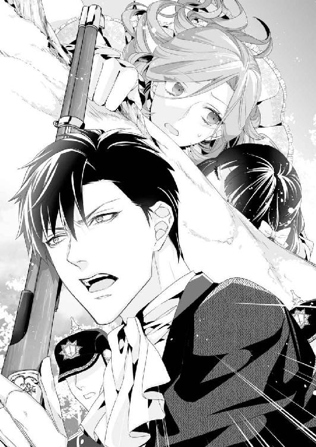
ヒューの胸に抱きしめられ、サラは安堵の息を吐く。
そのとき、背後から悲鳴が聞こえてきた。
それはしだいに小さくなり、やがて消えていく。張り詰めたサラの意識も、その悲鳴と同じように、少しずつ薄れていき、真っ暗な闇に吸い込まれていくのだった。
☆ ☆ ☆
重い瞼をゆっくりと開いていく。
サラの目に映ったのは、この二ヵ月、毎夜見続けた寝室の天井だった。灯心草蠟燭の朧げな光が部屋の中をぼんやりと映し出している。
窓の外が真っ暗なところを見ると、時刻はすでに夜。
サラは今、ヒューの大きなベッドにひとりで寝かされているようだ。
（わたし、気を失ってしまったの？ いやだ、恥ずかしい）
自分がレディらしくないことに、劣等感を抱いていた。その反面、同じことに自尊心も感じていたのだ。
ごく普通のレディと同じ反応をしてしまい、自分に価値がなくなってしまった気がする。
サラが小さなため息をつくと、ふいに目の前にヒューの顔が出てきた。
「気分はどうだ？ どこか痛いところはないか？」
「あ、あの、ヒュー？ ごめんなさい。あんなときに気を失ってしまうなんて、本当に情けないわ」
サラは慌てて身体を起こし、ヒューに謝る。
だが、ヒューのほうが驚いたように手を振った。
「いや、そんなことは全然ない！ 君が情けなかったら、俺たちはどうなるんだ？ 穴を掘って埋まりたくなるから、勘弁してくれ」
言いながら、彼は差し出した手でサラの頭をそうっと撫でてくれる。
それだけのことに幸せを感じ、彼の胸にもたれかかってしまいそうになったとき、サラは気を失う寸前の出来事を思い出した。
「あっ、そうだわ！ ロレッタ様にお怪我はなかったかしら？ フランシス様に......酷いことをされたの。言われたことは半分以上理解できなかったでしょうけど、きっと傷ついたはずだから......。でも、あの悲鳴はフランシス様よね？ 今、どちらにいらっしゃるの？ あと、トミーは？ ああ、それから......ヒュー、あなたはどうして王城に？」
ひとつ思い出したら次々に浮かんできて、尋ねずにいられなくなる。
すると、ヒューは呆れたように笑い始めた。
「ロレッタは無事だ。君が命がけで守ってくれたから、かすり傷ひとつない。あの馬鹿男......いや、トミーは地下牢に放り込んである。我が国で逃がすわけにはいかないからな」
ヒューたちはレッドグレーヴの町に着くなり、トミーが逃げてしまったと聞かされたらしい。
サラに何かあってはと、急いで王都に引き返したところ、街道の途中でアレンの部下とかち合い、フランシスが馬車の中から消えたという報告を受けたのだった。
どちらの捜索も急を要したが、多くの兵士を導入するわけにはいかない。
サラの安全を確保してから本格的な捜索に乗り出そうと思い、王城に戻ってきたところにトミーがいたのだ。
どうやって王城に潜り込んだかはわからなかったが、トミーは慌てふためいた様子で王城の中庭を右往左往していたという。彼は結局、母親のナンシーだけでなく、フランシスにまでいい様に利用されたのだ。
最終的には異国の王城の地下牢にまで入れられてしまったのだから......。
（同情の余地はあるけれど、トミーにも責任がないとは言えないわ。とりあえず、きちんと悔いあらためてもらわなくては）
トミーのことは一旦頭の隅に追いやり、サラはヒューが答え難そうにしていることを、あらためて尋ねた。
「フランシス様がどうなったのか......教えてください」
グレーの瞳がくすんで見える。その目を食い入るようにみつめ続けていた。
すると、ヒューは降参とばかり、大きく息を吐いたのだった。
「積もったばかりの雪が、斜面からごっそり剥がれ落ちたんだ。手前にいた君たちのことは救えたが、フランシスは巻き込まれて下まで......雪の中から見つけたときには、もう」
サラとフランシスのやり取りは、地下牢にいるトミーがペラペラと話したという。
トミーは最初、サラに会うため王城までやって来たようだ。結婚証明書も死亡届も取り消すから、自分が罪に問われないよう執り成してほしい、と頼みに来たらしいが......。
王城の近くをウロウロしていたとき、フランシスに声をかけられた。
そしてサラが想像したとおり、『本物の伯爵令嬢は自分と結婚したあとで死んだ、この女はサラの名前を騙る偽者』そう証言するだけで、トミーをアイアランド王国の貴族にしてやる、と言われ──彼は喜んで即答してしまう。
だが、フランシスはサラと対峙するなり態度を豹変させた。
トミーは気が小さい上に怠け者だ。金持ちの貴族になりたいが、努力して財産や身分を手に入れたいとは思っていない。彼は死体から何かを盗むことはできても、自分の手で殺してまで盗めない人間なのだ。
そんな彼にサラを殺せと命じても、できるはずがない。
「フランシス様は......どうしてあんな強硬手段に出たのでしょう？」
ロレッタもお腹の子供も、ヘンリーの子供ではないと言っていた。だが、ヘンリーが亡くなった今となっては、それを証明するのは難しい。彼女が王太子妃であったことは間違いないのだから、おとなしくしているだけで、それなりの立場でいられたはずだ。
（そこまでしても、ヒューの妻になりたかったの？）
裏庭で、本性を剥き出しにして悪意をぶつけてきたフランシスの姿を思い返すが......サラにはどうしても理解できない。
そんな彼女に、答えをくれたのはヒューだった。
「俺が、あの女の正体を暴こうとしたからだよ」
「正体......それは、五年前の無実を証明しようとした、ということですか？」
「いや、それより前の......兄上を罠に嵌めたこと、だな」
「ヘンリー様を？」
ヒューはおもむろにうなずき、サラに事情を話し始めた。
二ヵ月前──ヒューがサラを連れて王都に戻って間もなくのこと。ヒューはリード大尉から、フランシスの言動や出自におかしな点が見つかった、と報告を受けたという。
フランシスはドネリー辺境伯の庶子と言われていたが、ドネリーには子供がいないことがわかった。彼女は血縁のない養女で、ドネリーの財産を継ぐ資格はない。しかも養女の届けを出したのはヘンリーがドネリー邸に泊まったあとのこと。
ヒューはリード大尉にカドガン王国の調査を任せ、彼自身はドネリー辺境伯の周囲を探り始めた。
その結果、とんでもない事実が判明したのである。
「フランシスはドネリー辺境伯の娘でもなんでもなかった。彼がどこかから買ってきて、愛妾にした女だったんだ」
ドネリー辺境伯の愛妾だった彼女は、より身分の高い男性に見初められることを待ち侘びていた。そこに引っかかったのが、当時二十二歳の王太子ヘンリー。彼は丈夫でなかったことと真面目な人柄から、女遊びなど一切してなかったとヒューは話す。
「それが裏目に出たんだろうな。酔って眠り込んだ翌朝、同じベッドに裸の女がいて、純潔を奪われたと騒がれたら......兄上なら間違いなく求婚するだろう。おまけに、身籠もったと嘘までついて、王城に乗り込んで来たんだ」
「嘘？ でも、そんな嘘をついても、すぐにばれてしまうのでは？」
ヒューは静かにうなずく。
だがフランシスは、結婚してすぐ『流産した』と言って嘘をつきとおしたのだ。
彼女の過去は暴かれる寸前だった。里帰りと称してロレッタを置いたまま城を出たのも、すべてを白日の下に晒される前に逃げ出そうとしたのかもしれない。そこにトミーが飛び込んできて、彼女は起死回生のつもりで急遽、王城に戻って来たに違いない。
（なんてこと......。でも、それが事実なら、ヘンリー様のお気持ちはどうだったの？）
サラがそのことを尋ねると、ヒューは言いづらそうにしたあと──。
誰よりも近くにいたリード大尉曰く、ヘンリーは妻を愛していたが夫婦の行為はできなかったのではないか、と教えてくれた。
「それでも兄上は美しい妻に感謝し、彼女の嘘に気づいたあとも決して責めることなく、与えられる限りの愛情を与えようとした。金やドレスに宝石、王太子妃の身分や権力まで......」
真心を持ち、誠実さの塊だったヘンリーをリード大尉は未来の主君と決めていた。
彼は主君の言葉を信じ、主君の妻を信じようとした。未来の王妃が毒婦であってはならない。疑問も不満も飲み込み、五年間、彼なりに力を尽くしたのだ。
「でも、俺を迎えに来たとき、君から食らった強烈な一発に、目が覚めたと言ってたな」
「わ、わたしは、何も」
こぞってヘンリーばかりを褒め称え、ヒューを見下す彼らの態度が許せず、サラは黙っていられなかっただけだ。
『わたしの夫は神に誓って、どなたにも恥じる行いはしておりません。むしろ、国王陛下の威を借りて暴言を吐く、自らを恥じなさい!!』
あのとき、サーベルを抜かせるほど、リード大尉を激怒させたことは覚えている。
「丸腰の女性に向かってサーベルを抜いた。あの時点で奴の負けだ」
ヒューは苦笑しながら、ベッドの上に腰を下ろし......サラを抱き寄せた。
リード大尉はサラが拘束部屋に閉じ込められたあと、密かにフランシスを探った。
女官を脅迫めいた言葉で脅し、『サラを拘束部屋に閉じ込めなさい』と命じたのがフランシスだったとわかり、知り得たすべての情報をヒューに報告したのだ。
（犯人は大尉ではなかったのね。疑ってしまって、申し訳ないことをしたわ。でも、意地悪ばかり言うのだもの）
フランシスの死亡の一報を受け、リード大尉はヒューにひとつのことを願い出た。
彼自身の降格はもちろん、配置換えで前線に飛ばされることも覚悟している。その代わり、聞き届けてほしいことがひとつだけある、と。
「フランシスは雪崩に巻き込まれた事故死。ロレッタを突き飛ばしたのも、娘を危険から守るためだった──と公表するのは、許せないよな？」
ヒューはサラの機嫌を窺うように、おずおずと語りかけてくる。
たしかに四歳のロレッタにそう言い聞かせたら、母親に殺されそうになったという記憶そのものを消してしまうことができるかもしれない。
（ロレッタのためなら、そのほうがいいのよね？ でも、そうなった場合、彼女の罪が永遠に暴かれないままになってしまう）
サラが黙り込むと、ヒューは彼女の肩口に顔を埋めながらつぶやいた。
「悪い。殺されかけたのは君なのに、あの女の手柄にするなんて......冗談じゃないな」
「そうではありません。わたしのことより、ヒューのことです。フランシス様が死んでしまった以上、五年前のことをあきらかにするのは、今しかないでしょう？」
気になるのはそのことだけだ。それがあるせいで、ヒューに対する周囲の信頼がグッと落ちてしまっている。彼が王太子に、そして国王になるためには、あきらかにしたほうがいいのではないだろうか？
だが、ヒューはサラを抱きしめたまま、息を吐くように答えた。
「もう、いい。俺は生きてるから。自分の手で信用を取り戻すことも、汚名を払拭することもできる。それに......」
いったん口を閉じ、彼女の首筋に口づける。
「ヒュー？」
「愛する妻と心ゆくまで抱き合える──それだけでも、幸せ過ぎて申し訳ないくらいだ。この上、兄上の幸福が偽りだったなんて、わざわざ暴き立てたくない」
「え？」
ヒューはサラを抱きしめ『愛する妻』と言った。
だが、彼はサラとの結婚を、白紙に戻そうとしていたのではなかったか？
サラは頭の中に山のような疑問符を浮かべたまま、冗談めいた口調でヒューに笑いかけた。
「い、いやだ、ヒューったら......あ、愛する妻って、わたしのことに聞こえますよ。だって、わたしが好きと言っても......すまないって、そう」
そこまで言って、ふいに涙がこみ上げてきた。
サラは上を向き、口をギュッと閉じる。
「そんなに、ホワイトリー伯爵になりたいか？ アイアランドの王太子妃ではダメか？ 未来の王妃にはなってくれないのか？」
「で、でも」
「君への思いは、王子に戻ってから告げるつもりでいた。でも、勢いだったと言われて......ああ、でもダメだ！ サラ、君が好きだ。頼む、どうかこのまま俺の妻でいてくれ」
ヒューの告白を聞いた瞬間、涙が吹き出した。
嬉しいあまりの涙が、こんなふうに勢いよく溢れ出るとは、思ってもみなかった。
「サ、サラ？」
彼は困ったような表情で、サラの顔を覗き込んでいる。だがそのまなざしには、深い愛情と優しさが宿っているようで、サラは抑えきれずにヒューの首に抱きついていた。
「好き、です。初めて会ったときから、ずっと好き。あなたに会って、あなたでなければ結婚したくないって思えたくらい、好きなの。ヒューのこと、心から愛しています！ いつまでも、あなたの傍にいたい」
サラの告白を聞き、彼の手が背中に回される。ギュッと抱きしめられた直後、サラの身体はふたたび、リネンの上に転がされていた。
サラが着ているのはデイドレスではなく、柔らかな綿モスリンの寝間着だった。どうやら、気を失っている間に着替えさせられたらしい。
そのことに気づいたのは、ヒューの手が彼女の胸に触れたときだった。
大きな掌に胸を鷲掴みにされ、揉みしだかれる感触が妙に生々しくて──。
トクントクンと胸の鼓動が少しずつ大きくなっていく。ヒューの手で愛撫されていると思うだけで、下腹部が火照ってくる。
そのとき、ヒューは上ずった声でささやいた。
「あの日、あの夜、ほんの数時間でもすれ違ってたら......そう思うと、すごい偶然だ」
サラは少し考えたあと、はにかみながら返事をする。
「いいえ──絶対に出会えたわ。あなたがもし一時間遅れていたら、きっとわたしも一時間遅れていたはずだもの」
「ああ、たしかに。花嫁が必要だと言いながら、君に出会うまで本気で探してなかった。どこにいても、どんな身分だったとしても、俺たちは必ず出会って、恋に落ちた」
情熱的なキスに、サラの心はヒューの虜になった。
抱きしめられるたびに強く惹かれ、彼の傍から離れられなくなっていく。
初めて見た深い紺碧色の海に呑み込まれそうほど、夢中になって互いの唇を奪い合う。熱い波に攫われ、乱されて、堕ちていく感覚に何も考えられなくなる。
荒々しい息の中、ヒューの手が寝間着の下に滑り込んだ。
「ん？ 珍しいね。ドロワーズも穿いてないなんて」
言われるまで気づかなかった。
サラを着替えさせてくれたのは、おそらくモニカだろう。夫婦のことを気遣われたのだろうか......そうでなければ、ドロワーズくらい穿かせてくれたはずだ。
胸を揉まれたとき、直接触られているように感じたのは、サラが綿モスリン一枚しか着ていないせいだった。
「モニカったら、こんなふうに気を回さなくてもいいのに」
「いや、とても脱がせやすくて......モニカに感謝したいくらいだ」
ヒューの指先が、サラの胸元に結ばれた紐をスルッとほどく。
寝間着の襟を絞っていた紐がほどかれ、襟元は大きく開かれた。白い両肩が露わになり、艶やかな肌を滑るように落ちていく。
次の瞬間、彼に両手首を掴まれ──万歳をするような格好にされていた。
「きゃっ！」
女性らしい声が口から漏れる。
ヒューは何も言わず、つんと上を向いたピンク色の突起を口に含んだ。音を立ててねぶられ、その心地よさにサラの息は上がっていく。
「あ......あ、ん......やぁんっ」
甘い声が次々と零れてきて、サラは全身が熱くなった。
（わ、わたしったら、両思いってわかっただけで、こんなふうになってしまうなんて）
自分で自分が恥ずかしくなり、口を閉じようとするのだが......。
ヒューの舌がつーっと肌の上をなぞり、お腹の辺りまでたどり着く。そのまま下に向かおうとしていることに気づいたとき、脚の間にとろっとしたヌメリを感じた。
彼の愛撫にサラの躰は悦びを感じ、期待に蜜を滴らせている。
それを知られるのが恥ずかしくて、太ももを擦り合わせてごまかそうとしたのだが......。綿モスリンの寝間着を脱がされそうになり、臀部を濡らしていることに気づかれてしまう。
「あ、あの、ヒュー、わたしは......あっ、やぁんっ」
足先から寝間着を抜き取られ、サラはベッドの上で一糸纏わぬ姿にさせられた。
熱を孕んだヒューの視線が、彼女の肢体に降り注ぐ。いくら灯心草蠟燭の頼りない光だけとはいえ、すべてを見られるのはこの上なく恥ずかしい。
サラは頬を染めて身を捩った。
「綺麗だ。──透き通るようなストロベリーブロンドが、白いリネンの海に浮かんでるみたいだ。まるで、女神を押し倒してる気分になる......罰当たりかな？」
「罰なんて、そんなこと......。でも、ヒューも脱いでほしい......ダメ？」
「いや、ダメじゃない」
言うなり、彼はクラヴァットをほどいて床に投げた。心持ち急いた様子で、白いシャツも脱ぎ捨てる。
下は軍服のときに着ていた膝丈のブリーチズとは違い、今日のヒューは裾まであるトラウザーズを穿いていた。それを一気にずらし──雄々しい下半身を彼女の目に晒したのだ。
すでに見事なまでにそそり勃ち、下腹に張りついている。
「俺も、もうこんなになってる」
ヒューはサラの手を取り、自らの昂りまで導いた。
結婚して二ヵ月、昨日以外は一日も欠かさず求め合っている。彼自身に触れることも初めてではない。サラの手の中で悦びの頂点へと達したこともあった。
「これまでで一番、大きくなっているみたい」
「当たり前だろう？ やっと、愛する妻って言えたんだ。これで興奮するなって言うほうが無理だよ」
ヒューの照れたような笑顔が愛しくて堪らない。
サラは指先で触れたまま、そっと唇を彼自身に押し当てた。真上を向いてしまっているため、昂りの裏側にキスを繰り返す。
チュッチュッと音を立てて吸ったあと、根元から先端まで、舌先でなぞっていく。
「あっ......クッ！ サ、ラ......待って、ちょっ......くぅっ」
サラの舌先が欲棒の先端を掠めた瞬間──。
それはヒクヒクと痙攣し始め、ビュルッと白濁を噴き上げた。
吐精はしばらくの間続き......ピクンピクンと打ち震えるたび、トロッとした白い液体が流れ落ちてくる。
ヒューはベッドの上に倒れ込むように横になり、ハアハアと荒い息を繰り返していた。
だが、その吐息が鎮まる前、彼はサラの敏感な部分に指を伸ばしてきて......。
「やぁんっ、あ、あ、そこ......やっ......ダメ」
サラが色めいた声を上げ始めたとたん、彼は愛撫をやめてしまったのだ。
「......ヒュー？」
「ダメなんだろう？ それとも、気持ちよくしてほしい？」
「そ......それって、意地悪です」
胸を舐められただけで気持ちよくなってしまっているのに、こんなところで止められたら、どうすればいいのだろう。
「サラ、俺の顔を跨いでごらん」
「で、できませんっ」
「あそこを舐められるのは好きだろう？ ほら、もっと気持ちよくなれるぞ」
彼女から離れ、ニコニコしながら手招きしている。
「俺の相棒をもてあそんだ挙げ句、恥ずかしい姿まで見たくせに、君は見せてくれないんだ」
「それって、いつも......み、み」
いつも見ているくせに、と言いたくて言えない。
ヒューのことだからきっと、『どこを見られてるんだ？』『恥ずかしい姿ってどんな？』などと重ねて聞いてくるに決まっている。
「サラ、愛してるよ」
その言葉を聞いたとたん、ポッと火が点いたように頬が熱くなった。
「ほら、奥さん、おいで。ふたり一緒に気持ちよくなろう」
甘い言葉でねだられ、サラの躰もさらに潤ってきて、もう、我慢できなくなり......。
肩の辺りを跨いだのは失敗だった。あり得ないほど脚を開くことになってしまう。腰をもぞもぞと動かして後ろに下がろうとしたとき、無防備な腰をヒューに掴まれたのだった。
秘められた部分に熱い視線を感じる。
サラの躰から蜜が溢れてきて、ヒューの顔を濡らしていく。そのとき、彼の舌がサラの秘所をペロリと舐め上げた。
「あっ、はぁう......やぁ、あぁ、あぅ......ヒュー、そんな、ダメェ、あ、あ、あ」
ヒューは舌を窄め、サラの蜜窟に押し込んだ。彼の指先は淫芽をまさぐり、サラは腰が抜けそうなほどの快感に身を委ねる。
前のめりに倒れそうになったとき、サラの目の前にヒューの肉棒が横たわっていた。
下腹に張りつくような力強さはないが、それでも挿入可能な硬さを維持しているのだから、有り余る体力が自慢というだけのことはある。
休む間もなく、サラの脚の間から、ピチャピチャと淫らな水音が聞こえてきた。
（あ、やだ、また......）
息を止め、快感の波をどうにか乗り越える。
サラは太ももを戦慄かせながら、ふたたび、ヒューの雄身を手に取った。白濁に塗れたそれは、ほんの少し前に比べればずいぶんと可愛らしい様子だ。
ところが、先端にサラの吐息がかかったとたん──彼の欲棒は、あっという間に力を漲らせたのだった。
「おいおい......ったく、君も、本当に負けず嫌いだ」
ヒューに負けなくないとは思わない。ただ、翻弄されるのも、弱みを見せるのも自分だけ、ということには理不尽さを感じる。
「だって......ふたりで、気持ちよく......なるのでしょう？」
その瞬間、ヒューは身体を起こし、サラの背後に回っていた。
ベッドの上に手をつき、獣のような格好でヒューの昂りを背後から受け入れる。狭隘なサラの蜜道がヒューの熱で埋まっていく。
「やっ、あ、あ、あぁーっ！」
背中をのけ反らせて、サラは快感の渦に身を投じた。
少しずつ蜜襞が溶けていくようだ。その心地よさは、初めて到達した場所ではないだろうか。頭の天辺から爪先まで、甘く痺れてくる。
「サ......ラ、君の躰は、俺のために作られたみたいだ」
最奥で蠢く塊にサラは心を囚われつつ、ヒューが触れた背中や腰にも熱が生まれてくる。
「ヒューも......あなたの躰も、わたしのために、作られた......みたい」
「そんなに、気持ちいい？」
サラの頬に口づけながら、問いかけるヒューの声は甘く掠れていた。
返事をする間もなく、ヒューは腰を打ちつけてくる。激しい抽送にサラは手を伸ばし、天蓋の支柱に抱きついていた。
「この格好だと苦しいか？」
サラは首を左右に振った。
これまでと違う場所に当たるので、その瞬間は少しつらい。だがそれ以上に、深く繋がる感じがして、決して苦痛ではなかった。
サラが支柱に抱きついているせいか、ベッドの天蓋がヒューの動きに合わせてギシギシと揺れている。
「あなたと、愛し合うのは......全部、嬉しくて......苦しいことなんて、何もないもの」
ヒューは彼女に覆いかぶさると、きつく抱きしめた。
ふたりの身体は一対のように重なる。
しだいに、ヒューの動きは少しずつ余裕がなくなり......サラの胎内に溢れんばかりの愛を注ぎ込み、寝室は静寂を取り戻したのだった。
ふたりは座ったまま正面を向いて抱き合い、長いキスを交わした。
ヒューが彼女の身体を絹の毛布で包んでくれたため、サラは心地よい温もりに眠ってしまいそうだ。
だがその前に、伝えなくてはいけないことがある。
「ねえ、ヒュー。──ヘンリー様とフランシス様は、とても愛し合っておられたのよね？ だって、半年以内に揃って神に召されたのですもの」
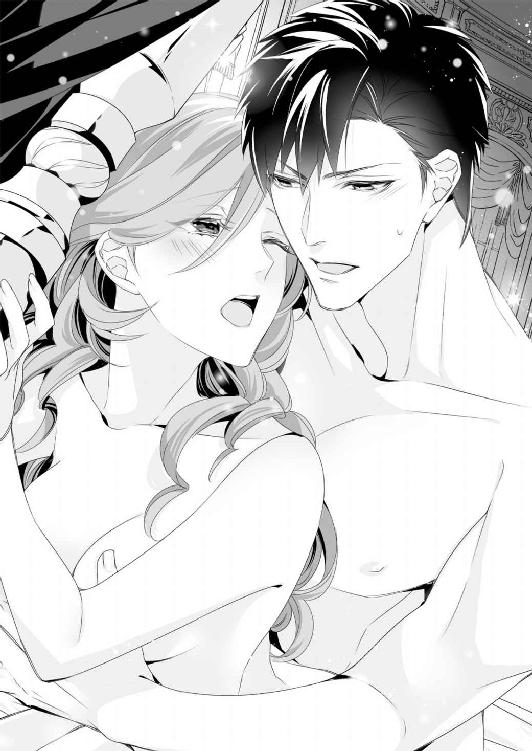
「サラ、それは？」
ヒューの言葉を遮るように、サラは慌てて付け足した。
「ロレッタ様は......お父様が大好きだったそうよ。もちろん、ヘンリー様も──ヒューにそっくりで、元気いっぱいなところが大好きだよって......だから、他のことは何も聞いてないし、わたしは何も覚えていないわ」
フランシスの正体を暴くということは、同時に、名君になるだろうと言われた王太子、ヘンリーの評判も地に堕ちることになる。
そして誰より重い罪を背負わされるのはロレッタだ。
王女の身分は剥奪され、リード大尉が言うところの『毒婦』の娘として世間に放り出されるだろう。
フランシスが死んだ今、ロレッタを罰したところでなんの意味もない。
「でも......トミーをなんとかしないと、彼はお金で簡単に転ぶ人間だから」
「ああ、奴のことは俺に考えがある」
トミーは恩赦を望んでいる。そのためには、嘘をついて伯爵位を奪おうとした主犯は、トミーの母親ナンシーとウェットン卿だと証言させなくてはならない。その上で、トミーをカドガン王国から追放してもらい、アイアランド王国内の目の届く場所に置くことにする。
それがヒューの考えだった。
ただ、その場合、ナンシーたちは指名手配され、捕まったときは相応の罰を受けることになるだろうと言う。
「すでに国外逃亡したという情報もある。まあ、あの手の魔女なら、どこに行っても図太く生き抜くさ」
血の繋がった姪なのに、冷たいかもしれないが......。
ヒューの言葉にサラは笑ってしまう。
（だって、時間が経てば、何ごともなかったように戻って来そうなのだもの）
サラはヒューの鎖骨辺りに額を押し当て、ポツリと呟いた。
「領地の人々は、伯爵家の使用人たちは、どうなるのかしら？ モニカは何も言わないけれど、戻りたがっているのよ」
両親の身を案じつつ、サラを気遣い、話題にもせずにいてくれるのだ。
そんなモニカに申し訳なくて、せめて祖父母から受け取ることのできる信託財産をすべて投じても、使用人たちが身の立つようにしてやりたい。
すると、ヒューが思い出したように口にした。
「悪い！ 戻るなりあの騒動だったから、すっかり忘れてた......」
レッドグレーヴで顔を合わせたコルボーン市の治安判事は、女王の判断を預かってきていた。
それによると──サラ・コンスタンスの生存が確認された場合、領地や財産はそのままホワイトリー家の後継者であるサラが継ぐことを認める。ホワイトリー伯爵位は休止状態となり、サラの子供がアイアランドの身分を捨て、カドガンに忠誠を誓った場合のみ復活させることができる──と。
「家令の......カートライトだったかな？ 彼が頑張ってくれてるそうだ。同盟国である限り、滞在は自由だそうだから、落ちついたら一緒にタウンハウスに行こう......サラ？」
サラは心の底からホッとしていた。
嬉しくて、幸せで、暖かくて......。肌から伝わってくるヒューの鼓動は、遠い昔、母の腕の中で聞いた安らぎの音に似ている。
──叶うなら......伯爵家にふさわしい身分の男性と恋に落ちたい。
その男性は人々の尊敬を集めるような人格者で、魅力的な容姿をしており、サラのことを熱烈に愛してくれる男性であれば......。
サラはヒューの腕の中で、一生分の感謝の言葉を神様に捧げたのだった──。
あとがき
こんにちは＆はじめまして、蜜猫さんでは二年ぶりの御堂志生です。
前作「覇王の～」はヒーローの出生に変化球を入れてみたんですが、今回はヒロインがちょっと変わってるかも。現代ならアクティブ系女子？ 襲われた時も黙って引っ込んでません。作者がヒーローと一緒になって、オイオイと突っ込みそうになりました（笑）
イラストは初めてお世話になりました、ウエハラ蜂先生。ため息が出るくらい美麗なヒーロー＆ヒロインを描いていただきました。ウエハラ先生、ありがとうございましたっ!!
最後に──ずっと応援してくださっている読者の皆様、励まし合って頑張ってる物書き仲間のお友だち、冊数を重ねるごとに優しくなる（笑）担当様、いつもお世話になっている関係者の皆様、黙って見守ってくれる家族にも──皆様、本当にありがとうございます。
そしてこの本を手に取って下さった〝あなた〟に、心からの感謝を込めて。
またどこかでお目に掛かれますように──。
御堂志生
Story
御堂志生
みどう しき
ミシンを買いました。使うのは私...ではなく娘のリクエストです。ミシンなんてもう何年も触ってないなぁと思い、久しぶりに使ってみました。いろんな機能がついてて面白いですね。ちなみに、私が縫ったのは雑巾です...（笑）
Illustration
ウエハラ蜂
うえはら はち
よくマグでコーヒーを飲むのですが、シリコンリッドの便利さに最近気がつきました。

蜜猫文庫をお買い上げいただきありがとうございます。
この作品を読んでのご意見・ご感想をお聞かせください。
あて先は下記の通りです。
〒102-0072 東京都千代田区飯田橋 2-7-3
㈱竹書房 蜜猫文庫編集部
御堂志生先生／ウエハラ蜂先生
逃亡花嫁は海軍士官の王子様につかまえられました♥ ［電子書籍版］
発行日 ２０１８年１月１日 発行
著 者 御堂志生
デザイン antenna
発行者 後藤明信
発行所 株式会社竹書房
〒１０２－００７２
東京都千代田区飯田橋２－７－３
ＴＥＬ ０３－３２６４－１５７６
データ加工 有限会社ワイズネット
©MIDO Shiki 2018
本書の一部あるいは全部を著作権者および株式会社竹書房に無断で複写・複製すること、および放送・上演・公衆送信（ホームページ上への掲載を含む）などは、法律で認められた場合を除き著作権の侵害となります。